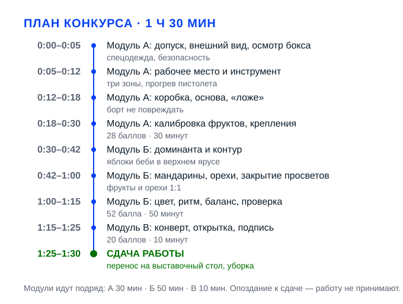
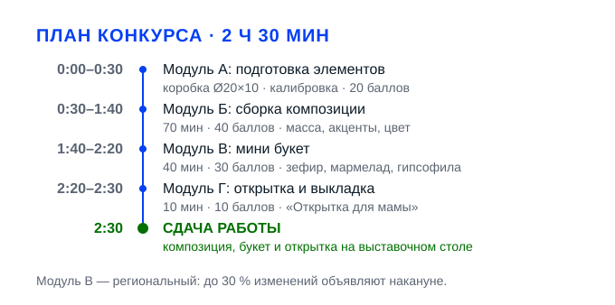
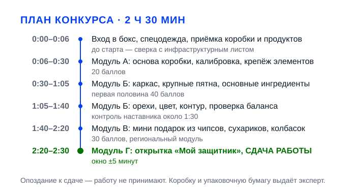

Фуд-флористика (Р)
Задания ниже — официальные файлы «Абилимпикс» (источник: abilympics-russia.ru), разложенные по категориям. Решения написаны по тексту задания, регламенту и критериям оценки; в них указано, что именно проверяет эксперт.
Школьник
14–16 лет, базовый уровень заданияВыдержка из официального конкурсного задания: страницы, относящиеся к категории «Школьник» (стр. 5–8 источника).
Пошаговое решение
Час тридцать минут, сто баллов и круглая шляпная коробка диаметром 15 сантиметров и высотой 10 сантиметров — всё, что есть у школьника на компетенции «Фуд-флористика». Задание называется «Новогодний букет»: из фруктов, орехов и декоративных элементов нужно собрать композицию, где фрукты и орехи идут в равной пропорции, а яблоки беби, мини мандарины и грецкий орех в скорлупе узнаются без объяснений. Модули идут подряд: подготовка элементов 30 минут и 28 баллов, сборка композиции 50 минут и 52 балла, конверт с открыткой 10 минут и 20 баллов. Домашние заготовки запрещены, коробку повреждать нельзя, а работу перенесут на выставочный стол, и она должна доехать целой. Накануне в задание вносят до 30 процентов изменений: тему, набор продуктов и размеры коробки менять не могут, но обязательный декоративный элемент добавить могут, поэтому набор сверяют с экспертом до старта.

Задача 1. Организовать рабочее место и придумать композициюМодуль А · до 28 баллов
Модуль А идёт тридцать минут, и в нём нет ни одного балла за красоту: оценивают организованное рабочее место, опрятный внешний вид, безопасную работу, подготовку основы и подготовку элементов. Именно здесь закладывается всё, что потом видно в готовой коробке, поэтому первые полчаса нельзя потратить на «подумаю по ходу». Сначала вы обустраиваете бокс и раскладываете инструмент так, чтобы до всего было полшага, затем готовите коробку и крепления, и только после этого начинается сборка.
Действие 1.1. Пройти допуск и осмотреть бокс
Шаг 1.1.1
Надеваем фартук или рабочую куртку, убираем волосы под колпак или плотную резинку, снимаем кольца, браслеты и часы, проверяем, что ногти коротко подстрижены и без покрытия. Руки моем с мылом до запястий, вытираем одноразовым полотенцем насухо, а не о фартук. Это не формальность: дальше вы будете брать яблоки беби и мини мандарины, которые уйдут в композицию целиком, вместе с кожицей, и всё, что осталось на ладонях, останется и на фруктах.
Опрятный внешний вид и безопасная работа вынесены в результаты модуля А отдельными строками, а соблюдение правил безопасности при подготовке элементов оценивают в 5 баллов из 28. Балл этот не набирают в конце — его снимают в тот момент, когда эксперт видит нарушение, поэтому проверить себя нужно до старта, а не после первой ошибки. Кроме того, аккуратный вид с первой минуты показывает, что участник понимает, где он находится и что делает.
Проверьте себя по трём признакам: волос не видно ни спереди, ни сзади; фартук чистый, застёгнут и не топорщится; на руках нет украшений, ногти без лака. Ладони должны быть сухими, потому что мокрая рука оставляет на кожице яблока тёмные следы, а они отлично видны на выставочном столе при дневном свете.
Чаще всего оставляют кольцо «оно же не мешает» или сажают колпак на макушку, оставив затылок открытым: спереди всё аккуратно, а сзади волосы выбиваются. Вторая ошибка — прийти в футболке и открытой обуви, рассчитывая надеть фартук «потом»: время на это уйдёт из модуля А, а балл за внешний вид уже снят.
Эксперт фиксирует внешний вид на входе в бокс, до старта, и потом поглядывает, остаётся ли фартук чистым: следы сока, клея и сизаля к середине работы тоже считаются.
Шаг 1.1.2
Обходим бокс по периметру и проверяем то, из-за чего чаще всего встаёт работа: стол не качается, розетка для клеевого пистолета под рукой и не за спинкой, света хватает на дальний край стола, рядом есть раковина или ёмкость с водой для мытья фруктов. Сразу смотрим, где можно поставить коробку так, чтобы её не задеть локтем, и где будет стоять мусорка. Если чего-то не хватает — поднимаем руку и зовём эксперта до старта, а не в середине сборки.
Работа на шатающемся столе — это и риск уронить готовую композицию, и потеря баллов за безопасную работу, которых в модуле А пять. Клеевой пистолет, включённый в неудобную розетку, тянет провод через весь стол: за него цепляются, и горячее сопло оказывается там, где лежит сизаль. Тридцать минут модуля А короткие, и любая перестановка в середине съедает две-три из них.
Признаки исправного места простые: стол стоит без качания, провод пистолета лежит по дальней кромке и не пересекает рабочую зону, свет падает так, что вы видите цвет яблока без тени от руки, вода для мытья набрана. Если хотя бы один пункт не выполняется — меняйте место или расположение инструмента сейчас.
Типичная ошибка — начать раскладывать материалы, не заметив, что стол качается, и обнаружить это на этапе установки шпажек, когда композиция уже почти собрана. Вторая — поставить коробку на край стола: одно неловкое движение, и работа падает на пол, а восстановить её за оставшееся время невозможно.
Эксперт обходит боксы в первые минуты и отмечает, как участник занял место: удобно ли, безопасно ли, нет ли провода под рукой. Смотрит он и на руки: сухие ли они, когда участник берётся за фрукты.
Шаг 1.1.3
Уточняем у эксперта два момента, которые меняются от чемпионата к чемпионату: полный состав набора по инфраструктурному листу и внесённые 30 процентов изменений в задание. Изменения принимают накануне, они не могут касаться темы, основного набора ингредиентов и размеров коробки, но могут добавить обязательный декоративный элемент или условие по технике. Сверяем: яблоки беби, мини мандарины и грецкий орех в скорлупе на месте, коробка круглая, диаметр 15 сантиметров, высота 10 сантиметров, бумага и декор от организаторов получены.
Сверка с листом — единственный момент, когда недостающее ещё можно получить без потери времени: после старта замена идёт только через главного эксперта и только при уважительной причине. Изменённые 30 процентов могут добавить обязательный элемент, и если вы о нём не знаете, целый критерий «соответствие заданной теме» на 4 балла в модуле В и доминирование фруктов в модуле Б останутся без ваших баллов.
Все позиции списка отмечены, расхождения названы вслух и записаны, размер коробки проверен линейкой, а не на глаз: 15 сантиметров по внешнему диаметру и 10 по высоте. Если коробка помята или на борту есть залом — покажите её эксперту до старта, потому что повреждение коробки по условиям задания не допускается.
Самая дорогая ошибка — не спросить про изменения и узнать о дополнительном обязательном элементе из уст эксперта во время оценки. Вторая — молча обнаружить, что орехов меньше, чем нужно для равной пропорции с фруктами, и решить «растяну»: композиция получится с перекосом, а критерий доминирования фруктов и распределения элементов потеряет баллы.
Эксперт отвечает на вопросы до старта охотно, а после старта только фиксирует. Он же смотрит, сверялся ли участник со списком или начал работать наугад.
Действие 1.2. Разложить инструмент и материалы по зонам
Шаг 1.2.1
Делим стол на три зоны и больше не смешиваем их до конца работы. Слева — сухая зона с бумагой, картоном, линейкой, карандашом и ножницами, там же будет собираться конверт. В центре — зона сборки: коробка на подложке из клеёнки или плотной бумаги, вокруг неё крепления, сизаль и декор. Справа — клеевой пистолет на подставке и тряпка, потому что капля клея летит именно вправо, по ходу движения руки.
Разделение на зоны — это не про красоту, а про чисто работу, которую в модуле Б оценивают в 5 баллов, и про скорость: когда инструмент лежит на своём месте, вы не ищете ножницы в сизале. Клеевая зона отдельно от бумажной нужна ещё и потому, что горячий клей на картоне открытки оставляет лоснящееся пятно, а критерий «чистота работы, без следов клея» стоит 4 балла.
Проверьте так: пройдите взглядом от левого края стола к правому и назовите, что где лежит. Если на это уходит больше пяти секунд или вы путаетесь — переложите. Коробка должна стоять так, чтобы к ней был доступ с трёх сторон, а не только спереди.
Ошибка новичка — сложить всё в одну кучу «чтобы под рукой»: тогда шпажки оказываются под листом бумаги, а ножницы под сизалем, и на поиски уходит по минуте несколько раз за модуль. Вторая — поставить клеевой пистолет вплотную к коробке: случайная капля прилипает к борту, и коробка считается повреждённой.
Эксперт смотрит на организацию места в первые минуты модуля А и возвращается к ней при оценке чистоты рабочего места. Отдельно отмечает, лежат ли материалы так, чтобы не тянуться через коробку.
Шаг 1.2.2
Проверяем инструмент по одному предмету и сразу откладываем неисправное. Ножницы должны резать бумагу, а не жевать её: проверяем на обрезке. Канцелярский нож — с новым лезвием и закрытым колпачком, когда лежит. Линейка не короче 20 сантиметров, карандаш заточен. Клеевой пистолет включаем сразу, потому что выходит на рабочую температуру три-пять минут, и ставим в подставку соплом вверх, в стороне от бумаги.
Тупые ножницы рвут картон, и край открытки получается лохматым — это видно на оценке аккуратности декора, где 4 балла. Холодный пистолет выдаёт клей комками, которые не схватываются, и орех отваливается от шпажки уже при переносе работы. Прогрев заранее — это те три минуты, которые иначе вы отнимете у сборки.
Инструмент проверен, если ножницы режут обрезок бумаги чисто, лезвие ножа новое, пистолет прогрет и на подставке, рядом лежит запасной стержень. Капните клеем на ненужный обрезок: капля должна быть прозрачной и тянуться нитью, а не лежать матовым сгустком.
Самая частая ошибка — включить пистолет, но не проверить, что в нём есть стержень: он пустой, и первые две минуты уходят на поиск упаковки. Вторая — оставить пистолет лежать на боку: клей вытекает на стол, а сопло прилипает к подложке.
Безопасная работа с инструментом — часть пяти баллов модуля А; эксперт отдельно отмечает, лежит ли горячий пистолет в подставке. Стержень в пистолете и закрытое лезвие ножа — тоже предмет проверки.
Шаг 1.2.3
Готовим вспомогательное, о чём обычно вспоминают поздно: ёмкость для обрезков, влажную тряпку и сухие салфетки, подложку под коробку и отдельную тарелку для откалиброванных фруктов. Мусор складываем сразу в ёмкость, а не на угол стола, обрезки шпажек — туда же. Салфетки нужны для двух вещей: вытирать руки после фруктов и промокать капли клея, пока они горячие.
Чистота рабочего места — это 5 баллов в модуле А и ещё 5 в модуле Б, то есть десятая часть всего результата. Причём оценивают не только финальный вид стола: эксперт проходит по боксу в процессе и видит, растёт ли гора обрезков рядом с коробкой. Влажная тряпка под рукой позволяет убрать каплю за секунду, пока она не приклеилась к подложке.
Стол организован правильно, если обрезки уходят в ёмкость, а не накапливаются, тряпка лежит в правой зоне, салфетки сухие, а под коробкой есть подложка, которую можно снять и выбросить. Проверьте через двадцать минут работы: если мусор приходится сгребать рукой — ёмкость стоит не там.
Работать «в мусоре» и надеяться убрать в конце — плохая стратегия: за десять минут до сдачи уборка отнимает время у декора, и в итоге теряются баллы и за чистоту, и за модуль В. Вторая ошибка — вытирать руки о фартук вместо салфетки: липкие следы сока остаются на ткани и потом переносятся на бумагу открытки.
Эксперт оценивает чистоту дважды: по ходу работы и на финальной линии, когда работа стоит на выставочном столе. Ёмкость для обрезков, стоящая на полу под столом, читается как понимание процесса.
Действие 1.3. Зафиксировать замысел на бумаге
Шаг 1.3.1
Берём лист бумаги, обводим дно коробки — получается круг диаметром около 15 сантиметров, — и за четыре-пять минут рисуем схему: где будут крупные яблоки, где мандарины, где орехи, где декоративные веточки и лента. Отмечаем центр, отмечаем, с какой стороны композиция будет «смотреть» на зрителя, и сразу решаем, будет ли у неё высотная доминанта. Схему держим перед глазами на столе, а не в голове.
Критерий «композиция — общее впечатление» стоит 5 баллов, «распределение элементов» ещё 5, а «идея, креативность дизайна» — 6, и все три опираются на замысел, а не на ловкость рук. Без схемы композиция собирается стихийно: первые фрукты ставятся крупно и близко, потом места не хватает, и работа получается скученной с одной стороны и пустой с другой. Пять минут на эскиз экономят двадцать на переделку.
Схема годится, если на ней читается рисунок: видно, где крупные пятна, где мелкие, где проходит линия декора, и нет двух одинаковых соседних элементов. Проверьте приёмом «прищуренного взгляда»: если, прищурившись, вы всё равно понимаете, где центр и куда движется композиция, схема рабочая.
Типичная ошибка — рисовать эскиз «для эксперта», красиво и не по делу, а собирать по-другому. Вторая — вообще отказаться от схемы, потому что «я вижу картинку в голове»: к середине сборки картинка расходится с реальным количеством фруктов, и участник начинает переставлять уже поставленное, ломая крепления.
Эксперт смотрит на эскиз мельком, но по готовой работе сразу видно, был ли он: у работ со схемой чище ритм и нет случайных пустот. Эскиз на столе во время сборки эксперт тоже замечает.
Шаг 1.3.2
Пересчитываем продукты и раскладываем их на две кучки: фрукты и орехи. По условию они должны идти в равной пропорции, поэтому удобно взять одинаковое число штук — например, по восемь: четыре яблока беби, четыре мини мандарина и восемь грецких орехов. Лишнее убираем в сторону, брак откладываем отдельно и не выбрасываем до конца конкурса. Число записываем на эскизе, чтобы не сбиться при сборке.
Равная пропорция фруктов и орехов — обязательное условие задания, и оно проверяется глазами эксперта в критерии доминирования фруктов, который стоит 5 баллов. Если орехов окажется вдвое меньше, работа читается как фруктовая с редкими вкраплениями, и балл снижается независимо от аккуратности. Подсчёт заранее нужен ещё и потому, что на глаз «примерно поровну» почти всегда означает перекос в сторону того, что крупнее.
Проверьте пропорцию арифметикой: число фруктов и число орехов должно совпадать или отличаться на один. Разложите кучки рядом и сравните визуально — если орехи явно теряются, добавьте два-три и уберите один фрукт, а не наоборот.
Ошибка — считать «фрукты» и «орехи» по весу и не сойтись в штуках: визуально вес не читается, а штуки читаются сразу. Вторая — отложить бракованный мандарин в общую кучку «пойдёт внутрь, там не видно»: внутри как раз видно, потому что композиция смотрится сверху.
Эксперт пересчитывает материал в готовой работе, а не в заявке, и оценивает именно то, что лежит в коробке. Пропорция фруктов и орехов проверяется именно в готовой работе, по видимым элементам.
Задача 2. Подготовить шляпную коробку как основуМодуль А · до 28 баллов
Коробка — не упаковка, а часть работы: её выдают организаторы, и по условиям задания повреждать её нельзя. Круглая шляпная коробка диаметром 15 сантиметров и высотой 10 сантиметров задаёт и границы композиции, и её устойчивость. В этом действии вы защищаете картон, ставите внутреннюю основу под крепления и делаете «ложе», в которое потом лягут фрукты. Ошибки здесь не видны сразу, но проявляются на переносе: работа наклоняется, шпажки гуляют, борт коробки проминается.
Действие 2.1. Защитить коробку и поставить основу
Шаг 2.1.1
Осматриваем коробку до начала работы: борт ровный, дно без залома, крышка не потёрта. Затем закрываем внутреннюю сторону борта полосой тонкой бумаги или пищевой плёнки на двусторонний скотч, не заходя на внешнюю поверхность. Резать картон, прокалывать его шпажкой и приклеивать что-либо на внешний борт нельзя — это и есть повреждение коробки, которое запрещено.
Условие «не допускается повреждение шляпной коробки» записано в параметрах модуля Б, и его проверяют до того, как смотреть на композицию. Внутренняя защита нужна потому, что сок мандарина и влага от мытых фруктов оставляют на картоне тёмные разводы, а клей схватывается с покрытием намертво. Снять защиту проще, чем объяснить эксперту пятно на борту.
Проверьте коробку на просвет и на ощупь: внешний борт чистый, без капель клея и следов сока, защитная полоса держится ровно и не топорщится над краем. Диаметр по внешнему краю — 15 сантиметров, высота борта — 10, отклонение больше полусантиметра заметно на выставочном столе.
Частая ошибка — приклеить сизаль или декор прямо на внешний борт «чтобы было нарядно»: это прямое нарушение условия, и работа теряет баллы сразу в нескольких критериях. Вторая — поставить коробку на мокрую подложку: дно разбухает, и коробка перестаёт стоять ровно.
Эксперт осматривает коробку до и после сборки, отдельно проверяя борт и дно на заломы и пятна. Пятно от сока на внутренней стороне борта он тоже считает повреждением, даже если снаружи всё чисто.
Шаг 2.1.2
Вырезаем внутреннюю основу: круг из пенопласта или флористической пены толщиной три-четыре сантиметра по внутреннему диаметру коробки, то есть примерно 14 сантиметров. Круг должен входить с небольшим усилием, без зазора по краю, чтобы он не ездил. Сажаем его на дно на две полосы двустороннего скотча крест-накрест и прижимаем на десять-пятнадцать секунд.
Основа держит шпажки: без неё они стоят в сизале, который не фиксирует ничего, и первый же наклон коробки роняет всю постановку. Критерий «физический баланс» стоит 4 балла в модуле А и ещё 4 в модуле Б, а «устойчивость к транспортировке» — отдельное требование задания: работу поднимают и переносят на выставочный стол, и она должна доехать в том же виде.
Проверьте рукой: нажмите на основу в центре и у края — она не пружинит вниз и не отходит от дна. Коробка, поставленная на стол и слегка толкнутая, не должна издавать стука гуляющей внутри детали. Зазор между основой и бортом — не больше двух миллиметров.
Ошибка — вырезать основу на глаз, «на полсантиметра меньше»: она ездит, и шпажки наклоняются вместе с ней. Вторая — приклеить основу на горячий клей: он схватывает мгновенно, поправить положение уже нельзя, а снять деталь без повреждения дна не получится.
Эксперт проверяет основу нажатием и покачиванием коробки — это самый быстрый способ увидеть, будет ли работа устойчивой. Основа, вырезанная с зазором, выдаёт себя наклоном шпажек в одну сторону.
Шаг 2.1.3
Проверяем геометрию до того, как появится первый фрукт: коробка стоит на столе без подкладки под борт, основа лежит ровно, её верх на три-четыре сантиметра ниже края борта. Ставим коробку на подложку и обводим карандашом место, чтобы после каждой перестановки возвращать её точно на то же место. Сразу откладываем крышку в сторону, подальше от клея. Крышку при этом держим в стороне от клея.
Ровно стоящая коробка — половина оптического равновесия, за которое в модуле Б дают 5 баллов по общему впечатлению. Если основа встала с перекосом, все вертикальные шпажки уйдут от вертикали на один и тот же угол, и композиция будет выглядеть завалившейся, сколько её ни поправляй сверху. Крышка, лежащая рядом с пистолетом, — это гарантированные капли клея на видном месте.
Проверьте уровнем или простым способом: поставьте коробку на стол, присядьте и посмотрите на борт сбоку — линия края должна быть горизонтальной. Основа не должна выступать над бортом; если выступает, срежьте два-три миллиметра ножом, а не давите пальцем.
Типичная ошибка — ставить коробку прямо на картонную подложку без фиксации: при каждом движении она съезжает, и вы теряете ориентир. Вторая — оставить крышку на столе: она мешает, её сдвигают, и на ней остаются отпечатки пальцев и клей.
Эксперт смотрит на коробку сбоку, на уровне стола: перекос борта виден сразу, даже если сверху композиция выглядит ровной. Заодно он проверяет, не стоит ли коробка на самом краю стола.
Действие 2.2. Сделать «ложе» под фрукты
Шаг 2.2.1
Насыпаем сизаль или бумажную стружку слоем два-три сантиметра, распределяя её от центра к краям и слегка уплотняя у борта. Пальцами формируем углубления под каждый крупный фрукт: яблоко беби диаметром четыре-пять сантиметров должно садиться в свою ямку, а не лежать на бугре. Середину делаем чуть выше краёв — тогда композиция получает купол, а не плоское донце.
«Ложе» решает две задачи: скрывает техническую часть — основу, скотч, следы клея — и держит фрукты от скатывания. За чистоту работы в модуле Б дают 5 баллов, и первое, что видит эксперт, когда смотрит в коробку, — просветы и торчащие края пены. Купол из сизаля, кроме того, работает на общее впечатление: композиция читается как объёмная, а не как натюрморт на дне.
Проверьте ладонью: сизаль лежит плотно, не рассыпается при наклоне коробки на 30 градусов, основа не просвечивает ни в центре, ни у борта. Углубления под яблоки должны быть на одном уровне, иначе композиция получится с уступами, которых вы не планировали.
Ошибка — насыпать сизаль ровным слоем «как в коробке конфет»: фрукты ложатся сверху и скатываются к борту. Вторая — наоборот, набить так плотно, что сизаль выпирает над краем: коробка выглядит переполненной, а борт, который нельзя повреждать, оказывается под давлением изнутри.
Эксперт смотрит в коробку сверху и сбоку: важно, чтобы не было видно основы и чтобы сизаль не выходил за борт. Просвет до белой пены у борта — самая частая причина минуса за чистоту.
Шаг 2.2.2
Закрываем все технические места: полоски скотча, край пены, стыки бумаги. Делаем это мелкими пучками сизаля или обрезками декоративной бумаги, приклеивая их точечно на горячий клей по внутреннему борту, ниже его верхней кромки на пять миллиметров. Работаем пинцетом или зубочисткой: пальцем в узкой коробке не подлезть, а клей успевает остыть за две секунды.
Просветы — самая частая причина снижения оценки за чистоту работы, а это 5 баллов. Кроме того, видимая пена и скотч читаются как недоделанная работа, хотя композиция может быть красивой. Точечная подклейка по борту нужна ещё и потому, что сизаль от движения осыпается, и через десять минут на месте пятна снова появится просвет.
Проверьте, наклонив коробку к свету: ни в одном месте не должно блестеть скотчем или просвечивать белой пеной. Проведите пальцем по внутреннему борту — нитки клея не должны цепляться, иначе они видны и считаются грязью.
Частая ошибка — заклеивать просвет большим куском бумаги: он топорщится, и композиция выглядит небрежно. Вторая — капнуть клеем на видимую часть борта: пятно уже не убрать, а это и повреждение коробки, и грязь одновременно.
Эксперт наклоняет коробку и смотрит на просвет — этот приём показывает все технические огрехи за одну секунду. Отдельно смотрит, нет ли ниток клея на внутреннем борту: они цепляются за палец.
Шаг 2.2.3
Выставляем высоту рабочей поверхности: верх сизаля должен быть на один-два сантиметра ниже края борта, чтобы фрукты сидели внутри, а не выпирали над коробкой. Если сизаля много — убираем ложкой или рукой, если мало — добавляем по краям, а не в центр. Сразу прикидываем габарит будущей композиции: она может подниматься над бортом не более чем на высоту самого фрукта, иначе работа теряет устойчивость.
Высота напрямую связана с двумя критериями: физический баланс на 4 балла и устойчивость к транспортировке, которую проверяют переносом на выставочный стол. Композиция, выпирающая над бортом, при переносе цепляется за руку и осыпается. Кроме того, при оценке сверху видно, что крупные фрукты стоят выше края и закрывают друг друга.
Присядьте и посмотрите на коробку сбоку: линия сизаля ровная, ниже борта на один-два сантиметра, без горбов. Поставьте на рабочую поверхность ладонь — она должна уходить внутрь коробки, а не лежать на краю.
Ошибка — досыпать сизаль «чтобы было пышнее» и получить бугор выше борта: тогда коробка не закрывается крышкой и работа выглядит незавершённой. Вторая — сделать слой слишком тонким: фрукты проваливаются до пены, и шпажки торчат наружу.
Эксперт оценивает силуэт работы с уровня глаз: если сизаль выходит за борт, силуэт разваливается, и общее впечатление теряет баллы. Крышку он тоже просит показать — она должна быть чистой.
Задача 3. Подготовить фрукты, орехи и крепленияМодуль А · до 28 баллов
Здесь набирается самая плотная часть модуля А: калибровка фруктов и орехов стоит 5 баллов, сложность техники крепления — 4, целостность фруктов и орехов — ещё 5. Смысл в том, что композиция собирается не из того, что попалось под руку, а из отобранного материала: одинаковые по размеру яблоки, одинаковые мандарины, целые орехи. Крепления делаются заранее и проверяются на прочность до того, как элемент встанет в коробку, потому что переделывать вставленное яблоко уже некогда.
Действие 3.1. Вымыть, обсушить и откалибровать фрукты
Шаг 3.1.1
Моем яблоки беби и мини мандарины в холодной воде, не замачивая, и сразу выкладываем на бумажное полотенце. Каждый плод промокаем со всех сторон и оставляем досыхать на десять-пятнадцать минут, переворачивая один раз. Воду меняем после первой партии, если она стала мутной, а мокрым полотенцем не вытираем — только сухим. Полотенце меняем, как только оно намокло, иначе вытирание превращается в размазывание воды.
Вода на кожице — главный враг этой работы: клей по мокрой поверхности не схватывается, а капли, стекая, оставляют на картоне коробки тёмные следы, которые уже не убрать. Критерий целостности фруктов и орехов на 5 баллов оценивает в том числе и то, что плоды не размякли и не потеряли вид. Холодная вода нужна потому, что тёплая ускоряет размягчение кожицы, а работа стоит на столе ещё час.
Проверьте ладонью: кожица сухая, без капель в углублении у плодоножки, полотенце под фруктами сухое. Если на салфетке остался мокрый след — фрукт ещё сырой, верните его досыхать, а не вытирайте сильнее.
Ошибка — помыть фрукты и сразу начать крепить: капля воды под клеем превращается в белый налёт, который видно на тёмной скорлупе и на красном боку яблока. Вторая — мыть в горячей воде «чтобы быстрее высохло»: кожица мандарина становится мягкой и рвётся при проколе шпажкой.
Эксперт берёт работу в руки и смотрит на кожицу: следы воды, потёртости и размятые бока видны сразу, особенно на яблоках. Мокрые фрукты он находит по разводам на сизале под ними.
Шаг 3.1.2
Раскладываем фрукты на три группы по размеру. Яблоки беби сортируем так, чтобы разница между самым крупным и самым мелким в работе не превышала пяти миллиметров: диаметр рабочих яблок обычно четыре-пять сантиметров. Мандарины — три-четыре сантиметра, тоже одной группой. Плоды с вмятинами, трещинами, тёмными пятнами и следами плесени откладываем в сторону и в композицию не берём.
Калибровка — отдельный критерий на 5 баллов, и он про то, насколько ровно читается работа: разнокалиберные яблоки создают ощущение случайности, даже если композиция построена по схеме. Ровный размер даёт ритм: глаз воспринимает повторяющиеся пятна как узор, а не как набор продуктов. Кроме того, одинаковые плоды предсказуемо держатся на шпажках одинаковой длины.
Разложите отобранное в ряд и посмотрите вдоль стола: верхняя линия плодов должна идти примерно ровно. Проверьте количество — оно должно совпадать с записанным на эскизе, иначе пропорция фруктов и орехов сломается.
Частая ошибка — брать всё подряд, «чтобы хватило»: в коробку диаметром 15 сантиметров много не войдёт, а лишние плоды занимают место на столе и мешают. Вторая — оставлять яблоко с маленькой вмятиной «на невидимую сторону»: композиция смотрится сверху и со всех сторон, невидимой стороны у неё нет.
Эксперт выкладывает фрукты в ряд или сравнивает соседние в работе — разница в размере фиксируется как нарушение калибровки. Он сравнивает не только размер, но и оттенок: разнотон тоже читается как небрежность.
Шаг 3.1.3
Снимаем с плодов наклейки и этикетки, подрезаем плодоножки яблок до двух-трёх миллиметров, у мандаринов оставляем черешок, если он целый, и убираем сухие листья. Места, где был клей от наклейки, протираем сухой салфеткой, а не мочим. Кожуру не чистим и не надрезаем для декора: по заданию фрукты идут целыми. Сортировку делаем на отдельной тарелке, чтобы очищенные плоды не смешивались с необработанными.
Наклейка на виду — это мгновенная потеря баллов за чистоту работы и за общее впечатление, причём заметь её эксперт может уже на выставочном столе, когда исправить нечего. Подрезанная плодоножка нужна, чтобы яблоко садилось в «ложе» плотно и не цеплялось за соседей. Целостность плодов — 5 баллов, и любая надрезанная кожица читается как порча продукта.
Проверьте каждый плод на просвет и на ощупь: наклеек нет, плодоножка короткая, кожица целая, липких следов от этикетки нет. Отложите в сторону всё, что пришлось надрезать, — такие плоды в работу не идут.
Ошибка — срезать с яблока «некрасивый бок» ножом: получается светлая мякоть, которая темнеет за двадцать минут, и на работе появляется бурое пятно. Вторая — оставить наклейку на мандарине, который стоит в нижнем ярусе: его видно хуже всех, но именно его и заметят.
Эксперт осматривает кожицу каждого плода в работе, а не только верхнего яруса. Наклейка на мандарине, спрятанном в нижнем ярусе, для него не сюрприз: он поворачивает коробку и смотрит по кругу, а не только сверху.
Действие 3.2. Закрепить фрукты на шпажках
Шаг 3.2.1
Берём деревянную шпажку длиной 15–20 сантиметров и вводим её в яблоко со стороны, противоположной плодоножке, под углом 30–45 градусов к оси плода, на глубину полтора-два сантиметра. Шпажка не должна проходить насквозь и выходить с другой стороны. Точку ввода выбираем так, чтобы прокол шёл по оси сердцевины: там мякоть плотнее и плод не трескается.
Сложность техники крепления оценивают в 4 балла, и оценивают именно качество: держится ли фрукт, не видно ли прокола, выдержан ли угол. Крепление по оси сердцевины — единственное, которое не рвёт плод при покачивании: смещённая шпажка работает как рычаг и разрывает кожицу изнутри. Глубина в полтора-два сантиметра достаточна, чтобы яблоко не проворачивалось.
Возьмите яблоко за шпажку и покачайте из стороны в сторону: плод должен двигаться вместе со шпажкой, без люфта. Переверните — яблоко не сползает. На кожице нет трещин вокруг точки прокола и нет сока. Проверьте также, что остриё не вышло с обратной стороны.
Самая частая ошибка — вогнать шпажку до конца, насквозь: сверху торчит остриё, а плод разваливается по трещине. Вторая — вводить шпажку близко к кожице, по касательной: при первом же наклоне коробки яблоко проворачивается и повисает боком.
Эксперт проверяет крепление, взяв фрукт двумя пальцами и слегка повернув: люфт и прокол насквозь видны сразу. Прокол, смещённый к кожице, он находит по мелкой трещине вокруг шпажки.
Шаг 3.2.2
Оборачиваем видимую часть шпажки тейп-лентой или полоской гофрированной бумаги зелёного или коричневого цвета, начиная от точки входа в плод и заканчивая за два сантиметра до свободного конца. Ленту натягиваем и прокручиваем шпажку пальцами, чтобы витки ложились плотно, без зазоров. На один сантиметр шпажки уходит примерно два витка. Начинаем обёртку от точки входа в плод, а не от свободного конца.
Голая деревянная шпажка на виду разрушает впечатление от работы: она читается как технический каркас, а не как часть композиции, и снижает общее впечатление на 5 баллов. Тейпирование заодно защищает плод от скола: дерево не режет мякоть при покачивании. Плотные витки держатся сами, без клея, и не оставляют следов, если крепление придётся переделать.
Проведите пальцем по обёрнутой шпажке: витков не видно, поверхность ровная, лента не сползает при потягивании. Цвет обёртки должен совпадать с цветом декора, а не контрастировать с ним. Проверьте и торец шпажки: он тоже должен быть обёрнут.
Ошибка — обернуть шпажку наспех, с зазорами: через них просвечивает светлое дерево, и работа выглядит собранной на скорую руку. Вторая — взять яркую ленту «для настроения»: пёстрая обёртка перетягивает внимание с фруктов и ломает цветовое построение, за которое дают 3 балла.
Эксперт смотрит на работу с расстояния вытянутой руки: торчащие светлые шпажки видны на этом расстоянии без всякого увеличения. Обёртка, намотанная внахлёст, читается как аккуратность и добавляет к оценке техники.
Шаг 3.2.3
Для мандаринов делаем то же самое, но с поправкой на тонкую кожицу: сначала накалываем место ввода шилом или толстой иглой, затем вводим шпажку по готовому каналу на полтора сантиметра, ближе к полюсу плода, где кожура плотнее. Яблоки и мандарины складываем отдельными группами, шпажками вверх, в стакан или в подставку, чтобы не мять друг друга. Готовые мандарины держим отдельно от яблок.
Мандарин мини продавливается при проколе, и из него выступает сок: пятно на кожице и липкая поверхность снижают оценку за целостность, которая стоит 5 баллов. Прокол по подготовленному каналу почти не даёт сока. Раздельное хранение наколотых фруктов нужно, чтобы шпажки не цеплялись друг за друга и не выламывались из плодов до сборки.
Проверьте салфетку под мандаринами: она должна остаться сухой. Если на кожице выступила капля сока — промокните её и отложите плод в сторону, в работу он пойдёт только на незаметное место, а лучше не пойдёт вовсе.
Ошибка — вгонять шпажку в мандарин силой: кожура лопается, и по ней идёт трещина, которая за час расходится. Вторая — свалить наколотые фрукты в одну кучу: шпажки ломаются, и на их замену уходит время из модуля Б.
Эксперт проверяет мандарины отдельно: у них чаще всего нарушена целостность кожицы. Он нажимает на мандарин пальцем: если под кожурой хлюпает, значит прокол сделан без подготовки канала, и это видно по пятну на салфетке под фруктом.
Действие 3.3. Подготовить грецкие орехи
Шаг 3.3.1
Перебираем грецкие орехи в скорлупе: берём только целые, без трещин, тёмных разводов и следов плесени, примерно одного размера — от трёх до четырёх сантиметров в поперечнике. Промываем их быстро под холодной водой и обсушиваем на полотенце десять минут, переворачивая. Орехи с трещиной откладываем: скорлупа в ней разойдётся при креплении. Мытьё делаем в одной воде, не замачивая: скорлупа впитывает влагу.
Целые орехи — это и есть критерий целостности на 5 баллов: половинка скорлупы в работе читается как брак, а не как приём. Мытьё нужно потому, что на скорлупе остаётся пыль, и на тёмной поверхности она видна светлым налётом. Просушка обязательна: клей на влажную скорлупу не ложится, и орех отваливается уже при переносе работы.
Проверьте каждый орех на слух и на ощупь: при встряхивании рядом с ухом не должно быть стука — стук означает, что ядро высохло и скорлупа вот-вот треснет. Скорлупа сухая, без капель в углублениях. Отложите в брак и орехи с тёмным налётом у шва.
Ошибка — брать орехи «какие есть», включая половинки: композиция сразу выглядит недоделанной. Вторая — мыть орехи в горячей воде: скорлупа размягчается, и при креплении она крошится под пальцами. Орех с трещиной лучше отложить сразу, чем искать ему место в работе.
Эксперт пересчитывает орехи и осматривает скорлупу: трещины и половинки фиксируются как нарушение целостности. Половинку скорлупы он замечает быстрее, чем трещину: она светлее и выпадает из ритма.
Шаг 3.3.2
Крепим орех на зубочистку или короткую шпажку: наносим на кончик крепления каплю горячего клея размером четыре-пять миллиметров, прижимаем орех к капле и держим десять-пятнадцать секунд, пока клей не схватится. Точку приклеивания выбираем сбоку, у основания ореха, чтобы в готовой работе она была обращена внутрь композиции. Работаем в стороне от фруктов, чтобы капля не попала на кожицу.
Техника крепления ореха — самая заметная часть оценки сложности, которая стоит 4 балла: орех на капле клея держится крепче, чем на воткнутой скрепке, и не портит скорлупу. Боковая точка приклеивания нужна потому, что клей на виду читается как грязь, а критерий чистоты работы в модуле Б стоит 5 баллов. Десять секунд выдержки — минимальное время, после которого соединение выдерживает вес ореха.
Возьмите орех и потяните вбок с усилием примерно в половину веса плода: соединение не должно хрустнуть. Осмотрите скорлупу — клеевой след допустим только у основания, на видимой стороне его быть не должно.
Частая ошибка — капнуть клея больше, чем нужно: он выдавливается по краю и оставляет на скорлупе блестящий валик. Вторая — приклеить орех к самому кончику зубочистки: площадь сцепления минимальная, и орех отваливается при первой же перестановке.
Эксперт проверяет прочность крепления выборочно, у двух-трёх орехов, и смотрит, нет ли клея на видимой стороне скорлупы. Клеевой валик вокруг основания он находит на ощупь, проводя пальцем по скорлупе.
Шаг 3.3.3
Готовим орехи двумя способами: часть на шпажках, чтобы поднять их в верхний ярус, часть в «гнёздах» — по три-четыре штуки на общей короткой основе, чтобы уложить в нижнем ярусе. Для гнезда склеиваем орехи между собой боковыми точками и ставим конструкцию на плоскую зубочистку. Раскладываем готовые элементы по группам: шпажечные — в подставку, гнёзда — на тарелку.
Разные техники крепления дают ту самую сложность, за которую в модуле А дают 4 балла: однообразные орехи на одинаковых палочках читаются как ряд, а не как композиция. Гнёзда позволяют заполнить нижний ярус плотно и при этом не перекрыть фрукты, что важно для критерия доминирования фруктов на 5 баллов. Готовые элементы, разложенные по группам, экономят время на сборке: рука находит нужное, не перебирая кучу.
Проверьте, что каждый элемент стоит самостоятельно: гнездо не разваливается, шпажечный орех не проворачивается. Разложите их по количеству и сверьте с эскизом — не хватает элементов или есть лишние, значит расчёт был неверным.
Ошибка — сделать все орехи одинаковыми: теряется и сложность техники, и ритм. Вторая — склеить гнездо так, что клей виден между орехами: в готовой работе это читается как небрежность, а критерий чистоты стоит 5 баллов.
Эксперт оценивает разнообразие приёмов крепления по готовой работе: видно, использованы ли шпажки, гнёзда и подвесы или всё сделано одним способом. Считает он и общее число орехов: оно должно совпадать с числом фруктов.
Задача 4. Собрать композицию в шляпной коробкеМодуль Б · 52 балла
Модуль Б — пятьдесят минут и больше половины всех баллов. Здесь оценивают технику безопасности, сложность сборки, физический баланс, целостность ингредиентов, чистоту работы, общее композиционное впечатление, доминирование фруктов, распределение элементов, два цветовых критерия и идею. Собирать нужно не «как красиво», а по схеме: сначала крупные формы и контур, потом заполнение и закрытие просветов, потом цветовой ритм. Перестановка готовой работы почти всегда ломает крепления, поэтому порядок важнее скорости.
Действие 4.1. Поставить крупные формы и задать контур
Шаг 4.1.1
Начинаем с высотной доминанты: три-четыре самых крупных яблока на шпажках ставим в центре, чуть сдвинув назад от зрителя, так, чтобы они поднимались над бортом на четыре-шесть сантиметров. Шпажку вводим в основу до упора, но не до самого дна коробки: она должна держаться в пене, а не упираться в картон. Первое яблоко ставим вертикально, следующие — с наклоном на десять-пятнадцать градусов в стороны от центра.
Доминанта задаёт силуэт, а силуэт — это первое, что видит эксперт, подходя к столу: за общее композиционное впечатление дают 5 баллов, за контур и пропорции — тоже. Смещение назад нужно из-за перспективы: работа стоит на выставочном столе, зритель смотрит на неё спереди и сверху, и центр, поставленный точно в геометрический центр, кажется сдвинутым вперёд. Наклон в стороны не даёт доминанте выглядеть одинокой палкой.
Отойдите на полтора метра и присядьте до уровня стола: доминанта должна читаться как вершина, а не как отдельно торчащее яблоко. Покачайте коробку легонько — верхние яблоки не должны качаться отдельно от остальных.
Ошибка — поставить доминанту слишком высоко, на длинной шпажке: работа становится неустойчивой, а при переносе верхний ярус заваливается. Вторая — поставить её точно по центру и вертикально: композиция выглядит симметричной и плоской, как торт.
Эксперт оценивает силуэт с расстояния и с уровня глаз, а не сверху вниз. Высоту доминанты он проверяет на глаз: если верхний фрукт поднимается над бортом больше чем на шесть сантиметров, работа считается перегруженной сверху и теряет балл за баланс.
Шаг 4.1.2
Строим композицию по принципу неравностороннего треугольника: три опорные точки — высокая в центре-сзади, средняя слева, низкая справа. Между ними ставим остальные крупные фрукты, следя, чтобы число элементов в каждой группе было нечётным: два, три, пять. Яблоки и мандарины чередуем, но не через один, а пятнами по два-три плода одного вида. Между группами оставляем «воздух» шириной в один орех.
Неравносторонний треугольник — базовая схема фуд-флористики, и она напрямую отвечает критерию распределения элементов, который стоит 5 баллов. Симметрия и чётные группы дают ощущение ряда, а не композиции. Чередование через один превращает работу в шахматную доску: глаз не находит опоры, и общее впечатление теряет баллы.
Прищурьтесь и посмотрите на коробку: должны читаться три пятна разного размера, а не равномерная засыпка. Проверьте, что ни одна группа не прижата к борту вплотную — от края нужен отступ в один-два сантиметра.
Частая ошибка — расставить фрукты по кругу, повторяя форму коробки: композиция становится венком, центр пустует. Вторая — сделать все группы одинаковыми по размеру: тогда нет ни доминанты, ни ритма, и оценка за распределение падает.
Эксперт мысленно размечает работу на трети и смотрит, чем заполнена каждая. Он смотрит, нет ли в работе двух одинаковых соседей подряд и не выстроились ли фрукты в линию, параллельную борту: и то и другое читается как отсутствие композиции.
Шаг 4.1.3
Ставим мандарины мини в нижний ярус: по два-три плода в группе, между крупными яблоками, с наклоном шпажки в сторону от центра. Мандарины должны заполнять провалы между яблоками, а не стоять поверх них. Следим за уровнем: нижний ярус поднимается над сизалем на два-три сантиметра, но не выше половины высоты борта. Шпажку вводим в основу до упора, но не до картона, и слегка наклоняем наружу.
Мандарины дают тот самый оранжевый акцент, за который отвечает критерий доминирования фруктов, — он стоит 5 баллов и прямо назван в задании вместе с яблоками беби. Нижний ярус — их место потому, что мелкие плоды наверху теряются и не читаются. Если мандарины поставить поверх яблок, работа становится тяжёлой сверху и заваливается вперёд.
Проверьте сбоку: мандарины сидят в углублениях, не висят на весу и не выглядывают из-за яблок полностью. Каждый плод должен быть виден хотя бы на две трети. Проверьте и расстояние до борта: мандарин не должен касаться картона.
Ошибка — заполнить мандаринами всё свободное место: работа становится оранжевой и теряет яблоки, а доминирование фруктов оценивают по читаемости групп. Вторая — поставить мандарин так, что он упирается в борт: при переносе коробка деформируется изнутри.
Эксперт смотрит, читаются ли оба обязательных фрукта: яблоки беби и мини мандарины должны быть узнаваемы без объяснений. Если мандарины видны только наполовину, критерий доминирования фруктов он снижает.
Шаг 4.1.4
Отходим от стола на полтора метра и оцениваем контур: работа должна вписываться в круг диаметром 15 сантиметров и подниматься над бортом не более чем на высоту одного яблока. Если какая-то сторона пустует или, наоборот, выпирает, поправляем сейчас, пока не поставлены орехи и декор: на этом этапе перестановка стоит одной минуты, позже — пяти. Правку делаем до установки орехов и декора.
Контур и пропорции — это отдельная строка в критериях общего впечатления на 5 баллов, и проверяют её именно с расстояния. Вблизи работа всегда кажется полной, потому что видно детали; с полутора метров видно пустоты. Ранняя правка контура дешевле поздней: каждый орех и веточка, поставленные после, закроют уже выверенную форму.
Проверьте тремя взглядами: спереди, сверху и сбоку. Со всех трёх работа должна выглядеть уравновешенной, без явного перевеса в одну сторону. Если перевес есть — переставьте один-два плода с тяжёлой стороны на лёгкую.
Ошибка — оценивать работу только сверху, стоя над коробкой: с этой точки не видно, что один бок провалился. Вторая — оставить правку «на потом»: после установки орехов любое движение яблока тянет за собой соседние крепления.
Эксперт обходит стол и смотрит работу с нескольких точек, включая вид с торца. Правку контура он отслеживает по времени: если участник переставляет яблоки после сороковой минуты, значит схема не была продумана.
Действие 4.2. Заполнить средний ярус и закрыть просветы
Шаг 4.2.1
Заполняем промежутки между фруктами орехами: гнёзда укладываем в нижнем ярусе между мандаринами, шпажечные орехи ставим в среднем ярусе, чуть ниже яблок, с наклоном наружу. На каждое «окно» между фруктами — три-пять орехов, не больше. Орехи не должны закрывать кожицу фруктов: они работают как заполнитель фона, а не как основной материал. Гнёзда ставим на плоскую зубочистку, чтобы они не проворачивались.
Критерий распределения элементов на 5 баллов оценивает именно заполнение: работа без орехов выглядит рыхлой, с просветами, а работа, где орехи закрывают фрукты, теряет доминирование фруктов — ещё 5 баллов. Орехи в среднем ярусе связывают верх и низ, благодаря чему композиция читается как единый объём. Три-пять штук на окно — плотность, при которой фон закрыт, но не превращён в стену.
Проверьте, наклонив коробку к свету: между фруктами не должно быть сквозных дыр до сизаля. При этом каждый фрукт виден целиком хотя бы наполовину, а не выглядывает щелью между орехами. Просветы считайте по одному: пять-шесть окон — норма, сплошная стена — перебор.
Ошибка — засыпать орехами всё подряд, чтобы не было видно фона: композиция становится коричневой и теряет цвет. Вторая — поставить орехи только в одном месте, где было неудобно: там образуется плотный ком, а остальные просветы останутся открытыми.
Эксперт считает соотношение фруктов и орехов визуально: орехи должны читаться как равная, но не подавляющая часть. Плотность заполнения он проверяет, наклонив коробку к свету.
Шаг 4.2.2
Закрываем оставшиеся просветы декоративными элементами от организаторов: короткими веточками, шишками, маленькими шарами, лентами. Каждый элемент ставим на своё крепление и в своё «окно», не наваливая декор в одно место. Декор занимает не более пятой части видимой площади: если его больше, фрукты уходят на второй план. Веточки ставим на шпажках, а не втыкаем в сизаль: иначе они выпадают при переносе.
Соответствие теме «Новогодний букет» оценивают отдельно, и декоративные элементы — единственный материал, который прямо говорит о празднике: без них работа читается как фруктовая корзина. При этом за идею и креативность в модуле Б дают 6 баллов, и они набираются именно декором, а не количеством фруктов. Ограничение в пятую часть площади защищает доминирование фруктов, которое стоит 5 баллов.
Посмотрите на работу и мысленно уберите декор: если без него композиция рассыпается, значит декор держит слишком много. Веточки должны выходить за контур не более чем на два-три сантиметра, иначе они мешают переносу.
Частая ошибка — поставить много блестящего декора и потерять фрукты: работа становится новогодней игрушкой, а не фуд-композицией. Вторая — приклеить декор на внешний борт коробки: это повреждение коробки и прямое нарушение условия.
Эксперт оценивает, соответствует ли работа теме и не перекрывает ли декор обязательные продукты. Он отдельно смотрит, есть ли в работе хоть один элемент, говорящий о Новом годе, кроме открытки.
Шаг 4.2.3
Проходим по коробке ещё раз и убираем технические следы: обрезки шпажек, торчащие концы тейп-ленты, нитки клея, крошки сизаля на фруктах. Сдуваем и смахиваем мягкой кистью, а не тряпкой: тряпка размазывает клей. Торчащие вверх концы шпажек подрезаем бокорезами заподлицо с плодом, чтобы они не цеплялись при переносе. Кисть держим под углом, чтобы не вдавливать крошки в кожицу.
Чистота работы — 5 баллов в модуле Б, и оценивают её на расстоянии вытянутой руки, то есть все мелочи видны. Крошки сизаля на кожице яблока читаются как грязь, хотя это просто волокно. Обрезанные шпажки — вопрос не только красоты: торчащий кончик цепляется за руку при переносе и выворачивает крепление вместе с фруктом.
Проведите рукой в перчатке или салфеткой над композицией на высоте одного сантиметра: ничего не должно цепляться. Осмотрите фрукты на просвет — на кожице нет волокон, крошек и клеевых следов. Проверьте и борт коробки: на нём не должно быть ниток клея.
Ошибка — смахивать мусор ладонью: на яблоке остаётся жирный след, который потом не убрать. Вторая — оставить длинные концы шпажек «они же внутри»: при переносе они выходят наружу и видны на выставочном столе.
Эксперт осматривает работу вблизи после того, как оценил силуэт, и фиксирует технические следы. Крошки сизаля на кожице он находит сразу: они светлее яблока и лежат на самом видном месте.
Действие 4.3. Выстроить цвет и ритм
Шаг 4.3.1
Раскладываем цвета по работе осознанно: красные яблоки — верхний и средний ярус, оранжевые мандарины — нижний, коричневые орехи — фон между ними. Красный и оранжевый не ставим вплотную большими массами, между ними всегда проходит полоса орехов или зелени. Тёплые пятна распределяем по треугольнику, а не собираем с одной стороны. Полосу орехов между красным и оранжевым делаем шириной в два-три ореха.
За построение цвета дают 3 балла, за положение цвета — ещё 3, и оба критерия про то, как цвет разложен по площади. Красный рядом с оранжевым без разделителя сливается в одно пятно, и работа теряет глубину. Полоса орехов или зелени работает как пауза для глаза: именно она делает композицию читаемой с расстояния.
Прищурьтесь: должны читаться отдельные цветовые пятна, а не сплошная тёплая масса. Проверьте баланс — если убрать один цвет, работа не должна развалиться, но и не должна стать однотонной. Сосчитайте пятна каждого цвета: их должно быть не меньше двух и не больше четырёх.
Ошибка — собрать все мандарины в одном углу: там образуется оранжевое пятно, а остальная работа останется красно-коричневой. Вторая — поставить красное яблоко вплотную к оранжевому мандарину: граница цветов размывается, и оба плода теряют выразительность.
Эксперт смотрит на работу прищуренным взглядом и оценивает, держится ли цветовой баланс. Он проверяет, не собрались ли тёплые цвета в одном углу: такой перекос читается как случайность, а не как замысел.
Шаг 4.3.2
Проверяем доминирование фруктов: они должны занимать не меньше половины видимого объёма, а орехи и декор — остальное. Если фруктов читается меньше, убираем часть орехов из нижнего яруса и ставим на их место мандарин. Если фрукты перекрывают друг друга больше чем наполовину, разводим их на сантиметр-полтора, подрезав шпажку. Считаем видимые фрукты по ярусам: в верхнем три-четыре, в нижнем четыре-пять.
Критерий доминирования фруктов прямо назван в задании и стоит 5 баллов: мандарины мини и яблоки беби — обязательные продукты, и работа должна читаться как фруктовая. Перекос в сторону орехов случается потому, что орехи мельче и их удобнее вставлять в просветы; в итоге фон становится главным. Разведение фруктов на сантиметр нужно, чтобы каждый плод читался отдельно, а не как гроздь.
Сосчитайте видимые фрукты и сравните с планом на эскизе. Посмотрите сверху: каждый фрукт должен иметь читаемый контур, а не сливаться с соседним. Проверьте работу с трёх метров: если фрукты не читаются, добавьте один мандарин в нижний ярус и уберите три ореха.
Ошибка — заполнить просветы орехами «чтобы было плотно» и получить коричневую работу с редкими фруктами. Вторая — поставить фрукты вплотную, чтобы поместить всё: часть плодов уходит в тень и не читается, а балл за доминирование снижается.
Эксперт оценивает работу целиком: если с трёх метров видно фрукты, доминирование засчитано. Если фрукты читаются, но их меньше половины объёма, он снижает балл до трёх из пяти.
Шаг 4.3.3
Добавляем ритм: повторяем одинаковые элементы через примерно равные промежутки, но не строго — два яблока, пауза из орехов, мандарин, снова пауза. Следим, чтобы не было двух одинаковых соседей подряд и чтобы линии декора не шли параллельно борту. Ленту укладываем волной, а не кольцом по кругу коробки. Промежутки между одинаковыми элементами делаем разными: два сантиметра, потом три, потом полтора.
Ритм — то, что отличает композицию от набора продуктов, и он работает на критерий общего впечатления на 5 баллов и на идею, за которую дают 6. Параллельные борту линии подчёркивают форму коробки и делают работу плоской. Волна ленты, наоборот, добавляет движение и связывает ярусы между собой.
Проверьте, пройдясь взглядом по кругу: глаз не должен спотыкаться об одинаковые элементы подряд. Линии ленты и веток должны пересекать работу по диагонали, а не идти вдоль борта. Проверьте направление линий: они должны идти по диагонали, а не вдоль борта.
Ошибка — обернуть коробку лентой по борту: это и повреждение коробки, и самая плоская из возможных линий. Вторая — расставить элементы строго симметрично: ритм превращается в узор, и работа теряет живость.
Эксперт отмечает наличие ритма как часть идеи и креативности — это оценочный критерий, и решается он общим впечатлением. Симметрию он считает отдельным минусом: она превращает композицию в узор.
Действие 4.4. Проверить баланс и подготовить работу к переносу
Шаг 4.4.1
Проверяем физический баланс: ставим коробку на ладонь и слегка наклоняем на 15–20 градусов в каждую сторону. Работа не должна перевешивать, а элементы — проворачиваться. Затем толкаем коробку по столу на десять сантиметров: если что-то качается, значит крепление сидит неплотно, и его нужно подтянуть или заменить шпажку на более длинную. Наклоняем медленно, чтобы успеть заметить, какой элемент пошёл первым.
Физический баланс — 4 балла в модуле А и 4 в модуле Б, то есть целых восемь баллов за одну проверку. Кроме того, условие задания прямо требует, чтобы готовая работа была устойчива к транспортировке: её поднимут и перенесут на выставочный стол. Наклон на 15–20 градусов — это как раз амплитуда движения при переносе, и если работа его держит, она доедет.
После наклона в обе стороны ни один элемент не сместился, сизаль не осыпался, фрукты стоят на своих местах. Коробка не деформируется, когда вы держите её за борт двумя руками. Проверьте и хват: коробка должна держаться за борт двумя руками без прогиба картона.
Ошибка — проверить работу, только поставив её ровно: настоящая нагрузка появляется при наклоне, и именно тогда вылетают слабые крепления. Вторая — тащить коробку по столу за борт: картон прогибается, и на нём остаётся залом.
Эксперт проверяет устойчивость, приподняв работу и поставив её обратно, — это стандартный приём оценки. Работу он приподнимает за борт, а не за декор, и смотрит, не прогибается ли картон.
Шаг 4.4.2
Осматриваем целостность всех ингредиентов: нет ли на яблоках вмятин от соседних шпажек, не треснула ли скорлупа ореха, не подтёк ли мандарин. Повреждённый элемент заменяем на запасной из отложенных, а не маскируем декором. Замену делаем сразу, пока не поздно: через десять минут сок с мандарина уже оставит пятно на сизале. Запасные фрукты и орехи держим под рукой до самой сдачи.
Целостность ингредиентов — 5 баллов в модуле Б и ещё 5 в модуле А, и это самая частая потеря на ровном месте: работа красивая, но на яблоке видна вмятина от шпажки соседа. Пятно от сока на сизале не убрать, оно темнеет и читается как грязь, а критерий чистоты стоит 5 баллов. Замена одного элемента занимает минуту, маскировка — пять и всё равно видна.
Пройдите по каждому фрукту и ореху глазами, поворачивая коробку: кожица целая, скорлупа без трещин, сизаль под фруктами сухой и без тёмных пятен. Осмотрите работу при боковом свете: вмятины и трещины видны как матовые точки на глянце кожицы.
Ошибка — оставить треснувший орех и прикрыть его веточкой: трещина всё равно видна, а эксперт осматривает работу вблизи. Вторая — снять повреждённый фрукт, не заменив его: на месте плода остаётся дыра, и работа теряет и плотность, и распределение.
Эксперт осматривает каждый плод и орех, а не только верхний ярус: вмятины фиксируются как нарушение целостности. Вмятину от шпажки он находит, поворачивая плод к свету: на кожице остаётся матовая точка.
Шаг 4.4.3
Готовим работу к переносу: подрезаем всё, что торчит, проверяем, что коробка стоит на подложке ровно, и берём её двумя руками за противоположные стороны борта, а не за декор и не за фрукты. Перед выходом к выставочному столу ещё раз смотрим на работу сверху: если что-то сдвинулось за последние минуты, поправляем до переноса, а не после. Подложку под коробкой оставляем: на голом столе картон скользит.
Условие устойчивости к транспортировке записано в параметрах модуля Б, и его проверяют фактическим переносом: работа должна доехать до выставочного стола в том же виде. Хват за борт двумя руками распределяет вес, а хват за декор почти всегда выдёргивает веточку вместе с клеем. Правка до переноса занимает секунды, после — требует возврата к столу и объяснений.
Возьмите коробку, поднимите на десять сантиметров и поставьте обратно: ничего не хрустнуло, ничего не сместилось. Борт не прогибается под пальцами. Поднимите коробку и поставьте обратно дважды: после второго раза ничего не должно сместиться.
Частая ошибка — нести работу одной рукой, придерживая декор: композиция наклоняется, и верхний ярус заваливается. Вторая — поставить коробку на выставочный стол на неровную поверхность: работа стоит криво, и на фото фиксируется перекос.
Эксперт наблюдает за переносом: как участник берёт работу, доходит ли она целой до выставочного стола. Он смотрит и на то, куда участник ставит коробку: по центру отведённого места или на край.
Задача 5. Изготовить новогодний конверт и открыткуМодуль В · 20 баллов
Последние десять минут — модуль В, и в нём двадцать баллов: техника безопасности при вырезании и склейке, сложность декора, чистота работы, соответствие теме и идея. Делать декор заранее нельзя: домашние заготовки запрещены, всё изготавливается на площадке из материалов организаторов. Конверт и открытка не существуют отдельно — они дополняют композицию и ставятся в неё так, чтобы читались и не закрывали фрукты.
Действие 5.1. Разметить и вырезать детали
Шаг 5.1.1
Выбираем формат: открытка 10 на 15 сантиметров, конверт — под неё. На картоне размечаем развёртку конверта карандашом по линейке: прямоугольник 16 на 22 сантиметра, от него клапаны по два сантиметра с трёх сторон. Открытку размечаем на отдельном листе, оставляя по краю два-три миллиметра запаса на подрезку. Линии ведём одним движением, не обводя дважды.
Разметка — это половина аккуратности, а чистота работы в модуле В стоит 4 балла: кривой край виден сразу, сколько его ни декорируй. Размер 10 на 15 удобен тем, что открытка входит в конверт с зазором в два миллиметра и не застревает. Двойная линия карандаша даёт погрешность в миллиметр, и при складывании клапаны не совпадают.
Проверьте диагонали размеченного прямоугольника: у ровной развёртки они равны. Измерьте клапаны — все по два сантиметра, иначе при склейке один край ляжет с перекосом. Проверьте и припуск: открытка должна быть на два-три миллиметра меньше внутреннего размера конверта.
Ошибка — размечать «на глаз» и подрезать потом: подрезка тянет за собой следующую, и открытка получается меньше конверта на сантиметр. Вторая — рисовать мягким карандашом с сильным нажимом: след остаётся на лицевой стороне и виден под декором.
Эксперт смотрит на геометрию: равные диагонали и прямые углы — первый признак аккуратной работы. Он проверяет и то, осталась ли разметка на лицевой стороне: карандашные линии под декором не спрятать.
Шаг 5.1.2
Вырезаем по разметке: ножницы держим вертикально, режем длинными движениями от себя, поворачивая заготовку, а не ножницы. Внутренние углы клапанов подрезаем короткими движениями от угла, чтобы не смять картон. Если картон плотнее 250 граммов, надрезаем линию сгиба канцелярским ножом по линейке на треть толщины. Лезвия держим сомкнутыми до начала реза и разводим только на линии.
Ровный рез — это и есть та аккуратность, за которую дают 4 балла в критерии чистоты, и одновременно техника безопасности при вырезании, которая стоит ещё 4 балла: ножницы, повёрнутые к себе или к соседу, — нарушение, которое эксперт фиксирует сразу. Поворот заготовки вместо ножниц даёт прямую линию: ножницы при повороте уводят рез в сторону.
Проверьте край на просвет: линия ровная, без «ступенек» и заломов. Приложите линейку к стороне — зазор не больше половины миллиметра по всей длине. Проверьте рез на просвет у окна: ступеньки и заломы видны именно так, а не на столе.
Ошибка — резать короткими «щипками»: на краю остаются зубцы, и картон лохматится. Вторая — держать ножницы лезвиями вверх и передавать их раскрытыми: это нарушение безопасности, за которое снимают баллы независимо от результата.
Эксперт наблюдает за работой ножницами по ходу модуля В и отмечает, как участник держит инструмент и куда направляет лезвия. Отдельно он отмечает, лежат ли ножницы на столе закрытыми, когда ими не работают.
Шаг 5.1.3
Продавливаем линии сгиба: проводим тупой стороной ножниц или закрытыми лезвиями по линейке вдоль каждой линии разметки с небольшим нажимом, один раз. Затем сгибаем по продавленной линии и проглаживаем сгиб пальцем через бумагу. Клапаны сгибаем в одну сторону — внутрь конверта. Продавливаем каждую линию один раз и с одинаковым нажимом: повторный проход рвёт верхний слой картона, а слабый не даёт ровного сгиба.
Биговка нужна, чтобы картон не ломался по сгибу: без неё на месте сгиба появляется белая полоса с трещинами, и она видна на лицевой стороне. Это прямая потеря баллов за аккуратность готового декора, а критерий чистоты в модуле В стоит 4 балла. Одинаковое направление сгиба клапанов даёт ровный конверт, который не перекашивает при склейке.
Проверьте сгиб, сложив и разложив заготовку: на лицевой стороне нет белой полосы, сгиб идёт точно по линии. Конверт в сложенном виде стоит на столе ровно, не перекашиваясь на один бок. Проверьте сгиб на излом: он должен идти по линии, а не рядом с ней.
Ошибка — сгибать без биговки, «как получится»: на плотном картоне сгиб трескается, и лицевая сторона идёт мелкими морщинами. Вторая — продавить линию слишком сильно, насквозь: картон рвётся, и клапан отваливается при склейке.
Эксперт осматривает сгибы: трещины на них видны даже под декором. Биговку он проверяет, сложив конверт: если сгиб пошёл волной, значит линию продавили неровно или согнули дважды в разных направлениях, и на картоне останется белая полоса.
Действие 5.2. Склеить конверт
Шаг 5.2.1
Складываем развёртку в конверт без клея и вкладываем открытку: она должна войти свободно, с зазором в два миллиметра по бокам, и не выпирать за верхний край. Если открытка застревает — подрезаем её на миллиметр с длинной стороны, а не расширяем конверт. Верхний клапан пока не подгибаем: он закроется последним, после подписи. Верхний клапан оставляем отогнутым наружу, чтобы он не мешал примерке.
Примерка до склейки — единственный способ поймать размер: после клея исправить уже нечего, а слишком тесный конверт рвётся по шву, когда открытку вынимают. Зазор в два миллиметра нужен ещё и потому, что картон слегка набухает от клея. Свободно входящая открытка читается как аккуратно сделанная вещь, а это оценка за уровень сложности декора, 4 балла.
Открытка входит и выходит от одного движения, не заминаясь. Конверт в сложенном виде не расходится по бокам, если его положить на стол. Проверьте и высоту: открытка не должна выпирать над верхним клапаном больше чем на пять миллиметров.
Ошибка — склеить конверт по размеру открытки впритык: картон набухает, и открытка застревает, а при попытке вытащить её конверт рвётся по шву. Вторая — подрезать конверт, а не открытку: пропорции 10 на 15 ломаются, и работа выглядит самодельной не в хорошем смысле.
Эксперт проверяет конверт с открыткой в руках: входит ли она свободно и не выпадает ли сама. Зазор он измеряет на глаз по боковому краю: открытка не должна упираться в шов.
Шаг 5.2.2
Наносим клей на боковые клапаны узкой полосой в два-три миллиметра, отступив от края: клей-карандаш — одной полосой, двусторонний скотч — полоской по всей длине. Прижимаем клапан к основе и держим двадцать-тридцать секунд, проглаживая от середины к краям. Верхний клапан оставляем свободным. Клей внутрь конверта не заводим. Держим двадцать-тридцать секунд, а не «пока не покажется, что прилипло».
Следы клея — самая частая потеря в модуле В: критерий прямо называется «чистота работы, без следов клея и клеевого пистолета» и стоит 4 балла. Полоса клея с отступом от края не выдавливается наружу при прижатии, а проглаживание от середины выгоняет воздух и не даёт клапану отойти. Свободный верхний клапан нужен, чтобы открытку можно было вложить и вынуть, не разбирая конверт.
Проведите пальцем по шву снаружи: клей не выступает, шов ровный, без бугров. Потяните клапан в сторону — он держится, но не рвётся. Внутри конверта сухо, без липких полос. Проверьте углы: они должны быть прижаты, без отходящих «ушек».
Ошибка — нанести клей по всей площади клапана: при прижатии он выдавливается и пачкает лицевую сторону, а убрать его с картона невозможно. Вторая — заклеить верхний клапан: открытку потом не вложить, и конверт остаётся пустым.
Эксперт осматривает конверт на просвет и на ощупь: липкие полосы и бугры клея фиксируются как грязь. Полосу клея с отступом от края он считает правильной техникой и отмечает отдельно.
Шаг 5.2.3
Проверяем собранный конверт на прочность и на чистоту: ставим его вертикально, слегка сжимаем с боков, вкладываем и вынимаем открытку три раза. Убираем карандашные линии ластиком до того, как ляжет декор, и стираем аккуратно, не сминая картон. Обрезки складываем в ёмкость для мусора, а не на стол. Вкладываем открытку за верхний край, а не за угол: угол мнётся первым.
Троекратное вложение — это имитация реального обращения: конверт должен выдержать его без трещин по шву. Стирание разметки до декора нужно потому, что после приклеенных элементов стереть линию уже не получится, а карандашный след на лицевой стороне снижает оценку за аккуратность, то есть те же 4 балла.
После трёх вложений шов целый, углы не разошлись, лицевая сторона без карандашных линий и пятен. Конверт стоит вертикально, не складываясь пополам. Проверьте лицевую сторону на просвет: карандашных линий и серых потёртостей быть не должно.
Ошибка — проверять конверт один раз и на этом остановиться: слабый шов расходится именно на третьем-четвёртом открывании. Вторая — стирать карандаш после декора и смазать клей: на картоне остаётся серое пятно.
Эксперт проверяет конверт вместе с открыткой и оценивает шов, углы и чистоту лицевой стороны. Он вкладывает и вынимает открытку сам: после третьего раза шов либо держится, либо расходится.
Действие 5.3. Задекорировать, подписать и поставить в композицию
Шаг 5.3.1
Декорируем открытку по теме «Новый год», используя не больше трёх элементов: например, ёлочку из трёх полос бумаги, снежинку и тонкий шнур. Каждый элемент приклеиваем точечно на клей-карандаш или на маленькую каплю горячего клея, прижимая пинцетом десять секунд. Декор размещаем в верхней трети открытки, оставляя нижнюю половину свободной под текст.
Соответствие теме оценивают в 4 балла, идею и креативность — ещё 4, и оба критерия набираются декором, а не его количеством. Три элемента читаются как замысел, десять — как беспорядок, в котором тема теряется. Свободная нижняя половина нужна, чтобы подпись легла ровно и не на клей: текст на деколе выглядит небрежно, а это минус за аккуратность.
Отойдите на шаг: тема читается без подписи, декор не закрывает больше трети лицевой стороны, следов клея вокруг элементов нет. Проверьте, что элементы держатся: проведите пальцем рядом, не нажимая. Проверьте, что декор не закрывает место под подпись.
Ошибка — заклеить открытку декором целиком: тема вроде есть, но работа выглядит как аппликация из магазина, и за идею баллы не дают. Вторая — капнуть горячим клеем на лицевую сторону: остаётся лоснящееся пятно, которое не убрать.
Эксперт оценивает декор по двум линиям сразу: соответствует ли теме и есть ли собственное решение, а не повтор шаблона. Количество элементов он считает: больше пяти читается как перегруз.
Шаг 5.3.2
Подписываем открытку тонким маркером или гелевой ручкой: короткая фраза «С Новым годом!» и одна строка пожелания, почерк разборчивый, текст по центру свободной части. Сначала намечаем строку карандашом и по ней пишем, потом стираем разметку. Подпись делаем до того, как открытка встанет в композицию: в коробке писать неудобно, и есть риск задеть фрукты.
Подпись — обязательный пункт последовательности модуля В, и без неё открытка считается недоделанной, даже если декор сложный. Разборчивый текст входит в оценку аккуратности готового декора, 4 балла, а небрежная подпись поверх декора портит впечатление от всей работы. Писать до установки нужно потому, что рука в коробке касается фруктов и оставляет на кожице следы.
Прочитайте подпись с расстояния вытянутой руки: буквы читаются, строки ровные, текст не заходит на декор и не упирается в край. Разметка стёрта, чернила просохли и не мажутся пальцем. Проверьте, что чернила просохли: проведите пальцем рядом, а не по буквам.
Ошибка — писать на весу, держа открытку в руке: строка уходит вниз, а на картоне остаётся вмятина от ручки. Вторая — подписывать уже установленную открытку: маркер задевает фрукт, и на кожице появляется черта.
Эксперт читает подпись: она должна быть разборчивой и соответствовать теме. Он смотрит и на посадку текста: строка, ушедшая вниз или вбок, читается как небрежность, а подпись поверх декора он считает ошибкой.
Шаг 5.3.3
Ставим конверт с открыткой в композицию: на шпажку сзади, прислонив к внутреннему борту, или на подставку-держатель, если он есть в наборе. Открытка должна быть видна с фронтальной стороны, но не закрывать яблоки и мандарины: её место — край или средний ярус сбоку. Проверяем, что она не качается при наклоне коробки, и что не задевает декор. Открытку ставим под углом десять-пятнадцать градусов к борту.
Параметры модуля В прямо говорят: декоративным элементом дополняют готовую композицию, то есть открытка — часть работы, а не отдельный предмет рядом. Если она закрывает фрукты, страдает доминирование фруктов на 5 баллов; если лежит на столе отдельно, эксперт может не связать её с композицией и не оценить соответствие теме. Устойчивость нужна потому, что работу переносят целиком.
Пройдите вокруг стола: открытка видна хотя бы с одной стороны, читается тема, фрукты не перекрыты больше чем на четверть. Наклоните коробку — открытка не выпадает и не проворачивается. Проверьте вид с двух метров: открытка должна читаться, а фрукты оставаться видными.
Ошибка — вставить открытку в центр, перед доминантой: она закрывает главное яблоко и рушит силуэт. Вторая — приклеить конверт к внешнему борту: это повреждение коробки и нарушение условия задания. Открытка на столе рядом с коробкой вообще не оценивается.
Эксперт оценивает открытку в контексте композиции: видно ли, что это дополнение, а не отдельная поделка. Он проверяет, стоит ли открытка самостоятельно: если она держится только за счёт соседнего фрукта, это минус за баланс.
Задача 6. Выставить работу и сдать местоМодули А–В · до 100 баллов
Финальные минуты решают не меньше, чем сборка: работа должна доехать до выставочного стола целой, встать на отведённое место ровно и быть видна с фронтальной стороны. После этого бокс убирают до состояния, в котором его не стыдно показать, потому что чистоту рабочего места оценивают и в модуле А, и в модуле Б. Уборка не отнимает баллы у композиции, если начать её заранее и не трогать готовую работу.
Действие 6.1. Перенести работу на выставочный стол
Шаг 6.1.1
Перед переносом ещё раз проверяем работу на столе: ничего не качается, открытка на месте, борт коробки чистый. Берём коробку двумя руками за противоположные стороны борта, поднимаем на десять сантиметров, несём ровно, без наклона, и ставим на выставочный стол в отведённое место. Отпускаем только после того, как коробка встала на все точки опоры. Шаг делаем короткий, не разворачиваясь корпусом.
Условие «готовая работа должна быть устойчива к транспортировке» проверяется именно здесь, и его проверяют фактическим переносом. Работа, развалившаяся по дороге, теряет баллы сразу в нескольких критериях: целостность, баланс, общее впечатление. Ровная постановка важна и для оценки: эксперт смотрит на работу с фронтальной стороны, и перекос в два градуса читается как небрежность.
Работа стоит ровно, борт горизонтален, ничего не осыпалось по дороге. На столе вокруг коробки нет крошек сизаля и капель — если есть, убираем сразу. Проверьте после переноса борт и дно: на них не должно появиться заломов от хвата.
Ошибка — нести работу одной рукой, придерживая декор: композиция наклоняется, и верхний ярус заваливается. Вторая — поставить коробку на край стола: одно случайное движение, и работа падает уже после оценки сборки.
Эксперт наблюдает перенос и ставит работу на место сам, если участник сомневается: лучше попросить помочь, чем уронить. Он отмечает, дошла ли работа без потерь: осыпавшийся сизаль виден по столу.
Шаг 6.1.2
Ставим рядом табличку участника, если её выдали, и отходим на два метра, чтобы посмотреть на работу глазами зрителя. Проверяем три вещи: видна ли тема «Новогодний букет», читаются ли яблоки и мандарины, не мешает ли что-то обзору — например, соседняя коробка или край стола. Если ракурс неудачный, коробку можно повернуть на пятнадцать-двадцать градусов, не переставляя.
Оценка идёт с фронтальной стороны выставочного стола, и поворот коробки на пятнадцать градусов часто исправляет впечатление: композиция, собранная с расчётом на одну сторону, встаёт лицом к эксперту. Тема должна читаться без подписи — за соответствие теме в модуле В дают 4 балла, а общее впечатление в модуле Б стоит 5. Всё, что мешает обзору, снижает оценку, хотя к работе отношения не имеет.
С двух метров видно: тема читается, оба обязательных фрукта узнаются, открытка на месте, силуэт не срезан краем стола. Ничего не загораживает коробку ни спереди, ни сбоку. Проверьте, не срезает ли край стола нижний ярус: если да, подвиньте коробку на пять сантиметров.
Ошибка — оставить работу как поставили, не проверив ракурс: собранная с наклоном назад композиция с фронта выглядит пустой. Вторая — поставить коробку вплотную к соседней: две работы сливаются, и оценивать их неудобно.
Эксперт подходит к столу с фронтальной стороны и оценивает работу с того ракурса, который вы ей задали. Поворот коробки он считает частью работы, а не хитростью: главное, чтобы композиция читалась с фронта.
Действие 6.2. Убрать бокс и сдать работу
Шаг 6.2.1
Убираем рабочее место по зонам: обрезки и крошки — в ёмкость, инструмент — на место, клеевой пистолет выключаем из сети и ставим остывать в подставку, фрукты, которые не пошли в работу, складываем в отведённую тару. Стол протираем влажной тряпкой, потом сухой, подложку снимаем и выбрасываем. Пол под столом подметаем, если насыпался сизаль. Тряпку после уборки складываем и убираем с рабочей поверхности.
Чистота рабочего места — 5 баллов в модуле А и 5 в модуле Б, то есть десятая часть результата, и её проверяют после сдачи. Выключенный пистолет — это ещё и безопасность: горячее сопло, оставленное на столе, плавит клеёнку и может стать причиной замечания. Уборка по зонам занимает три-четыре минуты, если делать её сразу, а не вспоминать в последнюю минуту.
Стол пустой или с минимальным набором, поверхности сухие, мусор в ёмкости, пол чистый. Пройдите по боксу взглядом эксперта: что бы вы отметили сами? Проверьте углы стола и место под подложкой: там остаются крошки и обрезки шпажек.
Ошибка — убрать крупный мусор и оставить мелочь: крошки сизаля и обрезки шпажек в углах стола видны при осмотре. Вторая — оставить включённый пистолет: это нарушение безопасности, которое фиксируется отдельно.
Эксперт обходит бокс после сдачи и оценивает чистоту стола, пола и инвентаря. Он проверяет и раковину, и место под столом: сизаль, насыпавшийся на пол, считается грязью наравне с обрезками на столе.
Шаг 6.2.2
Сдаём работу и остатки: называем эксперту, что сделано, из чего собрана композиция и какие обязательные элементы использованы — яблоки беби, мини мандарины, грецкий орех в скорлупе, конверт и открытка по теме. Говорим коротко, три-четыре фразы, без оправданий и без рассказов о том, что не получилось. Если что-то повреждено или испорчено — сообщаем сразу, до ухода из бокса.
Короткий и точный отчёт показывает, что участник понимает собственное задание, а это влияет на оценочные критерии — идею и общее впечатление. Честное сообщение о повреждении снимает вопрос, который иначе всплывёт при осмотре и будет выглядеть как попытка скрыть. Молчание здесь не экономит баллы, а только переносит разбирательство на потом.
Названы все обязательные продукты и оба элемента декора, сказано, где какое крепление использовано. Эксперт кивнул и вопросов не задал — значит, отчёт был полным. Проверьте, названы ли оба элемента декора — конверт и открытка, — иначе отчёт считается неполным.
Ошибка — начать объяснять, почему что-то не получилось, вместо того чтобы описать, что сделано: эксперт оценивает работу, а не историю. Вторая — уйти молча, оставив испорченный продукт или сломанный инвентарь.
Эксперт слушает отчёт и сверяет названное с тем, что видит в коробке: расхождение запоминается. Если участник называет обязательные продукты, не глядя в коробку, это читается как понимание задания.
Студент
учащиеся колледжей и техникумовВыдержка из официального конкурсного задания: страницы, относящиеся к категории «Студент» (стр. 5–9 источника).
Пошаговое решение
Задание категории «Студенты» рассчитано на 2 часа 30 минут и состоит из четырёх модулей: за 30 минут подготовить элементы, за 70 минут собрать композицию в круглой шляпной коробке диаметром 20 см и высотой 10 см, за 40 минут собрать мини букет и за 10 минут сделать открытку. Тема одна на все работы — «8 марта, международный женский день», поэтому композиция, букет и открытка оцениваются не по отдельности, а как ансамбль на выставочном столе. Обязательных продуктов девять: груша, яблоки, мандарины, киви, курага, чернослив, цукаты, миндаль в скорлупе и фисташка, причём фрукты, сухофрукты и орехи должны быть в равной пропорции. Сто баллов распределены неравномерно: 20 за подготовку, 40 за композицию, 30 за букет и 10 за открытку, поэтому время считают от самого дорогого модуля. Модуль В — региональный: накануне в него могут внести до 30 % изменений, например добавить обязательный элемент вроде лайма или свежей мяты.

Задача 1. Подготовить элементы для композиции и букетаМодуль А · 30 минут · 20 баллов
Первые полчаса конкурса уходят не на творчество, а на то, чтобы дальше творчество стало возможным: разложенный по зонам инструмент, осмотренная шляпная коробка диаметром 20 см и высотой 10 см, вымытые и откалиброванные фрукты, подготовленные сухофрукты, отобранные орехи и проверенный крепёж. Модуль А оценивается в 20 баллов, и внутри этой суммы есть свои дорогие пункты: 4 балла за технику безопасности, по 3 балла за калибровку фруктов и орехов, за уровень сложности крепления, за физический баланс, за целостность фруктов и орехов и за чистоту рабочего места. Все шесть критериев снимаются по ходу работы, поэтому подготовка — это не «разминка перед главным», а полноценная часть оценки, которую потом не добрать.
Действие 1.1. Развернуть рабочее место и снять риски
Шаг 1.1.1
Освобождаем стол и раскладываем материалы по четырём зонам: слева лотки с грушей, яблоками, мандаринами и киви, рядом курага, чернослив и цукаты, по центру шляпная коробка на подложке, справа инструмент — нож, доска, шпажки, клеевой пистолет на термостойкой подставке, сзади декоративные элементы и упаковочная бумага от организаторов. Каждую группу ставим на расстоянии вытянутой руки, но так, чтобы не перегибаться через коробку: круг диаметром 20 см при высоте 10 см занимает почти всю рабочую глубину. Пакет для обрезков крепим на кромку стола справа, чтобы очистки не летели через композицию.
Организованное рабочее место и чистота — два отдельных измеримых критерия модуля А: 3 балла за чистоту рабочего места и 4 балла за соблюдение правил техники безопасности. Оценивают их не по финальной фотографии, а по тому, как стол выглядит в процессе, поэтому зоны задаются сразу, а не появляются к сдаче. В модуле Б за 70 минут нужно поставить десятки элементов, и каждая секунда на поиск шпажки отнята у сборки.
Проверьте по трём признакам: до любой группы продуктов вы дотягиваетесь, не вставая и не наклоняясь над коробкой; на столе нет ничего, что не относится к заданию (телефон, куртка, личные вещи); обрезки уходят в пакет, а не лежат на столе. Если приходится переставлять лоток каждый раз, когда берёте мандарин, зонирование сделано неверно.
Типичная ошибка — свалить всё в одну кучу «потом разберу»: к середине модуля Б на столе образуется каша из очисток, бумаги и шпажек, композиция пачкается, а эксперт фиксирует нарушение чистоты сразу по двум модулям. Вторая ошибка — поставить коробку у самого края: одно неловкое движение, и коробка с готовой работой уезжает со стола.
Эксперт обходит боксы в первые минуты и смотрит именно на исходную раскладку: видно ли зоны, свободен ли центр стола, убран ли мусор. Дальше он возвращается к этому критерию в конце каждого модуля.
Шаг 1.1.2
Надеваем фартук или рабочую куртку, головной убор и одноразовые перчатки, волосы убираем полностью. Украшения — кольца, часы, браслеты, длинные серьги — снимаем заранее, ногти коротко подстрижены и без покрытия. Руки моем с мылом до запястий и вытираем одноразовым полотенцем, а перчатки меняем каждый раз, когда переходим от грязной работы (чистка киви, снятие кожуры, работа с клеем) к контакту с продуктом, который поедет на выставку. Волосы важны не меньше перчаток: в фуд-флористике лицо наклонено над коробкой, и одна выпавшая прядь на яблоке видна эксперту раньше, чем вся композиция.
Опрятный внешний вид и соблюдение санитарных требований входят в критерий техники безопасности — 4 балла в модуле А, а дальше 5 баллов в модуле Б, 3 балла в модуле В и 2 балла в модуле Г. Это единственный критерий, который оценивают четыре раза за конкурс, то есть он стоит больше, чем любая отдельная техника. Логика простая: композицию из фруктов потом фотографируют и показывают как работу, а работа с волосом внутри не показывается никому.
Проверьте себя у зеркала или попросите волонтёра посмотреть со спины: волос не видно ни спереди, ни на затылке; фартук чистый и застёгнут; на руках нет украшений и лака; перчатки целые, без проколов от шпажек. Проколотую перчатку меняем сразу — в ней скапливается сок и она скользит.
Частая ошибка — надеть головной убор «на макушку», оставив затылок открытым, или снять перчатки «чтобы аккуратнее ставить ягоды»: и то и другое видно и стоит баллов сразу в нескольких модулях. Вторая ошибка — работать в кольце, которое мешает крепить шпажку, и погнуть его о коробку.
Эксперт проверяет внешний вид до старта, а потом следит, остаётся ли он опрятным: перепачканный соком фартук к модулю В тоже считается нарушением. Отдельно он отмечает, меняются ли перчатки после грязной операции.
Шаг 1.1.3
Принимаем продукты строго по перечню задания и раскладываем их по группам, чтобы видеть пропорцию. Обязательных позиций девять: груша, яблоки, мандарины, киви, курага, чернослив, цукаты, миндаль в скорлупе и фисташка. Каждую позицию осматриваем: фрукты без вмятин, плесени и подгнивших боков, сухофрукты не слипшиеся и не засахаренные, орехи целые, скорлупа без трещин и без следов плесени внутри. Сомнительные экземпляры откладываем отдельно и сразу показываем эксперту — до старта их ещё можно заменить.
Замена продуктов после старта идёт только через главного эксперта и только по уважительной причине, а «домашние заготовки» запрещены прямым пунктом конкурсного задания. Если яблоко с гнильцой попадёт в композицию, оно даст тёмное пятно уже через час и потянет за собой соседние фрукты: за целостность ингредиентов в модуле Б дают 3 балла, но потерять можно и общее впечатление на 5 баллов.
Все девять позиций на месте, каждой не меньше, чем нужно для равной пропорции трёх групп. Проверьте руками: фрукт упругий, кожура без липкого налёта, сухофрукт гнётся, а не ломается, орех не гремит пустой скорлупой. Если позиции не хватает, это нужно озвучить сейчас, а не через час.
Ошибка — принять набор «на глаз», а потом в модуле Б обнаружить, что фисташки всего горсть, и начать растягивать её на всю композицию. Вторая — промолчать про мягкую грушу, рассчитывая, что «в общей массе не видно»: к сдаче она потечёт и испачкает соседние элементы.
Эксперт подходит на этапе приёмки и смотрит, сверяется ли участник с перечнем и показывает ли сомнительный продукт, или молча начинает работу. Фиксируется и сам факт обращения: молчание трактуется как согласие с набором.
Шаг 1.1.4
Проверяем опасные точки: клеевой пистолет ставим на термостойкую подставку справа, соплом в сторону от коробки, шнур укладываем вдоль стола, а не поперёк прохода. Нож и секатор держим закрытыми, когда не работаем, и не оставляем на кромке стола. Шпажки храним в стакане остриём вниз, а не россыпью по столу: об них проще всего поранить руку, когда ищешь элемент наощупь. Горячий клей наносим короткими точками и сразу прижимаем деталь, не проверяя пальцем, остыл ли он.
Техника безопасности — 4 балла в модуле А и ещё 5 в модуле Б; это второй по стоимости критерий после общего впечатления, и он единственный, из-за которого работу могут остановить. Практическая сторона не менее важна: ожог от клея или порез забирает время из модуля Б, а остриё шпажки, торчащее из композиции, — это ещё и брак по травмобезопасности готовой работы.
Прогоните взглядом три линии: шнур пистолета не пересекает рабочую зону, все острия направлены вниз или в подставку, клей наносится так, что капля не тянется за соплом. Проверьте, что под пистолетом именно термостойкая подставка, а не бумажная салфетка.
Классика — положить горячий пистолет соплом на стол: остаётся пригоревшее пятно, а иногда и испорченная поверхность коробки. Вторая ошибка — наклоняться над композицией с открытым ножом в руке, когда второй рукой придерживаешь фрукт.
Эксперт смотрит на организацию опасных инструментов в первые минуты модуля и отдельно фиксирует, были ли нарушения по ходу работы. Нарушения по ходу работы он записывает в протокол, а не держит в памяти до конца.
Действие 1.2. Подготовить шляпную коробку как основу
Шаг 1.2.1
Берём коробку двумя руками за дно, а не за борта, ставим на подложку и осматриваем: дно ровное, борт без заломов, крышка не потёрта, внутренняя оклейка держится. Диаметр по внутреннему краю — 20 см, высота борта — 10 см; это не просто размер, а рабочее ограничение, потому что всё, что выше 10 см, начинает перевешивать и опрокидывать коробку при переноске. Если на борту есть заводская неровность, запоминаем её место: туда пойдёт элемент, который её закроет.
Коробка — имущество организаторов, и её повреждение запрещено прямым пунктом конкурсного задания: поцарапанный или продавленный борт читается как порча оборудования и снимает баллы сразу в двух модулях. Кроме того, от состояния коробки зависит физический баланс (3 балла в модуле А, 3 в модуле Б): мятая стенка не держит форму, и композиция выглядит перекошенной даже при правильной раскладке.
Коробка стоит на столе без качания, борт ровный по всей окружности, дно не проваливается под нажимом пальца. Проверьте диагонали: у круглой коробки они равны, и если при взгляде сверху круг кажется овалом, значит, борт где-то подмят.
Ошибка — тащить коробку за борт одной рукой: тонкий картон прогибается, и на светлой поверхности остаётся вмятина, которую уже не выправить. Вторая — поставить коробку на нож или шпажку, поцарапав дно.
Эксперт осматривает коробку до старта и после сдачи, сравнивая состояние; следы механических повреждений фиксируются отдельно. Отдельно фиксируется, брали ли коробку за борт: вмятины на картоне остаются навсегда.
Шаг 1.2.2
Готовим внутреннее наполнение: дно закрываем плотным листом бумаги или картона в диаметр коробки, а поверх укладываем крепёжную подушку — скомканную бумагу, флористическую сетку или тот материал, который есть в наборе организаторов, слоем примерно 2–3 см. Подушка нужна для двух вещей: она держит шпажки в нужном наклоне и не даёт тяжёлой груше провалиться вниз, когда композиция поедет на выставку. Края подушки подворачиваем под борт, чтобы снаружи не торчала бумага.
Основа определяет, доедет ли работа до выставочного стола: готовая композиция должна быть устойчива к транспортировке, и это отдельное требование к параметрам работы. Плоское дно без подушки — самая частая причина, по которой на сдаче обнаруживается съехавший ярус: элементы стоят, но наклонены все в одну сторону.
Нажмите ладонью в центр подушки: она пружинит и возвращается, но не проваливается до картона. Проведите пальцем по внутреннему борту — бумага нигде не выступает выше края и не топорщится наружу. Коробка, поднятая на 10 см и поставленная, не издаёт шороха пересыпающегося наполнителя.
Ошибка — набить подушку слишком туго: шпажка входит с усилием, фрукт трескается, а борт расходится. Обратная ошибка — почти не заполнить: шпажки болтаются, и к сдаче вся композиция «кивает» в одну сторону.
Эксперт проверяет основу, когда работа уже собрана: смотрит, держится ли конструкция при лёгком наклоне коробки, и оценивает это в критерии физического баланса.
Шаг 1.2.3
Размечаем круг на секторы, не оставляя следов на коробке: мысленно или бумажными маячками, вложенными внутрь, делим диаметр 20 см на четыре части и намечаем центр. Центр — это точка, вокруг которой строится вся композиция; от него откладываем радиус 10 см до борта и решаем, где будет главный акцент, а где фон. Маячки ставим короткими полосками бумаги, воткнутыми в подушку, а не карандашом по борту: любой след на коробке останется на выставке.
Разметка нужна, чтобы композиция не оказалась смещена в одну сторону: при диаметре 20 см ошибка в 2 см уже читается как перекос, а за общее композиционное впечатление, контур и оптическое равновесие в модуле Б дают 5 баллов. Размеченные секторы помогают равномерно распределить материал — за это отдельно дают 3 балла, и это самый частый источник потерь у участников, которые работают «по вдохновению».
Проверьте взглядом сверху, прищурившись: центр читается, четыре сектора примерно равны, ни один не перегружен. Если издалека видно, что масса ушла влево-вниз, разметка не совпала с замыслом — переставьте маячки до начала сборки, сейчас это бесплатно.
Ошибка — размечать сразу шпажками и потом вынимать их, оставляя в подушке дырки: следующие элементы в этих местах держаться не будут. Вторая — вообще пропустить разметку и «поймать» баланс в конце, когда переставлять уже нечего.
Эксперт оценивает равномерность распределения по готовой работе, но на промежуточном обходе видит, размечен ли у участника круг или сборка идёт наугад.
Шаг 1.2.4
Ставим коробку с подушкой на выставочную подложку и проверяем устойчивость до того, как в ней появится первый тяжёлый элемент: слегка наклоняем на 15–20 градусов и отпускаем. Коробка должна вернуться в исходное положение, а не завалиться на борт. Тяжёлые элементы — груша и яблоки — пойдут в нижний ярус ближе к центру, лёгкие — цукаты, фисташка, декор — по краю, потому что масса снаружи работает как рычаг.
Физический баланс — 3 балла в модуле А и ещё 3 в модуле Б, а требование устойчивости к транспортировке прописано в параметрах работы отдельным пунктом. Расчёт простой: если тяжёлый фрукт стоит на краю, центр тяжести выходит за опору, и при переноске коробка наклоняется, элементы вываливаются, а на столе остаётся работа с провалом.
Наклоните коробку и отпустите — возвращается. Нажмите на борт снаружи: он не прогибается внутрь. Поставьте в центр грушу-заготовку и посмотрите, не просела ли подушка под ней: просадка больше сантиметра означает, что наполнения мало.
Ошибка — начинать с декора по краю, а тяжёлые фрукты добавлять в конце: к этому моменту свободных мест в центре уже нет, и всё тяжёлое встаёт по борту. Вторая — проверять устойчивость только на сдаче, когда исправлять нечем.
Эксперт тестирует устойчивость готовой работы на выставочном столе, слегка сдвигая подложку, и это одна из первых проверок при оценке модуля Б. Если коробка качается уже на пустой основе, это видно до начала сборки.
Действие 1.3. Откалибровать фрукты и сухофрукты
Шаг 1.3.1
Моем фрукты под проточной водой, обсушиваем бумажным полотенцем и только после этого начинаем калибровку. Грушу и яблоки протираем насухо полностью, включая плодоножку и углубление у чашечки: вода в этих местах остаётся дольше всего и потом даёт тёмное пятно на кожуре. Киви моем щёткой, потому что ворсинки задерживают грязь, а кожуру не снимаем — целый плод держит форму лучше половинки. Мандарины обтираем и оставляем целыми, если по замыслу не нужны «раскрытые» дольки.
Калибровка фруктов и орехов — 3 балла в модуле А, и это первый критерий, по которому видно уровень участника: мокрый фрукт на срезе темнеет за 20–30 минут, а конкурс идёт два с половиной часа, и работа сдаётся уже с пятнами. Целостность фруктов и орехов оценивают отдельно ещё на 3 балла в модуле А и 3 в модуле Б, поэтому мытьё и сушка — не гигиеническая формальность, а способ сохранить товарный вид.
Кожура матовая и сухая на ощупь, на бумажном полотенце после протирки не остаётся влажных следов, в углублениях у плодоножки нет капель. Проверьте киви: ворс не сбит в комки, плод упругий, при нажатии пальцем не остаётся вмятина.
Ошибка — мыть фрукты «потом, перед сборкой»: в модуле Б на это не будет времени, а мокрый фрукт начнёт подтекать прямо в коробке. Вторая — тереть яблоки насухо жёсткой тканью до блеска: восковой налёт стирается, и кожура быстрее сохнет.
Эксперт осматривает фрукты на этапе подготовки и потом на готовой работе: следы капель и потёки на подушке читаются как небрежность. Мокрые фрукты он отмечает и на подушке: тёмные круги под ними читаются как небрежность.
Шаг 1.3.2
Калибруем фрукты по размеру: раскладываем груши в одну линию от крупной к мелкой, яблоки — по три-четыре штуки одинакового диаметра в группы, мандарины и киви сортируем так, чтобы в пределах одного яруса разница не превышала 5–7 мм. Для композиции диаметром 20 см это критично: два яблока с разницей в сантиметр рядом выглядят как ошибка, даже если всё остальное безупречно. Крупные плоды оставляем для центра и нижнего яруса, мелкие — для края и для мини букета.
Подготовка, то есть калибровка фруктов и орехов, — отдельные 3 балла, и оценивают её по одному признаку: держат ли элементы масштаб. Композиция в коробке диаметром 20 см живёт по правилу трёх размеров — крупное, среднее, мелкое, и если все плоды одного размера, работа выглядит плоской, а если размеры скачут хаотично, — неопрятной.
Разложите отсортированные группы и посмотрите на них сверху: внутри группы плоды одинаковые, между группами разница читается. Приложите линейку к трём яблокам из одной группы — расхождение не больше 5 мм. Мелкие и повреждённые отложите в сторону для мини букета или для декора.
Ошибка — брать фрукты подряд из лотка, не глядя: в композиции рядом оказываются крупная груша и два мелких яблока, и центр «проваливается». Вторая — отбраковывать мелкие фрукты в мусор: их не хватит на край, и придётся ставить крупные, ломая ярус.
Эксперт смотрит на калибровку в момент сборки: видно, выбирает ли участник элемент под место или ставит то, что первым попалось под руку. Разница в размере внутри одного яруса видна на фото сдачи сильнее, чем вживую.
Шаг 1.3.3
Готовим сухофрукты: курагу и чернослив перебираем, удаляем плодоножки и повреждённые экземпляры, крупные разрезаем вдоль на две части, чтобы получить одинаковые по толщине пластины. Чернослив, если он слишком мягкий, подсушиваем на бумажном полотенце 5–10 минут, иначе он будет пачкать соседние элементы и оставлять липкие следы на борту. Цукаты сортируем по цвету: они работают как цветовые акценты, и разложенные заранее по оттенкам они дают возможность строить ритм, а не сыпать всё вперемешку.
Сухофрукты в этом задании — обязательная группа наравне с фруктами и орехами, пропорция должна быть равной, и за равномерность наполнения основных ингредиентов в модуле Б дают 3 балла. Кроме того, сухофрукты — главный инструмент цвета: за положение цвета, его размещение и группировку в модуле Б стоит 4 балла, а тёмный чернослив и янтарная курага дают контраст, которого не получить одними яблоками.
Проверьте: пластины кураги примерно одной толщины, чернослив не липнет к пальцам, цукаты разложены по оттенкам, на полотенце под ними нет масляных пятен. Если чернослив оставляет след на бумаге, он ещё сырой — подсушите дольше.
Ошибка — резать курагу поперёк, получая рваные куски разной формы: в композиции они читаются как мусор. Вторая — положить липкий чернослив на светлый борт коробки: остаётся тёмное пятно, которое уже не убрать.
Эксперт оценивает подготовку сухофруктов по аккуратности: ровные пластины одного размера — признак того, что участник понимает материал. Отдельно смотрит, нет ли на сухофруктах следов пальцев и липких разводов.
Шаг 1.3.4
Делаем срезы там, где они нужны, и сразу закрываем их: у груши, если она ставится срезом вниз, срезаем только плодоножку, у яблока при необходимости снимаем тонкий ломтик с бока под углом 30–40 градусов, чтобы получить плоскость для посадки. Открытый срез быстро темнеет, поэтому либо закрываем его элементом декора, либо сбрызгиваем лимонным соком, если он есть в наборе. Киви режем только в том случае, если по замыслу нужен цветной кружок, и делаем это в последнюю очередь, перед установкой в композицию.
Целостность фруктов и орехов — 3 балла в модуле А и 3 балла в модуле Б, и срез — главная причина потери этих баллов. Правило простое: чем меньше площадь открытой мякоти, тем дольше работа выглядит свежей; всё, что можно поставить целым, ставим целым, а срез используем как технический приём, а не как украшение.
Переверните подготовленный фрукт срезом вниз: он стоит устойчиво, не качается, плоскость ровная, без «ступеньки». На разрезе нет тёмной каймы — если она уже появилась, этот экземпляр оставьте для своей пробы, а не для выставки.
Ошибка — резать яблоко пополам «для красоты»: половинка быстро темнеет, окисляется и теряет форму, а держать её в композиции нечем. Вторая — делать срез тупым ножом: мякоть рвётся, выделяется сок, и пятно появляется через десять минут.
Эксперт осматривает срезы на готовой работе: тёмная кайма и рваные края читаются как нарушение целостности. Тёмную кайму на срезе он ищет прицельно, обходя работу по кругу.
Действие 1.4. Подготовить орехи и крепёж
Шаг 1.4.1
Миндаль в скорлупе и фисташку перебираем: убираем расколотую скорлупу, экземпляры с тёмными пятнами и следами плесени, пустые орехи, которые не тонут в воде. Фисташку сортируем по степени раскрытия — для композиции лучше те, у которых створки раскрыты одинаково, потому что раскрытая скорлупа читается как светлое пятно и работает на цветовой ритм. Миндаль протираем сухой тканью: на скорлупе остаётся пыль, и на светлой подушке она видна сразу.
Орехи — третья обязательная группа, и пропорция фрукты-сухофрукты-орехи должна быть равной: за равномерность наполнения основных ингредиентов дают 3 балла в модуле Б. Отдельно оценивается целостность — 3 балла в модуле А и 3 в модуле Б, а расколотый орех с острым краем ещё и опасен: он рвёт перчатку и цепляет соседние элементы.
Орехи одного размера внутри группы, скорлупа целая, без тёмных пятен, фисташка раскрыта примерно одинаково. Проверьте на слух: орех не должен греметь пустотой, а при встряхивании не должно быть ощущения, что внутри труха.
Ошибка — брать орехи горстью, не глядя: в композицию попадают пустые и половинчатые, и к сдаче они выглядят как мусор между фруктами. Вторая — оставить на скорлупе пыль, которая осыпается на светлую подушку.
Эксперт смотрит на отбор орехов при оценке калибровки и целостности: чистая скорлупа и одинаковый размер — признак работы с материалом, а не «насыпал и ладно».
Шаг 1.4.2
Готовим шпажки: для фруктов берём длину, при которой остриё входит в плод на 2–3 см, а снаружи остаётся 4–6 см под посадку в подушку. Кончик шпажки при необходимости подрезаем наискось секатором, чтобы он входил в мякоть, раздвигая её, а не разрывая. Для сухофруктов и мелкого декора используем короткие шпажки или зубочистки, для орехов — тонкие, потому что скорлупа колется от толстого острия. Каждую шпажку втыкаем строго по оси элемента: перекос в 15 градусов уже заметен, когда элементов десяток.
Уровень сложности техники крепления — 3 балла в модуле А; это критерий про то, насколько осмысленно вы соединяете материалы. Крепление на шпажке даёт возможность менять наклон и высоту, клей — жёсткую фиксацию без возможности правки, и эксперт видит разницу: работа, где всё посажено на клей, читается как жёсткая конструкция без воздушной прослойки.
Воткните подготовленный элемент в подушку и покачайте: шпажка сидит плотно, не проворачивается, элемент не сползает по ней вниз. Остриё не выходит с обратной стороны фрукта — проверьте на просвет, особенно у мандарина и киви.
Ошибка — использовать одну длинную шпажку для двух элементов сразу, «чтобы держалось крепче»: конструкция становится неразборной, и переставить что-то уже нельзя. Вторая — втыкать шпажку в грушу под углом, из-за чего она наклоняется и тянет соседей.
Эксперт оценивает технику крепления по готовой работе и по тому, как участник держит инструмент: аккуратная посадка на ось видна сразу. Отдельно оценивается, умеет ли участник подрезать шпажку, а не ломать её руками.
Шаг 1.4.3
Клеевой пистолет прогреваем заранее, за 3–4 минуты до первой склейки, и работаем им только там, где шпажка не подходит: фиксация декора на борту, соединение бумаги, посадка цуката на основу. Клей наносим точкой диаметром 3–4 мм, прижимаем деталь на 3–5 секунд и не двигаем. Излишек, выступивший по краю, снимаем сразу зубочисткой, пока он горячий: остывший клей тянется нитями и оставляет матовые следы на глянцевой поверхности.
Чистота работы — 4 балла в модуле Б, 3 в модуле В и 2 в модуле Г, и отдельно прописано «без следов клея и клеевого пистолета». Это самый обидный вид потери баллов: содержательно работа сделана, но паутинка клея между фруктами превращает её в неаккуратную. На светлом картоне коробки след клея виден как серое пятно.
Проведите пальцем в перчатке по стыку: поверхность гладкая, нитей нет, деталь не двигается при лёгком нажатии. Посмотрите на свет: на глянце не должно быть матовых полос. Если клей тянется за соплом при отрыве — сопло перегрето или нажим слишком сильный.
Ошибка — наносить клей «дорожкой», рассчитывая на надёжность: излишек выходит по краям и пачкает всё вокруг. Вторая — приклеивать декор к борту коробки: снять его потом нельзя, а борт повреждён, что запрещено условиями.
Эксперт осматривает работу на просвет и с близкого расстояния, обращая внимание именно на стыки и на борт коробки. Нити клея между фруктами — самая частая причина снижения этого балла.
Шаг 1.4.4
Раскладываем подготовленные элементы по группам и считаем пропорцию: фрукты, сухофрукты и орехи должны быть представлены примерно равным количеством видимых единиц. Для коробки диаметром 20 см рабочее соотношение — около 8–10 фруктов, 10–12 единиц сухофруктов и 12–15 орехов, остальное добирается декором. Считаем не на глаз, а перекладывая: разложите группы отдельными кучками и сравните визуальную массу — она должна читаться как три равные части.
Равная пропорция прописана в самом задании: «фрукты, сухофрукты и орехи в равной пропорции». За равномерность наполнения основных ингредиентов в модуле Б дают 3 балла, и это тот критерий, который невозможно исправить в конце: если орехов вдвое меньше, композиция читается как фруктовая с редкими вкраплениями.
Три кучки примерно равны по площади и по визуальному весу; ни одна группа не занимает больше половины. Проверьте, что каждой обязательной позиции хватает: груша, яблоки, мандарины, киви, курага, чернослив, цукаты, миндаль, фисташка — все девять видны в раскладке.
Ошибка — экономить орехи «потому что они мелкие»: визуально горсть фисташки весит меньше, чем три яблока, и пропорция ломается в пользу фруктов. Вторая — компенсировать нехватку орехов крупным декором: декоративные элементы не считаются обязательной группой.
Эксперт оценивает пропорцию на готовой композиции, но на обходе видит, считал ли участник группы заранее или собирал из того, что осталось. Пересчёт групп он делает по видимым единицам, а не по весу.
Задача 2. Собрать композицию в шляпной коробкеМодуль Б · 70 минут · 40 баллов
Самый дорогой модуль конкурса: 70 минут и 40 баллов из ста. Здесь всё, что готовилось в модуле А, превращается в композицию на тему «8 марта — международный женский день» в круглой шляпной коробке диаметром 20 см и высотой 10 см. Внутри модуля десять критериев: 5 баллов за технику безопасности, 5 за уровень сложности сборки, 3 за физический баланс, 3 за целостность ингредиентов, 4 за чистоту работы, 5 за общее композиционное впечатление, 3 за равномерность наполнения основных ингредиентов, 3 за распределение элементов, 4 за положение цвета и 5 за креативность идеи. Порядок работы здесь не «сначала красиво, потом правильно»: сначала конструкция и масса, потом акценты, и только в конце цвет и декор — иначе к финалу не остаётся времени на проверку.
Действие 2.1. Определить замысел и композиционную схему
Шаг 2.1.1
Первые пять минут модуля не трогаем материалы, а формулируем идею одним предложением: что именно в этой коробке говорит про 8 Марта. Рабочих ходов несколько — «весенний раскрывающийся бутон», где центр приподнят, а края мягко опущены, «сердце из фруктов» с чёткой симметрией, «корзина с угощением», где композиция читается как накрытый стол. Выбрав, записываем на листке три слова-опоры (например, «весна, нежность, изобилие») и дальше проверяем каждое решение по ним: если элемент не поддерживает ни одного слова, он лишний.
Идея и креативность дизайна — 5 баллов в модуле Б, то есть столько же, сколько общее композиционное впечатление, и больше, чем любая техника. Эксперт оценивает не оригинальность ради оригинальности, а читаемость замысла: работа должна рассказывать про женский день, а не быть просто ровной раскладкой фруктов. Кроме того, ясная идея экономит время: с ней не приходится переставлять элементы «потому что не нравится».
Проверьте себя вопросом: если убрать подпись «8 Марта», узнает ли зритель тему? Если ответ «нет», идея пока не собрана. Второй признак — вы можете назвать главный элемент и объяснить, почему он в центре, за десять секунд, без раздумий.
Ошибка — начать втыкать шпажки, надеясь, что «композиция сама подскажет»: через полчаса наступает момент, когда переставлять уже дорого, а замысла нет, и работа превращается в плотную укладку продуктов. Вторая — скопировать у соседа по боксу схему, которая не совпадает с вашим набором фруктов.
Эксперт подходит в начале модуля и слушает формулировку замысла, а на оценке сверяет готовую работу с тем, что участник заявил: расхождение видно сразу.
Шаг 2.1.2
Выбираем схему построения: симметричная с чёткой осью для «сердца» и «букета», асимметричная с диагональю для «весеннего потока» или круговая с центром-акцентом. Для круглой коробки диаметром 20 см самая устойчивая схема — круговая: главный акцент в центре или чуть выше центра, второй план вокруг, край облегчён. Высоту сразу ограничиваем: всё, что поднимается над бортом выше 8–10 см, начинает работать как парус и опрокидывать коробку при переноске.
Общее композиционное впечатление — 5 баллов, и в описании критерия прямо перечислено, что смотрят: контур, формы, пропорции, оптическое равновесие. Контур — это линия, которую глаз обводит по краю работы; если она рваная, работа кажется недоделанной независимо от качества элементов. Пропорция для коробки 20 на 10 см — примерно два к одному по ширине и высоте, и эту цифру стоит держать в голове.
Отойдите на два шага и прищурьтесь: контур читается как одна фигура, а не как набор отдельных фруктов; центр не смещён; высота не выходит за пределы борта больше чем на треть. Если фигура «расползается», схема выбрана неудачно — переделайте разметку, пока в коробке пусто.
Ошибка — строить высокую пирамиду «чтобы было видно»: она красива на фото сверху, но не держится и опрокидывается при переноске, а за устойчивость к транспортировке снимают в двух критериях. Вторая — делать плоскую укладку без второго плана: работа выглядит как витрина магазина, а не как композиция.
Эксперт оценивает контур и пропорции на расстоянии полутора-двух метров, а не вплотную: именно с этой дистанции видно, держит ли работа форму. Контур он проверяет, отойдя на два шага, а не с рабочего места.
Шаг 2.1.3
Раскладываем подготовленный материал по секторам разметки: в центр — главный акцент, в четыре сектора — по одному крупному фрукту, между ними — сухофрукты и орехи, по краю — цукаты и мелкий декор. Раскладку делаем сначала насухо, без крепления: перекладываем элементы по подушке и смотрим, как меняется картина. На это уходит 7–8 минут, но зато потом не приходится вынимать воткнутую шпажку из фрукта, оставляя в нём дырку.
Распределение элементов композиции — 3 балла, и это критерий про компоновку: равномерно ли заполнено поле, нет ли пустых провалов и скученных пятен. Насухо переложить элементы можно за минуты, а исправлять уже посаженное на шпажки — втрое дольше, потому что каждый перенос оставляет след в мякоти и разрушает крепление.
Посмотрите сверху: пустых участков больше ладони нет, скученных групп тоже, каждая обязательная позиция видна минимум дважды. Проверьте, что тяжёлые фрукты стоят ближе к центру, а не по борту: раскладка должна быть устойчивой ещё до крепления.
Ошибка — начать сразу с крепления и потом «докладывать» элементы в пустоты: в результате центр перегружен, а край пустой. Вторая — расставить всё симметрично до полной одинаковости: работа становится похожей на схему из учебника.
Эксперт на промежуточном обходе смотрит, есть ли у участника предварительная раскладка, и оценивает равномерность уже по готовой работе. Пустоты у борта он отмечает отдельно: они читаются как незаполненность.
Действие 2.2. Поставить массу и нижний ярус
Шаг 2.2.1
Начинаем с массы: ставим грушу и два-три яблока как основные объёмы. Грушу сажаем на шпажку срезом вниз, углубив её в подушку на 3–4 см, и слегка наклоняем к центру, чтобы она читалась как часть общей формы, а не как отдельный предмет. Яблоки распределяем по секторам на равном удалении от центра: расстояние от центра до каждого яблока должно отличаться не больше чем на 1 см, иначе круг сразу читается как перекошенный.
Уровень сложности сборки композиции — 5 баллов, второй по стоимости критерий модуля. Оценивают именно конструкцию: если работа держится только за счёт плотности набивки, это простой уровень, а если элементы посажены на разной высоте с продуманными промежутками — сложный. Масса задаёт тон всей работе, и переделывать её в середине модуля почти невозможно: она держит остальные элементы.
Проверьте расстояние от борта до каждого крупного фрукта — оно должно быть примерно одинаковым, 3–4 см. Покачайте коробку: крупные элементы не должны качаться вместе с ней. Посмотрите сверху: яблоки образуют правильный круг, а не овал.
Ошибка — втыкать шпажку в яблоко до упора, так что оно садится на подушку: тогда фрукт нельзя приподнять, и второй план оказывается на одном уровне с первым. Вторая — поставить грушу слишком близко к борту, где она перевешивает.
Эксперт смотрит на посадку массы в середине модуля: видно, держится ли конструкция сама или всё ещё поддерживается рукой. Отдельно фиксируется, держится ли масса сама, без поддержки рукой.
Шаг 2.2.2
Заполняем фон сухофруктами: курагу ставим вертикальными пластинами, чернослив — наклонно, под углом 30–45 градусов к поверхности, чтобы он не читался как тёмное пятно, а давал ритм. Пластины кураги распределяем по кругу между крупными фруктами, по одной-две в каждом промежутке. Плотность подбираем так, чтобы подушка не просвечивала: пустоты между фруктами должны быть закрыты, но не забиты до состояния сплошного ковра.
Равномерность наполнения основных ингредиентов — 3 балла, и сухофрукты здесь главный инструмент: они занимают промежутки и уравнивают визуальный вес фруктов и орехов. За положение цвета в модуле Б дают 4 балла, а тёмный чернослив и янтарная курага — это готовые цветовые акценты, которые работают только при правильной группировке: разбросанные по одному, они читаются как случайные пятна.
Поднимите коробку на уровень глаз: подушка не просвечивает между элементами, но и сплошного тёмного ковра нет. Пластины кураги стоят примерно под одним углом, не лежат плашмя. Тёмных пятен, сливающихся в одно, не больше двух на всю композицию.
Ошибка — уложить чернослив плашмя: он выглядит как засохшая лужа и забивает промежутки. Вторая — поставить все сухофрукты в один сектор, «чтобы было видно группу»: равномерность ломается, а вместе с ней 3 балла.
Эксперт оценивает фон именно на просвет и с уровня глаз, а не сверху: сверху промежутки не видны, а на выставке работа стоит ниже уровня зрителя. Просветы на подушке он проверяет, поднимая работу на уровень глаз.
Шаг 2.2.3
Вводим орехи и цукаты: миндаль в скорлупе ставим по одному в промежутки между фруктами, фисташку — группами по три-пять штук, потому что одиночная фисташка теряется. Цукаты используем как цветные точки: они ярче всего остального, поэтому их не должно быть много — примерно каждый шестой элемент, иначе композиция начинает «кричать». Крепим орехи на короткие шпажки или вставляем в подушку вплотную к фруктам, чтобы они читались как часть общей массы.
Равномерность наполнения основных ингредиентов — те же 3 балла, и здесь важно, чтобы орехи не превратились в «посыпку»: задание требует равной пропорции трёх групп. За цвет отвечают 4 балла: цукаты и фисташка дают светлые и яркие акценты, но при переизбытке они разрушают цветовую иерархию, и глаз перестаёт находить главный элемент.
Сосчитайте видимые единицы: орехов должно быть сопоставимо с сухофруктами и фруктами. Проверьте распределение по секторам — в каждом есть хотя бы одна группа орехов. Оцените на расстоянии: яркие цукаты не спорят с главным акцентом.
Ошибка — рассыпать фисташку по одному по всей площади: она читается как мусор. Вторая — увлечься цукатами, потому что они красивые: работа становится пёстрой, и главный элемент теряется. Пропорция восстанавливается только полной переборкой яруса.
Эксперт считает группы по готовой работе, и при явном перекосе в сторону фруктов фиксирует нарушение пропорции, прописанной в задании. Пропорцию он проверяет по видимым единицам, а не по массе продукта.
Шаг 2.2.4
Закрываем просветы и фиксируем ярус: мелкие пустоты заполняем мхом, сизалем или бумажной стружкой из набора организаторов, а не продуктами — так сохраняется пропорция. Каждый элемент после посадки проверяем нажатием пальца в перчатке: если он пружинит и возвращается, крепление держит; если проваливается или крутится, шпажка коротка или вошла мимо оси. Все шпажки, которые торчат наружу, подрезаем секатором заподлицо с продуктом.
Чистота работы — 4 балла, и торчащие шпажки — прямой путь потерять их: в критерии отдельно указана аккуратность. Кроме того, открытые просветы до подушки читаются как незаполненность, а за распределение элементов дают 3 балла: работа должна выглядеть собранной по всей площади, а не только в центре.
Проведите рукой в перчатке над композицией на высоте 1 см: ничего не цепляет, остриёв нет. Наклоните коробку на 20 градусов: элементы не выпадают и не проворачиваются. Подушка не просвечивает ни в одном секторе.
Ошибка — закрывать пустоты фруктами «чтобы не было видно дна»: пропорция уезжает в сторону фруктов, а работа становится тяжёлой. Вторая — оставить торчащую шпажку под декором: на сдаче она цепляет упаковку и ломает соседний элемент.
Эксперт проверяет крепление лёгким нажатием при оценке техники сборки и отдельно осматривает работу на наличие острых концов. Торчащие шпажки он ищет, проводя рукой над работой.
Действие 2.3. Построить акценты, вертикали и цвет
Шаг 2.3.1
Ставим главный акцент — один элемент, который забирает внимание первым. Это может быть крупная груша на невысокой ножке из двух скреплённых шпажек, раскрытый мандарин с отогнутой кожурой или декоративный элемент организаторов, поднятый над массой на 3–5 см. Акцент ставим не в геометрический центр, а чуть выше и чуть в сторону — в точку примерно на треть радиуса, тогда работа получает направление и перестаёт быть плоской.
Общее композиционное впечатление — 5 баллов, и главный акцент — то, что делает работу читаемой: без него взгляд скользит по поверхности и не находит точки опоры. Креативность идеи, ещё 5 баллов, тоже держится на акценте: именно он превращает набор фруктов в высказывание про 8 Марта.
Отойдите на два метра и посмотрите три секунды: глаз находит акцент сразу, без поиска. Проверьте, что акцент не перевешивает: если коробка наклоняется в его сторону, перенесите его ближе к центру или уравновесьте массой с противоположной стороны.
Ошибка — сделать акцентами три элемента сразу: внимание разбегается, и работа читается как витрина. Вторая — поставить акцент ровно в центр: композиция становится статичной и напоминает мишень. Перестановка в конце модуля почти всегда ломает соседние крепления.
Эксперт ищет акцент в первые секунды оценки — если не находит, это прямой минус по общему впечатлению и по идее. Акцент он ищет в первые секунды, не разглядывая детали.
Шаг 2.3.2
Строим вертикали: два-три элемента поднимаем над массой на разную высоту — например, грушу на 4 см, веточку декора на 6 см, цукат на 2 см. Высоты берём не равные, а с разницей 2–3 см, чтобы получилась ступенчатая линия, а не ряд одинаковых столбиков. Верхняя точка композиции не должна выходить за 10 см над бортом коробки: при высоте борта 10 см это предел, после которого работа теряет устойчивость.
Уровень сложности сборки композиции — 5 баллов: работа с разными высотами читается как сложная, плоская укладка — как простая. Физический баланс, 3 балла, тоже зависит от вертикалей: каждая поднятая единица смещает центр тяжести вверх, и перебор по высоте превращает композицию в неустойчивую конструкцию.
Посмотрите сбоку на уровне стола: видны минимум три уровня, ступеньки читаются, верхняя точка не выше 10 см над бортом. Наклоните коробку на 15 градусов — высокие элементы не заваливаются и не тянут за собой соседей.
Ошибка — поднять всё на одну высоту, получив «частокол». Вторая — сделать вертикаль из одного длинного элемента на тонкой шпажке: он качается от любого движения воздуха и выглядит как случайно торчащая ветка.
Эксперт смотрит работу сбоку, а не только сверху, и оценивает именно перепад высот как признак сложности. Перепад высот он оценивает сбоку и с расстояния полутора метров, а не сверху.
Шаг 2.3.3
Выстраиваем цвет: делим материал на тёплую группу (мандарин, курага, цукаты, яблоки с красным боком) и холодную (киви, фисташка, зелень декора), и раскладываем их не вперемешку, а группами по два-три элемента. Тёмный чернослив ставим в нижний ярус и ближе к краю — он работает как тень и держит форму; светлые цукаты — в верхнюю часть, к акценту. Правило простое: цвет должен двигаться по кругу, а не пятнами через всю коробку.
Положение цвета, его размещение, группировка и баланс — 4 балла в модуле Б, и это самый «дизайнерский» критерий: он проверяет, умеете ли вы управлять вниманием. Группировка по два-три элемента читается как решение, а одиночные вкрапления — как случайность, даже если сами цвета подобраны верно.
Прищурьтесь и посмотрите на работу: видны два-три цветовых пятна, а не рябь. Тёмные элементы не сбиваются в один угол, светлые не образуют провал. Проверьте на чёрно-белом снимке телефона: если работа не рассыпается на серые куски, цвет построен верно.
Ошибка — поставить все яркие элементы в центр, «чтобы было нарядно»: акцент теряется, а край выглядит пустым. Вторая — чередовать цвета через один, получая полосатость, которая уничтожает и композицию, и идею.
Эксперт оценивает цветовое решение по фотографии работы и на месте: группировка видна сразу, а вот случайность приходится доказывать взглядом. Одиночные цветные вкрапления он отличает от осознанной группировки.
Шаг 2.3.4
Добавляем декор организаторов: ленту, бумажные элементы, небольшие цветы или фигурки — но только в тех местах, где нужно поддержать линию или закрыть стык. Декор ставим последним, когда композиция уже собрана, и не больше пяти-шести элементов: он должен поддерживать фрукты, а не заменять их. Заранее оставляем свободное место под открытку — она делается в модуле Г за 10 минут, и приклеивать её потом на готовую композицию неудобно.
Креативность идеи — 5 баллов, и декор — самый быстрый способ её показать, но и самый быстрый способ всё испортить. За чистоту работы дают 4 балла: следы клея на декоративных элементах видны лучше, чем на фруктах. Кроме того, декор организаторов обязателен по заданию, и его отсутствие читается как невыполненный пункт.
Проверьте: декора не больше шести элементов, каждый закрывает стык или поддерживает линию, ни один не висит в воздухе. Свободное место под открытку размером примерно 6 на 9 см оставлено у борта, и туда не воткнуто ни одной шпажки.
Ошибка — залепить декором все пустоты: фрукты уходят на второй план, а работа превращается в поделку. Вторая — приклеить декор на борт коробки, что запрещено условиями и портит поверхность. Снятая с борта бумага оставляет ворс, который уже не убрать.
Эксперт оценивает декор в связке с идеей: смотрит, работает ли он на тему 8 Марта или просто заполняет место. Отсутствие обязательного декора он фиксирует как невыполненный пункт задания.
Действие 2.4. Проверить баланс, целостность и чистоту
Шаг 2.4.1
Отходим от стола на два метра и смотрим работу в трёх положениях: сверху, сбоку и под углом 45 градусов. Ищем перекос: если одна половина визуально тяжелее, добавляем на лёгкую сторону два-три мелких элемента или убираем один крупный с тяжёлой. Проверяем оптическое равновесие по «правилу рычага»: крупный элемент близко к центру уравновешивает мелкие, стоящие дальше, поэтому большой фрукт у борта почти всегда требует двух-трёх мелких напротив.
Общее композиционное впечатление — 5 баллов, и оптическое равновесие вписано в критерий прямым текстом. Физический баланс — отдельные 3 балла: работа не должна клониться ни визуально, ни физически. На выставке коробка стоит на уровне глаз зрителя, и перекос, незаметный сверху, там читается как ошибка новичка.
Сфотографируйте работу на телефон и посмотрите снимок, перевернув его вверх ногами: на перевёрнутой картинке перекос виден отчётливо. Второй тест — наклон коробки на 15 градусов: возвращается в исходное положение, а не заваливается.
Ошибка — оценивать работу только сверху, с той точки, где вы сидели: сверху композиция почти всегда выглядит ровной. Вторая — выравнивать перекос, добавляя элементы в тяжёлую половину «для плотности»: дисбаланс только усиливается.
Эксперт обходит работу кругом и снимает её с двух точек; на снимках дисбаланс виден даже сильнее, чем вживую. Снимок с двух точек он делает до сдачи, и перекос на фото виден отчётливо.
Шаг 2.4.2
Проверяем целостность: у каждого фрукта осматриваем кожуру на предмет трещин, вмятин от шпажки и тёмных пятен; подгнившие и лопнувшие экземпляры меняем, даже если они стоят в глубине. Проверяем, не выходит ли остриё шпажки с обратной стороны плода — у мандарина и киви это происходит чаще всего. Срезанные поверхности проверяем на потемнение и при необходимости закрываем декором или заменяем элемент.
Целостность ингредиентов — 3 балла в модуле Б, и это критерий, который снимается целиком при одном испорченном фрукте: эксперт видит трещину на яблоке и фиксирует нарушение. Кроме того, лопнувший фрукт даёт сок, который течёт вниз и пачкает соседние элементы, — а это уже потеря баллов за чистоту работы.
Проведите ревизию по кругу, от борта к центру, и назовите каждый элемент: целый или под замену. Проверьте пальцем в перчатке — на кожуре не должно оставаться липких следов сока. Осмотрите подушку под фруктами: тёмных мокрых пятен быть не должно.
Ошибка — оставить треснувшее яблоко в глубине, рассуждая, что «не видно»: его видно сверху, а сок уже течёт. Вторая — маскировать повреждение декором, не убирая фрукт: к сдаче пятно проступит через бумагу.
Эксперт осматривает работу на предмет повреждений при оценке целостности и делает это до того, как работа уйдёт на выставочный стол. Повреждения он фиксирует до того, как работа уйдёт на выставочный стол.
Шаг 2.4.3
Убираем следы работы: снимаем крошки и обрезки с подушки, стираем следы сока с борта сухой салфеткой, убираем нити клея зубочисткой. Проверяем борта коробки по всей окружности — на светлом картоне видно каждое пятно. Стол вокруг коробки тоже приводим в порядок: к моменту сдачи эксперт смотрит на рабочее место, а не только на композицию. Проверяем и подложку под коробкой.
Чистота работы — 4 балла, и это самый простой способ потерять их на ровном месте: пятно от сока на борту коробки стоит столько же, сколько кривая вертикаль. Отдельно оценивается чистота рабочего места, и она входит в критерии двух модулей сразу, поэтому уборка — не формальность в конце, а часть работы.
Проведите белой салфеткой по борту: следов нет. Посмотрите на подушку: нет крошек, хвостиков шпажек и обрезков. На столе вокруг коробки свободно — можно поставить открытку, не сдвигая инструмент. На подложке под коробкой тоже не должно быть крошек.
Ошибка — стирать пятно мокрой салфеткой: на картоне остаётся развод, который хуже самого пятна. Вторая — оставить обрезки шпажек на подушке, где они видны как светлые точки. Третья — оставить на подушке крошки от сухофруктов: они читаются как грязь в работе.
Эксперт оценивает чистоту дважды: сразу после сборки и перед сдачей, и вторая оценка может ухудшить результат, если работа запылилась. Пятна на борту он ищет при дневном свете, поворачивая коробку.
Шаг 2.4.4
Переносим готовую композицию на выставочный стол: берём коробку двумя руками за дно, несём перед собой на уровне пояса, не наклоняя. Ставим на подложку так, чтобы главный акцент был обращён к зрителю, а не к стене. Рядом оставляем место под мини букет и открытку — они появятся в модулях В и Г, и переставлять готовую композицию на выставочном столе уже нельзя.
Параметры работы прямо требуют: работа демонстрируется на выставочном столе и должна быть устойчива к транспортировке. Физический баланс и целостность проверяются именно в момент переноса: всё, что держалось «на честном слове», проявляется на десяти шагах от бокса.
Пройдите с коробкой до стола и обратно, если позволяют условия: ничего не выпало, ничего не провернулось. Поставьте коробку и толкните подложку на 2–3 см: работа не качнулась. Акцент смотрится в сторону зрителя.
Ошибка — нести коробку на вытянутых руках перед собой, глядя на неё сверху: так не видно, куда идёшь, и легко задеть соседний бокс. Вторая — поставить работу акцентом к стене и обнаружить это на сдаче.
Эксперт оценивает работу уже на выставочном столе, и первое впечатление формируется с той точки, с которой работа стоит. Перенос работы он тоже смотрит: всё, что держится слабо, проявляется в пути.
Задача 3. Собрать мини букет из зефира, мармелада и цукатовМодуль В · 40 минут · 30 баллов
Модуль В — региональный, то есть вариативный: накануне соревновательного дня эксперты могут внести в него до 30 % изменений, например добавить обязательный элемент вроде ореха макадамия, лайма, винограда или свежей мяты. Поэтому первое, что нужно сделать в этом модуле, — прочитать выданный лист с изменениями и только потом брать материалы. На 40 минут и 30 баллов приходится десять критериев по 3 балла: техника безопасности, уровень сложности сборки, физический баланс, целостность ингредиентов, чистота работы, общее впечатление, равномерность наполнения, распределение элементов, положение цвета и креативность идеи. Мини букет из зефира, мармелада, цукатов и живой гипсофилы в упаковочной бумаге организаторов должен стоять рядом с композицией как её продолжение, а не как отдельная поделка.
Действие 3.1. Принять материалы и подготовить основу букета
Шаг 3.1.1
Первым делом читаем лист изменений вариативного модуля и сверяем его с набором на столе. Базовый набор прописан в задании: зефир, мармелад, цукаты, живые цветы гипсофила и декоративная упаковочная бумага от организаторов. Если эксперты добавили обязательный элемент, он должен быть в букете видимым, а не спрятанным в глубине: проверка идёт по фотографии и на месте. Затем раскладываем материалы по группам и считаем количество — зефира обычно берут 7–9 штук, мармелада 9–12, цукатов горсть, гипсофилы одну-две ветки.
Вариативный модуль — это те самые 30 % изменений, которые вносят накануне, и невыполнение добавленного условия читается как невыполненное задание целиком, а не как мелкая недоработка: в модуле В на кону 30 баллов. Пропорция и наличие всех компонентов проверяются в критерии равномерности наполнения основных ингредиентов (3 балла), а декор организаторов — обязательное условие задания.
Все позиции из листа изменений и из задания есть на столе и видны в готовом букете. Количество каждой группы достаточно, чтобы заполнить букет без пустот. Ни одна позиция не заменена «похожей» — замена допускается только с разрешения эксперта.
Ошибка — начать сборку, не прочитав лист изменений: половина участников теряет баллы именно так, узнавая о добавленном элементе на сдаче. Вторая — спрятать обязательный элемент в середину букета, где его не видно.
Эксперт проверяет наличие обязательных элементов при оценке работы, а лист изменений комментирует перед стартом модуля — слушать нужно именно тогда. Лист изменений он зачитывает перед стартом, и слушать нужно именно тогда.
Шаг 3.1.2
Готовим зефир и мармелад к посадке: зефир насаживаем на шпажку снизу, по центру основания, входя в него на 1,5–2 см, и для крупных экземпляров скрепляем по два шпажкой навстречу — так половинки не разъезжаются под собственным весом. Мармелад, если он в виде фигурок, сажаем на короткие шпажки или зубочистки, предварительно проверив, что он не липнет к рукам: липкий мармелад сползает по шпажке вниз. Цукаты нанизываем по две-три штуки на одну шпажку, чтобы они читались группой.
Уровень сложности сборки композиции — 3 балла: букет из насаженных на шпажки кондитерских изделий выглядит сложным только тогда, когда элементы держат форму и не сползают. Целостность ингредиентов — ещё 3 балла: разъехавшийся зефир и треснувший мармелад считаются повреждением, а не «естественным видом».
Возьмите насаженный зефир за шпажку и потрясите: он сидит плотно, не проворачивается и не сползает. Половинки не разошлись. Мармелад не оставляет липкого следа на перчатке — если оставляет, обсушите его на бумажном полотенце.
Ошибка — насадить зефир на шпажку сбоку: он заваливается набок и трескается по шву. Вторая — использовать для мармелада толстую шпажку: фигурка рвётся, и в букете стоит половина. Третья — посадить мармелад на шпажку, смазанную клеем: он темнеет по краю.
Эксперт проверяет крепление при оценке техники сборки, слегка покачивая букет: сползшие элементы видны сразу. Сползший по шпажке зефир он отмечает как нарушение крепления.
Шаг 3.1.3
Готовим гипсофилу: подрезаем стебли секатором под углом 45 градусов, удаляем нижние листья, чтобы они не касались продуктов и не пачкали упаковку, и сразу ставим ветки в воду или оборачиваем влажной салфеткой. Если стебель толстый, расщепляем его на 1–1,5 см — так цветок пьёт воду лучше. Для букета берём одну-две ветки и делим их на короткие фрагменты по 6–8 см: гипсофила в мини букете работает не как самостоятельный цветок, а как воздух между зефиром.
Целостность ингредиентов — 3 балла, и живой цветок в этом критерии самый уязвимый: подвявшая гипсофила через час осыпается, и букет теряет вид. Креативность идеи (3 балла) тоже держится на ней: живые цветы — единственное, что связывает кондитерский букет с темой 8 Марта и с композицией из фруктов рядом.
Срез стебля свежий, светлый, без тёмной каймы; листья удалены снизу на 3–4 см; соцветия упругие, не осыпаются при лёгком встряхивании. Ветка, поставленная в воду, не опускает головки в течение 10 минут.
Ошибка — резать стебель ножницами для бумаги: он размочаливается и не пьёт воду. Вторая — оставить листья на стебле: они касаются зефира и оставляют зелёные следы. Третья — поставить гипсофилу заранее, за час до сдачи: к выкладке она опустит головки.
Эксперт смотрит на живые цветы отдельно: увядшая гипсофила снижает оценку и по целостности, и по общему впечатлению. Увядшие соцветия он видит сразу: они меняют цвет и осыпаются на зефир.
Действие 3.2. Собрать букет
Шаг 3.2.1
Собираем каркас: берём три-четыре самых крупных зефира и связываем их в треугольник или ромб, скрепляя шпажки между собой бумажным тейпом или тонкой лентой в 4–5 см от основания. Каркас держим в левой руке так, чтобы шпажки сходились в одну точку захвата, а сами зефиры расходились веером. Дальше каждый новый элемент добавляем с поворотом букета на 30–40 градусов: так формируется спираль, и букет получается круглым со всех сторон.
Уровень сложности сборки — 3 балла: спиральная техника читается как профессиональная, а плотный пучок «в одну руку» — как любительский. Физический баланс, ещё 3 балла, напрямую зависит от каркаса: если первые три элемента связаны в одной точке, букет стоит сам, без поддержки, и не разваливается при переносе.
Поставьте каркас на стол, не придерживая: он стоит. Шпажки сходятся в одной точке, а не веером в разных местах. При взгляде сверху контур уже читается как круг, а не как плоская стенка. Если каркас держится только в руке, тейп намотан слабо.
Ошибка — собирать букет «стенкой», держа все элементы в одной плоскости: он красив только с одной стороны, а на выставке виден со всех. Вторая — слишком туго стянуть тейп: шпажки ломаются, и каркас теряет жёсткость.
Эксперт смотрит на букет кругом, а не с одной точки, и оценивает именно объёмность конструкции. Плоский букет он отличает от объёмного, обходя работу кругом, а не с одной точки.
Шаг 3.2.2
Заполняем букет по ярусам: крупный зефир идёт в верхнюю часть и по краю, мармелад — в средний ярус, цукаты — в промежутки и вниз, к точке захвата. Каждый следующий элемент ставим так, чтобы он был чуть ниже предыдущего: получается купол, а не плоский диск. Держим пропорцию примерно три части зефира, три мармелада и одна-две части цукатов — тогда кондитерская часть читается как сладкая, но не приторная.
Равномерность наполнения основных ингредиентов — 3 балла, и в мини букете она проверяется проще, чем в композиции: букет небольшой, и любой перекос виден сразу. Распределение элементов, ещё 3 балла, оценивает компоновку: пустот быть не должно, но и сплошной стены тоже — между элементами нужен воздух.
Посмотрите на букет спереди и сзади: он одинаково полный с обеих сторон. Промежутки между зефиром не больше диаметра мармелада. Купол читается: верхние элементы выше нижних на 2–3 см. Тыл букета должен выглядеть так же, как лицевая сторона.
Ошибка — заполнить букет только с лицевой стороны, оставив тыл пустым: на выставке он разворачивается и показывает дыру. Вторая — поставить цукаты наверх: они мелкие и теряются среди крупного зефира. Пустоты потом закрываются декором, и это видно на сдаче.
Эксперт обходит букет кругом и оценивает наполнение со всех сторон, а не по фотографии с одной точки. Пустоты с тыльной стороны он ищет специально, поворачивая букет.
Шаг 3.2.3
Вводим гипсофилу: короткие фрагменты по 6–8 см ставим между крупными элементами, слегка выдвигая их вперёд и вверх, чтобы они разбивали плотную массу. Не больше пяти-семи фрагментов на букет: гипсофила должна читаться как воздух, а не как зелёная засыпка. Ставим её в последнюю очередь, после кондитерской части, и следим, чтобы стебли не торчали из точки захвата — их прячем в упаковку.
Креативность идеи — 3 балла: живые цветы в кондитерском букете — это и есть тот элемент, который отличает работу по заданию от простого набора сладостей. Положение цвета, ещё 3 балла: белая гипсофила даёт светлые акценты и связывает пастельный зефир с ярким мармеладом.
Фрагменты гипсофилы распределены равномерно, а не сбиты в один пучок; соцветия смотрят наружу, а не вглубь; стебли не торчат из низа букета. При взгляде издалека видно, что букет «дышит», а не выглядит плотным комом.
Ошибка — воткнуть всю ветку целиком: она перекрывает зефир и делает букет асимметричным. Вторая — поставить гипсофилу только с одной стороны, «где видно». Третья — срезать стебли слишком коротко: соцветия падают на зефир и пачкают его.
Эксперт оценивает, работает ли цветок на композицию: гипсофила, забитая в середину, читается как ошибка распределения. Гипсофилу, забитую в середину, он читает как ошибку распределения.
Шаг 3.2.4
Проверяем форму и баланс: берём букет за точку захвата, поднимаем на уровень глаз и медленно поворачиваем. Купол должен оставаться круглым при любом повороте, а точка захвата — приходиться примерно на нижнюю треть высоты. Проверяем, что букет не тяжелее, чем удобно держать одной рукой: мини букет, который заваливается вперёд, на выставке упадёт. Букет не должен клониться вперёд.
Физический баланс — 3 балла, и для букета на шпажках он критичен: все элементы посажены в одну точку, и любая асимметрия по весу сразу опрокидывает конструкцию. Общее впечатление, ещё 3 балла, оценивается по контуру и пропорциям — в мини букете это купол и соотношение высоты к ширине примерно один к одному.
Букет стоит на столе, опираясь на точку захвата, и не падает. При повороте контур остаётся круглым. Высота букета примерно равна его ширине — если он вытянулся в два раза, пропорция нарушена. Проверьте, что букет не заваливается при лёгком толчке.
Ошибка — сделать букет слишком высоким «чтобы было видно»: он теряет устойчивость и не сочетается с композицией в коробке высотой 10 см. Вторая — перегрузить низ цукатами: центр тяжести уходит вниз, и букет заваливается вперёд.
Эксперт берёт букет в руки при оценке: баланс проверяется именно так, а не визуально. Баланс он проверяет, взяв букет в руки, а не глядя на него со стороны.
Действие 3.3. Упаковать букет и выложить работу
Шаг 3.3.1
Размечаем упаковочную бумагу: кладём лист на стол, отмеряем квадрат со стороной примерно 35–40 см, прикладывая букет так, чтобы бумага закрывала точку захвата с запасом 8–10 см. Режем по линейке ножницами, а не рвём руками: рваный край на упаковке читается как небрежность. Если бумага двусторонняя, сразу решаем, какая сторона наружу, и складываем все листы одинаково.
Повреждение упаковочной бумаги прямо запрещено параметрами работы модуля В, и это единственный материал, который нельзя заменить: бумага выдана организаторами, второго листа не будет. Чистота работы — 3 балла: неровный срез и заломы видны на упаковке лучше, чем на самом букете.
Квадрат ровный по всем четырём сторонам, кромка гладкая, без зажеванных мест. Бумага закрывает точку захвата с запасом, но не волочится по столу. Заломов и трещин на сгибе нет — если бумага треснула, лист нужно заменить на другой из набора, пока он есть.
Ошибка — резать бумагу на весу или на глаз: край получается волнистым, а на глянцевой бумаге это видно особенно сильно. Вторая — взять лист меньше нужного и потом растягивать его: появляются трещины по сгибу.
Эксперт осматривает упаковку на просвет и по кромке: рваный край фиксируется как нарушение аккуратности. Кромку бумаги он осматривает на просвет, отмечая рваные места.
Шаг 3.3.2
Заворачиваем букет: ставим его в центр листа, поднимаем углы к точке захвата и собираем их в мягкую складку — не в тугой узел. Каждый следующий угол накладываем на предыдущий со сдвигом 1–2 см, чтобы получилась асимметричная драпировка, а не конверт. Фиксируем упаковку тонкой лентой или тейпом в 3–4 см ниже шпажек, не перетягивая: перетянутая бумага рвётся по сгибу через несколько минут.
Физический баланс — 3 балла: правильно собранная упаковка работает как каркас и держит букет вертикально. Уровень сложности сборки, ещё 3 балла: драпировка со складкой читается как сложная техника, а конверт из четырёх углов — как простая. И всё это не должно повредить бумагу, что запрещено условиями.
Букет стоит в упаковке сам, не заваливается; складки распределены равномерно, лицевая сторона читается; лента держит, но бумага под ней не смята в трещины. Поднимите букет за упаковку — она не разворачивается.
Ошибка — стянуть упаковку как можно туже, «чтобы держалось»: бумага лопается по сгибу, и работа теряет баллы за повреждение. Вторая — собрать все четыре угла в одну точку: получается кулёк, а не букет.
Эксперт смотрит на упаковку как на часть работы: складки, симметрия и состояние бумаги оцениваются вместе с букетом. Перетянутую упаковку он узнаёт по трещинам на сгибе.
Шаг 3.3.3
Ставим мини букет рядом с композицией на выставочном столе и проверяем пару: они должны читаться как один ансамбль. Для этого повторяем в букете два-три цвета из коробки — например, белый зефир перекликается со светлыми цукатами, а яркий мармелад — с мандаринами. Расстояние между работами 10–15 см, так чтобы открытка, которая появится в модуле Г, встала между ними или перед ними.
Общее впечатление — 3 балла в модуле В, но оценивается оно в связке с композицией: жюри смотрит на весь выставочный стол. Креативность идеи, ещё 3 балла, тоже читается в паре: две работы на одну тему должны поддерживать друг друга, а не спорить. Парность читается на фото сдачи.
Отойдите на два метра: работы читаются как пара, цвета перекликаются, высоты соотносятся (букет примерно в половину высоты композиции). Между ними есть место под открытку. Обе работы стоят устойчиво и не заслоняют друг друга.
Ошибка — поставить букет вплотную к коробке: они сливаются, и каждая работа теряет контур. Вторая — сделать букет в другой цветовой гамме: ансамбль рассыпается, и это видно по фото сдачи. Работы, поставленные вплотную, на фото сдачи сливаются в одно пятно.
Эксперт оценивает выставочный стол целиком, и парность работ влияет на итоговое впечатление по всем модулям. Парность работ он оценивает по фотографии всего стола.
Шаг 3.3.4
Убираем рабочее место и проверяем работу перед сдачей: снимаем обрезки бумаги, убираем шпажки и тейп, протираем стол. Обходим готовые работы и проверяем по списку: композиция в коробке диаметром 20 см на месте, мини букет в упаковке организаторов на месте, все обязательные элементы видны, открытка будет сделана в модуле Г. На уборку и проверку закладываем 3–4 минуты, не больше.
Чистота работы и рабочего места — по 3 балла в этом модуле, и они снимаются в самом конце, когда исправлять уже нечего. Кроме того, уборка освобождает место под открытку: в модуле Г даётся всего 10 минут, и искать ножницы в куче обрезков в это время нельзя.
Стол пустой, инструмент разложен, мусор в пакете. Работы стоят на выставочном столе, ничего не качается, бумага не порвана, обязательные элементы видны. Свободное место под открытку расчищено. Инструмент для модуля Г — ножницы, клей, линейка — лежит на месте.
Ошибка — оставить уборку на самый конец конкурса: после модуля Г на неё не будет ни минуты, а чистота рабочего места оценивается по финальному состоянию. Вторая — убрать инструмент, который понадобится в модуле Г: ножницы и клей должны остаться под рукой.
Эксперт фиксирует состояние рабочего места перед началом модуля Г и после сдачи, и разница видна сразу. Состояние стола перед модулем Г он фиксирует отдельно.
Задача 4. Сделать открытку и сдать работуМодуль Г · 10 минут · 10 баллов
Последний модуль — самый короткий и самый недооценённый: 10 минут и 10 баллов, по 2 балла за технику безопасности при вырезании и склейке, за уровень сложности декора, за чистоту работы без следов клея, за соответствие теме и за креативность. В задании он назван «Открытка для мамы», и это не формальность: открытка дополняет готовую композицию, то есть становится частью выставочного стола, а не отдельным листом бумаги. Десять минут означают, что решение должно быть простым и исполнимым: заготовка, сгиб, два-три декоративных элемента и подпись. Всё, что требует примерки и переделки, в этот отрезок не влезает, а недоделанная открытка тянет за собой впечатление от всех предыдущих модулей.
Действие 4.1. Заготовить основу открытки
Шаг 4.1.1
Выбираем лист картона из набора организаторов: плотность должна держать форму, чтобы открытка стояла, а не загибалась. Кладём лист на стол, отмеряем прямоугольник 10 на 15 см — это стандартная открыточная пропорция, при которой она смотрится соразмерно коробке диаметром 20 см. Отмеряем линейкой от кромки листа, а не от края стола, и оставляем по 5 мм запаса с каждой стороны под последующую подрезку.
Техника безопасности при вырезании и склейке — 2 балла, и она начинает считаться с первого движения ножницами. Соответствие теме — ещё 2 балла: открытка должна читаться как открытка к 8 Марта, а не как клочок бумаги, и размер здесь работает на восприятие. Пропорция 10 на 15 см выбрана потому, что она не спорит с коробкой и не отвлекает внимание от композиции.
Прямоугольник размечен ровно: противоположные стороны равны с точностью до 2–3 мм, углы прямые. Линии проведены карандашом тонко, без нажима, чтобы потом не пришлось стирать и размазывать графит по светлому картону.
Ошибка — размечать «на глаз» и резать сразу: кривой край на открытке заметен сильнее, чем на любой другой детали. Вторая — брать слишком тонкую бумагу: открытка обвисает и её приходится приклеивать к коробке, а это запрещено.
Эксперт оценивает открытку вместе с композицией: несоразмерная или кривая открытка портит общий вид выставочного стола. Несоразмерную открытку он видит сразу: она спорит с коробкой по масштабу.
Шаг 4.1.2
Вырезаем заготовку ножницами по разметке, держа их вертикально и делая длинные движения от себя, а не «откусывая» по миллиметру. Режем по внешней стороне линии, чтобы карандашный след остался на обрезке, а не на открытке. Углы подрезаем с двух сторон одним движением: получается ровный срез без «ступеньки», которая появляется, если дорезать угол по одной линии, а потом по другой.
Чистота работы — 2 балла: зажеванный или волнистый край читается как небрежность, даже если декор сделан хорошо. Техника безопасности, ещё 2 балла: ножницы передают кольцами вперёд и не оставляют раскрытыми на столе, а при работе с плотным картоном лезвие уходит в сторону от пальцев.
Край ровный по всей длине, без заломов и «бороды» из волокон картона; углы прямые; карандашных следов на лицевой стороне нет. Приложите линейку к каждой стороне: просвета между ней и краем быть не должно.
Ошибка — резать плотный картон кончиками ножниц: волокна рвутся, край становится лохматым. Вторая — дорезать угол, поворачивая заготовку на весу: срез уходит в сторону от линии. Третья — резать на весу, без опоры: линия уходит, и заготовку приходится делать заново.
Эксперт осматривает кромку открытки на просвет — это первое, что видно при оценке аккуратности. Кромку он проверяет на просвет: лохматый срез виден сразу.
Шаг 4.1.3
Сгибаем заготовку пополам по длинной стороне: проводим тупой стороной ножниц или линейкой линию сгиба, приложив её к середине, и только потом складываем. Биговка нужна, чтобы картон не треснул по сгибу и открытка закрывалась ровно. Складываем так, чтобы кромки совпали с точностью до миллиметра, и проглаживаем сгиб пальцем через лист бумаги, а не ногтем.
Соответствие теме и аккуратность — по 2 балла: треснувший по сгибу картон виден сразу и делает открытку неопрятной. Уровень сложности декора, ещё 2 балла, начинается с того, что основа ровная: на перекошенной заготовке любой декор выглядит наклеенным косо.
Открытка в сложенном виде закрывается без перекоса, кромки совпадают, сгиб не треснул и не побелел по линии. Поставьте её на стол — стоит, не заваливается. Разворот ровный, без волны. Сгиб не должен белеть при сгибании и разгибании.
Ошибка — сгибать без биговки: на плотном картоне сгиб трескается, и на лицевой стороне появляется белая полоса. Вторая — складывать по короткой стороне, получая квадратную открытку, которая не сочетается с пропорциями композиции.
Эксперт проверяет сгиб, открывая и закрывая открытку: трещина по линии видна сразу. Трещину по сгибу он находит, открывая и закрывая открытку несколько раз.
Действие 4.2. Задекорировать, подписать и поставить открытку
Шаг 4.2.1
Декорируем лицевую сторону элементами от организаторов: берём не больше трёх деталей — например, бумажный цветок, полоску ленты и небольшой штамп или наклейку. Собираем композицию по тому же принципу, что и коробку: главный элемент чуть выше и в стороне от центра, два поддерживающих — ниже. Клей наносим точкой 2–3 мм, прижимаем 3–5 секунд, излишек сразу снимаем зубочисткой.
Уровень сложности изготовленного декора — 2 балла, и он оценивается по тому, собрана ли композиция на открытке или детали просто наклеены рядом. Чистота работы, ещё 2 балла, в открытке значит больше, чем где-либо: след клея на светлом картоне заметен сразу, и в критерии он прописан отдельно.
Декор держится при лёгком нажатии, не съезжает; клеевых нитей и матовых пятен нет; лицевая сторона не перегружена — свободного поля больше, чем занятого. При взгляде издалека читается один главный элемент, а не россыпь деталей.
Ошибка — наклеить пять-шесть деталей «чтобы было нарядно»: открытка превращается в аппликацию, а главное теряется. Вторая — нанести клей дорожкой: он выступает по краям и оставляет блестящие полосы. Открытка после этого выглядит как детский коллаж.
Эксперт смотрит открытку на расстоянии вытянутой руки: видно, есть ли в декоре замысел или это набор наклеек. Клеевые нити он ищет на просвет, наклоняя открытку к свету.
Шаг 4.2.2
Подписываем открытку: короткая фраза, обращённая к маме, и подпись. Пишем гелевой ручкой тёмного цвета, предварительно потренировавшись на обрезке картона: на фактурной бумаге ручка может «проваливаться» и оставлять кляксы. Текст располагаем в нижней трети лицевой стороны или на внутреннем развороте, ровно по линии, намеченной карандашом и потом стёртой. Пять-семь слов достаточно: длинный текст в миниатюрной открытке читается как заполнение пустоты.
Соответствие заданной теме — 2 балла: открытка должна быть именно к 8 Марта и именно для мамы, а не абстрактным поздравлением. Креативность, ещё 2 балла, складывается из декора и текста вместе: короткая точная фраза работает лучше длинной. И это последний элемент работы, который видит эксперт перед сдачей.
Текст читается, написан без помарок и исправлений, строчки ровные, клякс нет. Смысл фразы понятен без пояснений и связан с темой. Подпись стоит, место под неё выбрано осознанно, а не «где осталось». Строчки идут параллельно краю.
Ошибка — начать писать сразу и испортить лицевую сторону: переписать открытку уже нечем, второй заготовки нет. Вторая — написать слишком много и мелко: текст превращается в серое пятно и не читается на выставке.
Эксперт читает открытку при оценке соответствия теме — нечитаемый или незаконченный текст снижает балл. Нечитаемый текст снижает балл за соответствие теме, а не только за аккуратность.
Шаг 4.2.3
Ставим открытку на выставочный стол так, чтобы она дополняла композицию: прислоняем к борту коробки под углом 15–20 градусов или кладём перед ней на подставку, лицевой стороной к зрителю. Проверяем весь стол целиком: композиция, мини букет, открытка — три работы должны читаться как один ансамбль. Затем окончательно убираем рабочее место и проверяем, что ничего из инструмента не осталось на столе.
Параметры работы требуют, чтобы декоративный элемент дополнял готовую композицию, а не лежал отдельно: за это дают 2 балла по соответствию теме и оценивают общее впечатление от стола. Чистота рабочего места входит в критерии всех модулей, и финальное состояние стола — последнее, что видит эксперт перед сдачей.
Все три работы на месте, открытка не заслоняет композицию и не падает, лицевая сторона обращена к зрителю. Стол чистый, инструмент убран, мусор в пакете. Отойдите на два метра: стол читается как единая выкладка.
Ошибка — положить открытку плашмя перед коробкой: с уровня глаз её не видно, и работа выглядит незаконченной. Вторая — оставить на столе обрезки и клей: это снимает баллы за чистоту в последний момент.
Эксперт обходит выставочные столы после сигнала о сдаче и оценивает именно итоговую выкладку, а не отдельные работы. Выкладку он оценивает по фотографии стола, сделанной после сдачи.
Специалист
работающие профессионалыВыдержка из официального конкурсного задания: страницы, относящиеся к категории «Специалист» (стр. 5–11 источника).
Пошаговое решение
Разбор конкурсного задания регионального чемпионата «Абилимпикс» 2026 по компетенции «Фуд-флористика (Р)» для категории «Специалисты». Четыре модуля, два часа тридцать минут и 100 баллов: модуль А — подготовка элементов, тридцать минут и 20 баллов; модуль Б — сборка композиции «Мой защитник» в прямоугольной коробке 20 на 15 сантиметров с бортом 10 сантиметров, час десять и 40 баллов; модуль В — мини подарок из чипсов, сухариков, колбасок и напитков к 23 февраля, сорок минут и 30 баллов; модуль Г — открытка, десять минут и 10 баллов. Обязательный набор один и тот же во всех модулях: перец чили, томаты черри, колбаски, сыр чечил, миндаль в скорлупе и фисташка, а домашние заготовки запрещены. Ниже — сорок девять шагов по порядку работы: что делать руками, зачем это нужно по критериям, как проверить результат, что обычно идёт не так и на что в этот момент смотрит эксперт.

Задача 1. Подготовить элементы композиции в модуле АМодуль А · 20 баллов · 30 минут
Первый модуль длится тридцать минут и стоит двадцать баллов: здесь вы принимаете прямоугольную коробку от организаторов, собираете основу и приводите в рабочее состояние каждый обязательный ингредиент — перец чили, томаты черри, колбаски, сыр чечил, миндаль и фисташку в скорлупе. Ошибка этого модуля не видна сразу, но она обязательно проявится в сборке: томат, оставшийся с плодоножкой, потечёт на соседей, сыр, распущенный неровными прядями, развалится через двадцать минут, а слишком тугая посадка на шпажку расколет орех. Поэтому тридцать минут уходят не на красоту, а на аккуратную заготовку — и именно за неё дают баллы за калибровку, сложность крепления, целостность и чистоту места.
Действие 1.1. Войти в бокс и организовать рабочее место
Шаг 1.1.1
Надеваем полный комплект из раздела 3.1 конкурсного задания: белый фартук, белая футболка, чёрные поварские брюки, сабо с закрытой пяткой и головной убор. Волосы убираем под колпак целиком — и спереди, и на затылке, потому что работаем мы руками над открытой коробкой с едой, и упавший волос виден эксперту сразу. Фартук завязываем так, чтобы завязки не свисали в коробку, а рукава, если они есть, подворачиваем выше локтя: длинный рукав цепляется за шпажки и сметает готовые элементы.
Опрятный внешний вид прямо назван в результате модуля А и оценивается в блоке безопасной работы, где на подготовку элементов отведено 4 балла. Эксперт смотрит не «в целом красиво ли», а по признакам: чистый фартук, убранные волосы, закрытая обувь, отсутствие свисающих украшений. Эти четыре балла набираются за минуту и так же быстро теряются, если выйти к столу в футболке без колпака.
Проверьте себя по трём точкам: волос не видно ни спереди, ни сзади; фартук застёгнут и не топорщится; обувь закрытая и сухая. Попросите соседа или волонтёра посмотреть со спины — сам участник затылок не видит и чаще всего ошибается именно там.
Самая частая ошибка — надеть колпак на макушку, оставив затылок открытым: спереди всё аккуратно, а сзади волосы выбиваются, и балл за внешний вид снимается независимо от качества композиции. Вторая ошибка — прийти в открытой обуви, рассчитывая надеть сабо «потом»: время уйдёт из модуля А, где каждая минута стоит около 0,7 балла.
Эксперт фиксирует внешний вид до старта модуля, а дальше следит, остаётся ли фартук чистым: следы сока черри и масла от колбасок к середине работы тоже считаются.
Шаг 1.1.2
Моем руки с мылом до запястий не меньше двадцати секунд, вытираем одноразовым полотенцем и надеваем перчатки для работы с перцем чили. Перчатки меняем после чили и после сырого мяса в колбасках, а перед работой с сыром и орехами руки моем заново: капсаицин с перца остаётся на пальцах и переносится на всё, к чему вы прикасаетесь, включая борта коробки, которые потом оценивают визуально.
Безопасная работа — 4 балла в модуле А, и это единственный критерий, который снимают за нарушение, а не за результат. Логика простая: перец чили в перчатках и без них выглядит одинаково, но участник, потёрший глаз рукой после чили, выпадает из работы на десять минут — а модуль длится тридцать. Кроме того, следы острого сока на сыре и орехах меняют вкус продукта, который эксперты потом оценивают.
Руки сухие, перчатки целые и по размеру, использованное полотенце сразу выброшено, а не положено на стол. Проверьте: если вы только что разбирали чили и берётесь за сыр — перчатки надо сменить, даже если внешне они чистые.
Классическая ошибка — работать с чили голыми руками и потом тереть лицо: жжение приходит через несколько минут, когда руки уже заняты. Вторая — протереть руки о фартук: визуально сухо, но фартук становится переносчиком, и эксперт это видит.
Эксперт смотрит на руки в течение всего модуля и отдельно отмечает, меняются ли перчатки после острого продукта и моется ли инвентарь. Перчатки, снятые и брошенные на стол рядом с сыром, тоже фиксируются как нарушение.
Шаг 1.1.3
Размечаем стол 90 на 120 сантиметров на три зоны: слева инструмент и упаковка, в центре коробка с основой, справа поднос с уже подготовленными элементами. Инструмент из инфраструктурного листа раскладываем в том порядке, в котором он понадобится: кусачки-бокорезы, ножницы 22, 17 и 14 сантиметров, садовые ножницы с фиксатором, канцелярский нож, разделочная доска, бумажные полотенца. Нож и бокорезы кладём лезвиями от себя, на сухую салфетку, чтобы не скользили.
Организованное рабочее место названо первым пунктом результата модуля А и входит в чистоту рабочего места — 3 балла. Разложенный по зонам инструмент экономит пять-семь минут из тридцати: рука находит нужные ножницы без перебора, а правая зона с готовыми элементами не смешивается с обрезками. На узком столе это единственный способ не уронить коробку, когда работа пойдёт быстро.
Проверьте три вещи: на столе нет ничего лишнего, каждая зона занята своим, инструмент лежит режущей частью от вас. Свободного места вокруг коробки должно остаться не меньше десяти сантиметров с каждой стороны — иначе вы будете задевать борта локтем.
Самая частая ошибка — свалить всё в центр и начать работать вокруг коробки: обрезки попадают внутрь, а ножницы приходится искать под салфетками. Вторая — держать открытыми сразу все упаковки, из-за чего на столе появляется мусор, который к концу модуля придётся убирать в спешке.
Эксперт проходит по боксу в первые минуты модуля и отмечает, разложен ли инструмент и остаётся ли место чистым по ходу работы. Отдельно проверяется, лежит ли нож закрытым, когда им не работают.
Действие 1.2. Принять коробку и обязательные продукты
Шаг 1.2.1
Получаем у эксперта прямоугольную коробку от организаторов: по заданию это прямоугольник 20 на 15 сантиметров при высоте 10 сантиметров, то есть дно у неё узкое и вытянутое, а борт невысокий. Осматриваем её до того, как что-то внутрь положим: углы целые, стенки не заломлены, дно не продавлено, крышка открывается без рывка. Если коробка повреждена, меняем её сразу у эксперта, а не пытаемся замаскировать вмятину декором.
Повреждение коробки прямо запрещено параметрами модуля Б, и это же требование перенесено в безопасную работу модуля А. Коробка — не расходник, а часть работы: её оценивают вместе с композицией, и залом на борту читается как небрежность. Заменить её после старта почти невозможно, потому что размеры и цвет выданы организаторами под конкретное задание.
Проверьте коробку на столе: поставьте на ровную поверхность и нажмите на каждый угол по очереди — она не должна качаться. Проведите пальцем по внутреннему борту: заусенцев и клея быть не должно, иначе первая же шпажка зацепится и порвёт бумагу.
Типичная ошибка — начать с продуктами, а коробку осмотреть по ходу: вмятину замечают, когда внутри уже лежит основа, и менять её поздно. Вторая — поставить коробку на край стола, где её легко столкнуть локтем при нарезке.
Эксперт осматривает коробку вместе с участником при выдаче и фиксирует её состояние в протоколе, поэтому скрыть повреждение не получится. Он же напоминает, что крышку от коробки нельзя ставить на пол: её потом видно на фотографии.
Шаг 1.2.2
Сверяем набор с перечнем обязательных элементов: перец чили, томаты черри, колбаски, сыр чечил, миндаль в скорлупе, фисташка. Каждую позицию пересчитываем и оцениваем объём: хватит ли на всю площадь дна 20 на 15 сантиметров с наполнением вровень с бортом. Отдельно смотрим на декор и упаковку от организаторов — их нельзя заменить своими, и если чего-то не выдали, вопрос решается до старта.
Обязательные элементы — это условие задания, а не пожелание: если в композиции нет перца чили или фисташки, работа не соответствует заданию, и часть баллов за равномерность наполнения и идею снимается целиком. На приёмку до старта отводится время вне конкурса, поэтому именно здесь нужно обнаружить, что чили один, а не четыре, и перестроить замысел под фактический набор.
Все шесть позиций отмечены в списке, количество записано, сомнительные продукты отложены в сторону. Полезно сразу разложить продукты по группам: овощи отдельно, колбаски и сыр отдельно, орехи отдельно — так видно, чего не хватает.
Начать работу, не пересчитав набор: в середине сборки выясняется, что черри всего пять штук, и вся задуманная группа распадается. Вторая ошибка — молча обойтись нехваткой, хотя замена до старта была возможна.
Эксперт сверяет наличие обязательных элементов на выставочном столе в конце, и отсутствие любого из шести видно без инструментов. В модуле В проверяется та же шестёрка, только в мини-подарке, и там нехватка заметнее.
Шаг 1.2.3
Проверяем качество каждой позиции: томаты черри плотные, без трещин и мягких пятен, плодоножка свежая; перец чили упругий, кожица блестящая, без морщин; колбаски холодные, оболочка целая, без заветренных краёв; сыр чечил в вакууме или плотной упаковке, волокна светлые, без кислотного запаха; орехи в скорлупе целые, без плесени и прогорклого запаха. Мягкий томат и вялый чили в композицию не идут — они потекут в первые полчаса.
Целостность ингредиентов оценивается отдельно и в модуле А, и в модуле Б: 3 балла и 3 балла соответственно. Продукт с трещиной уже испорчен, и никакая техника крепления это не исправит. Кроме того, сок лопнувшего черри стекает на сыр и орехи, и работа начинает выглядеть неопрятно, а чистоту оценивают в 4 балла.
Проверьте каждый помидор нажатием: след должен исчезать, а не оставаться ямкой. Сыр разломите на пробу: волокна должны тянуться, а не рваться сухо. Орехи встряхните у уха — болтающийся орех в скорлупе уже высох.
Самая опасная ошибка — взять подпорченный продукт «на вид нормальный»: через двадцать минут он проявится пятном на соседях. Вторая — выбросить плохой помидор молча: его не заменят, и вы останетесь без элемента, который заявлен в задании.
Эксперт осматривает продукты при выдаче и потом проверяет целостность уже в собранной композиции. Треснувший томат виден по потёку на основе, даже если его повернули швом вниз.
Действие 1.3. Собрать основу коробки
Шаг 1.3.1
Выстилаем дно коробки пергаментом или пищевой плёнкой в один слой так, чтобы бумага поднималась по бортам на один-полтора сантиметра и нигде не выглядывала наружу. Сверху ставим наполнитель из инфраструктурного листа: флористическую пену, обёрнутую плёнкой, или плотную смятую бумагу. Продукты не должны касаться пены напрямую — между ними всегда остаётся слой плёнки или пергамента.
Основа решает две задачи сразу: она держит шпажки и не даёт соку впитаться в картон. Прямой контакт продуктов с флористической пеной — грубое нарушение санитарии, за которое работу могут не допустить к оценке. Кроме того, ровно выстеленное дно даёт плоскую площадку, а от неё зависит физический баланс, оценённый в модуле А в 3 балла.
Проверьте пальцем по всему дну: ни одной пропущенной зоны, плёнка не сползает при нажатии, борта чистые. Бумага не должна доходить до верхней кромки — иначе она закроет декор и будет видна на фотографии работы.
Класть наполнитель без подложки, «чтобы не скользило»: сок и жир впитаются в картон, дно размокнет, и коробка потеряет форму — это прямое повреждение, запрещённое заданием. Вторая ошибка — набить наполнитель выше борта: композиция поедет, а крышка не закроется при транспортировке.
Эксперт заглядывает внутрь коробки при обходе и проверяет, есть ли слой между продуктами и пеной. Плёнка, лежащая неровно и просвечивающая, читается как спешка.
Шаг 1.3.2
Размечаем на основе сетку: длинную сторону 20 сантиметров делим на три части, короткую 15 — на две, и карандашом ставим лёгкие точки в узлах. Отмечаем центр и проводим мысленную диагональ — на ней будет стоять главный акцент, перец чили. Отдельно намечаем линию борта: всё, что выше десяти сантиметров от дна, будет работать на силуэт и должно быть легче того, что лежит внизу.
Разметка — это дешёвый способ получить композиционное распределение, за которое в модуле Б дают 3 балла. Без сетки глаз смещает центр тяжести к ближнему краю, и коробка кажется перекошенной на фотографии. Точки на основе позволяют расставлять группы черри и орехов с одинаковым шагом, а равномерность наполнения — отдельный критерий на 3 балла.
Проверьте разметку взглядом сверху: точки должны читаться как ровная сетка, центр совпадать с пересечением диагоналей, а расстояния между точками быть одинаковыми. Если линии ушли — сотрите и нанесите заново, это минута.
Размечать «на глаз» и потом удивляться, что правая сторона пустая: пустота читается как незаполненное место, и балл за равномерность теряется. Вторая ошибка — давить карандашом: продавленная линия видна на светлом сыре и орехах.
Эксперт смотрит на распределение элементов с расстояния полутора метров, и сбитая сетка видна именно с этой дистанции. Точки разметки, оставшиеся открытыми, тоже замечают при осмотре.
Шаг 1.3.3
Ставим коробку на стол, наклоняем её на пятнадцать градусов в каждую сторону и смотрим, не поползла ли основа. Если наполнитель съезжает, подрезаем его по борту и фиксируем двусторонним скотчем по внутренней стенке, но только там, где не будет продуктов. Затем протираем борта снаружи сухой салфеткой — от карандаша, пыли и следов пальцев. Затем протираем борта снаружи сухой салфеткой — от карандаша, пыли и следов пальцев, двигаясь от угла к углу, а не круговыми движениями.
Физический баланс — 3 балла в модуле А и ещё 3 в модуле Б, и проверяется он именно так: работой коробки при наклоне. Основа, которая едет, утянет за собой всю композицию при переносе на выставочный стол, а требование устойчивости к транспортировке записано в параметрах модуля Б отдельным пунктом. Чистые борта — часть оценки чистоты работы.
Наклоните коробку и верните: основа на месте, углы не отходят, борт сухой и без разводов. Проведите пальцем по внешней стенке — на нём не должно остаться ни пыли, ни крошки. Наклон повторите дважды: после первого основа может сесть на место и обмануть.
Оставить основу «на честном слове»: при первом же переносе она сдвинется, и вся геометрия композиции поедет. Вторая ошибка — приклеить наполнитель клеем-пистолетом к самому дну: следы клея на коробке считаются повреждением.
Эксперт проверяет устойчивость готовой работы, приподнимая коробку за борт на пару сантиметров. Отдельно проверяется, не выглядывает ли плёнка из-под продуктов у борта.
Действие 1.4. Калибровать овощи и орехи
Шаг 1.4.1
Томаты черри перебираем по размеру: отбираем те, что близки по диаметру, снимаем плодоножки, промываем и обязательно обсушиваем на бумажном полотенце до полной сухости. Плодоножку вынимаем ногтем или кончиком ножа, не разрезая мякоть: отверстие от черешка потом закроется само, а разрез потечёт. Отобранные помидоры раскладываем по группам на правой стороне стола, крупные отдельно от мелких.
Калибровка — отдельный критерий на 3 балла: эксперт смотрит, одинаковы ли элементы по размеру и цвету. Мокрый помидор на шпажке даёт потёк под собой, и через полчаса на основе появляется тёмное пятно, которое видно через прозрачные промежутки. Плодоножка, оставленная на месте, выглядит как небрежность и цепляется за соседние элементы.
Проверьте: помидоры одной группы совпадают по диаметру с точностью до двух-трёх миллиметров, поверхность сухая и блестит, плодоножек нет. Приложите три штуки в ряд — между ними не должно быть заметной разницы.
Мыть и сразу ставить в композицию, не обсушив: вода стекает вниз и размачивает основу, а на сыре остаются мокрые следы. Вторая ошибка — брать помидоры разного размера: группа выглядит случайной, и балл за калибровку снижается.
Эксперт оценивает калибровку по готовой работе, сравнивая элементы между собой на расстоянии вытянутой руки. Мелкие и крупные помидоры в одной группе он отмечает как нарушение калибровки.
Шаг 1.4.2
Перец чили обрабатываем в перчатках: промываем, обсушиваем, у двух-трёх плодов оставляем плодоножку с хвостиком — она работает как «факел» и держит тему, у остальных аккуратно удаляем. Если по замыслу нужен разрез, делаем его вдоль, на треть длины, кончиком ножа, не раздавливая стенки, и удаляем семена пинцетом. Изгиб стручка сохраняем: он и есть главная пластическая линия композиции.
Сложность техники крепления оценивается в 3 балла, и перец — самый сложный элемент набора: он тяжёлый, скользкий и ломкий на изгибе. Раздавленный стручок теряет форму и превращается в тёмное пятно, а семена, высыпавшиеся на сыр, портят внешний вид всей работы. Сохранённый изгиб даёт динамику силуэта, за который дают баллы по общему впечатлению.
Проверьте: стручки целые, кожица не сморщена, разрез ровный и не доходит до середины, семян на основе нет. Возьмите перец за плодоножку и слегка встряхните — он должен держаться, а не провисать. Плодоножка должна сидеть плотно, без люфта.
Резать чили без перчаток и тереть лицо: жжение выключает из работы на десять минут, а модуль короткий. Вторая ошибка — надрезать стручок до середины «чтобы было видно семена»: он разваливается при креплении.
Эксперт берёт перец в руки и проверяет упругость и целостность кожицы — это одна из контрольных точек модуля А. Если перчаток на руках нет, это фиксируется в протоколе безопасности.
Шаг 1.4.3
Миндаль и фисташку в скорлупе перебираем: отбираем целые, одинаково раскрытые экземпляры, протираем сухой салфеткой, но не мочим. Миндаль не колем и не чистим — по заданию он идёт в скорлупе, и расколотая скорлупа считается нарушением целостности. Фисташку берём только ту, у которой створки раскрыты равномерно: половинки, держащиеся на одной стороне, при креплении разойдутся и орех выпадет.
Обеспечение целостности фруктов и орехов — 3 балла в модуле А, и орехи здесь самые уязвимые: скорлупа ломается от любого сжатия инструментом. Равные по размеру орехи дают ровный ритм по борту, а это уже работает на распределение элементов. Мыть скорлупу нельзя: вода остаётся в трещинах и через час даёт тёмные разводы на светлом сыре.
Проверьте каждый орех нажатием двух пальцев: скорлупа не продавливается, створки не разъезжаются, поверхность сухая и без тёмных точек. Отложите в сторону всё, что качается на весу или имеет скол. Скорлупа не должна блестеть от влаги.
Колоть миндаль, чтобы «было ровнее»: скорлупа трескается, и элемент приходится выбрасывать, а заготовок в наборе немного. Вторая ошибка — мыть орехи «для чистоты»: влага в скорлупе портит вид работы. Треснувшая скорлупа крошится и пачкает сыр.
Эксперт проверяет орехи на предмет сколов и трещин, а также смотрит, не осталось ли на скорлупе влаги. Отдельно он смотрит, нет ли на скорлупе следов клея или скотча.
Действие 1.5. Подготовить колбаски, сыр и крепёж
Шаг 1.5.1
Колбаски обсушиваем бумажным полотенцем, снимаем лишнюю оболочку только с концов, а на одном торце делаем надрез крест-накрест глубиной в полтора сантиметра — он раскроется при подсушивании и даст «лепестки». Если по замыслу колбаски идут кольцами, режем под углом сорок пять градусов ломтиками по полтора сантиметра и подрумяниваем на сухой сковороде по минуте с каждой стороны, затем перекладываем на полотенце.
Колбаски — самая заметная по массе часть композиции, и от них зависит физический баланс: три-четыре тяжёлых элемента, положенных с одного края, перевешивают коробку. Надрез и подсушивание дают ровный цвет и убирают жир с поверхности, а жирная колбаска пачкает соседний сыр, за что снимают баллы за чистоту работы (4 балла в модуле Б).
Проверьте: поверхность колбасок сухая, без блеска жира, надрезы раскрыты одинаково, ломтики одной толщины. Поднимите один ломтик за край — он держит форму и не свисает. Полотенце под колбасками должно остаться сухим, без жирного пятна.
Жарить на масле и сразу ставить в композицию: жир стекает на основу, и через полчаса работа выглядит грязной. Вторая ошибка — резать колбаски разной толщины: ряд читается как небрежный. Подгоревшая колбаска горчит и пахнет на всю работу.
Эксперт оценивает внешний вид колбасок и отсутствие жирных следов на соседних элементах. Он же проверяет, снята ли оболочка с концов. Ещё он смотрит на цвет среза: он должен быть ровным, без серых краёв.
Шаг 1.5.2
Сыр чечил разбираем на волокна руками, в перчатках: тянем вдоль, не рвём поперёк. Волокна делим на пучки длиной семь-девять сантиметров и толщиной в палец, каждый пучок перехватываем посередине, чтобы получилась «кисть» с ровными концами. Концы подрезаем ножницами под одним углом — тогда пучки встают в композицию как отдельные светлые акценты. Готовые пучки накрываем влажной салфеткой, чтобы не заветрились.
Сыр чечил — единственный светлый и «воздушный» материал в наборе, он даёт контраст к красному перцу и тёмным колбаскам, а контраст работает на цветовые критерии: 4 балла за положение цвета в модуле Б. Неровно распущенные волокна через двадцать минут слипаются в ком, и работа теряет структуру. Ровные концы — это и есть та аккуратность, которую видно на фотографии.
Проверьте пучок на просвет: волокна идут параллельно, концы ровные, пучок не разваливается, если взять его за середину. Пучки одинаковы по длине с точностью до сантиметра. Пучок должен держать форму на весу не меньше пяти секунд.
Рвать сыр поперёк волокон: получаются короткие лохмотья, которые невозможно поставить. Вторая ошибка — оставить сыр открытым на столе на все тридцать минут: он заветривается и желтеет по краям. Подсохший сыр крошится и не держится на шпажке.
Эксперт смотрит на сыр вблизи: волокна должны читаться, а не выглядеть спутанной массой. Он проверяет также, нет ли на волокнах следов перца. Важна и толщина: слишком толстый пучок выпирает над бортом.
Шаг 1.5.3
Готовим крепёж под каждый тип элемента: для черри — зубочистки или шпажки длиной шесть сантиметров, вставленные в помидор на две трети глубины; для орехов — шпажки, входящие в скорлупу сбоку, между створками; для колбасок — шпажки вдоль по оси; для сыра — короткие шпажки в перехват пучка. Каждый крепёж проверяем на весу: элемент не должен проворачиваться и сползать. Готовые элементы укладываем на поднос по типам.
Уровень сложности техники крепления — 3 балла, и это тот критерий, где видно разницу между «натыкано» и «собрано». Крепление, которое держит элемент на весу, обеспечивает и целостность (3 балла), и физический баланс: если элементы сидят плотно, композиция не рассыпается при переносе. Тонкая шпажка в толстом помидоре проворачивается, и элемент разворачивается лицом вниз.
Возьмите готовый элемент за шпажку и потрясите: он держится, не проворачивается, шпажка не выходит из плода. Проверьте, что остриё не вышло с другой стороны — это и травмоопасно, и портит вид. Остриё должно быть утоплено в элементе, а не торчать наружу.
Насаживать помидор на шпажку насквозь: остриё выходит наружу, и элемент выглядит пробитым. Вторая ошибка — крепить орех за край скорлупы: он отламывается при первом касании. Слишком толстая шпажка раскалывает помидор у плодоножки.
Эксперт проверяет крепление, приподнимая отдельные элементы рукой, — это самая быстрая проверка качества заготовки. Проверяет он и длину шпажек: слишком длинные торчат из основы.
Задача 2. Собрать композицию «Мой защитник» в модуле БМодуль Б · 40 баллов · 1 час 10 минут
Семьдесят минут и сорок баллов — самый весомый модуль задания. Здесь из подготовленных элементов собирается композиция в прямоугольной коробке 20 на 15 сантиметров с бортом 10 сантиметров на тему «Мой защитник», то есть к 23 февраля: с читаемым силуэтом, с доминантой из перца чили, с равномерно заполненным дном и обязательными черри, колбасками, сыром чечил, миндалём и фисташкой. Оценивают десять позиций: от техники безопасности и сложности сборки до общего впечатления, распределения, цвета и идеи. Работа должна стоять устойчиво и пережить перенос на выставочный стол, поэтому композиция строится снизу вверх, от тяжёлого к лёгкому.
Действие 2.1. Определить замысел и построить каркас
Шаг 2.1.1
Первые пять минут модуля тратим не на продукты, а на замысел: на листе или прямо на столе раскладываем сухими элементами будущий силуэт и решаем, что в композиции будет главным. Для темы «Мой защитник» рабочий ход — щит или звезда, собранные из колбасок и сыра, с вертикалью из перца чили как «древком» и россыпью орехов по борту как «камуфляжем». Выбираем одну идею и держим её до конца: смешанный замысел читается как отсутствие замысла.
Идея и креативность дизайна — 5 баллов, самая дорогая оценочная позиция модуля Б, и она ставится за читаемость темы, а не за количество декора. Пять минут планирования экономят двадцать минут переделок: без плана участник начинает переставлять элементы, тревожит уже посаженные и рвёт крепления. Кроме того, план позволяет заранее распределить тяжёлые элементы по дну.
Проверьте замысел простым тестом: покажите раскладку соседу или волонтёру и спросите, что он видит. Если ответ «щит» или «звезда» — идея работает; если «просто овощи в коробке» — тему надо усилить одним крупным элементом, а не добавлением мелочи.
Начать сразу вставлять элементы в основу «по ходу пойму»: через двадцать минут выясняется, что крупные элементы не помещаются, и приходится выдёргивать посаженное, оставляя в основе рыхлые дыры. Вторая ошибка — взять две темы одновременно, например щит и флаг: работа теряет читаемость.
Эксперт подходит к работе в середине модуля и смотрит, читается ли тема без объяснений участника. Если тема читается только со слов, он просит показать, где доминанта.
Шаг 2.1.2
Начинаем с крупных масс: четыре-пять колбасок и два пучка сыра укладываем по дну первыми, ближе к длинным сторонам, а не к центру. Крупные элементы задают центр тяжести внизу, и вся дальнейшая работа идёт над ними. Между ними оставляем промежутки в полтора-два сантиметра: туда потом встанут черри и орехи, и зазор должен быть чуть больше самого элемента, иначе он не войдёт без нажима.
Физический баланс — 3 балла, и он держится именно на весе внизу: коробка с бортом всего 10 сантиметров опрокидывается от любого перевеса сверху. Сложность сборки (5 баллов) оценивают по тому, как элементы держатся: поставленные в зазор с натягом сидят без клея. Крупные массы, положенные первыми, дают ровную площадку, и дальше мелкие элементы встают быстро.
Наклоните коробку на пятнадцать градусов: тяжёлые элементы не должны перемещаться. Проверьте зазоры пальцем — они одинаковые по всей площади, ни один элемент не вжат в соседний. Пальцем проверяются и сами элементы: ни один не должен пружинить под нажатием.
Уложить всё в центр «чтобы было видно»: края остаются пустыми, композиция выглядит островком, а балл за равномерность наполнения (3 балла) уходит. Вторая ошибка — вдавить колбаску в соседний сыр: сыр рвётся по волокну.
Эксперт оценивает распределение элементов, глядя на коробку сверху, — пустоты по краям видны сразу. Отдельно он отмечает, не осталось ли пустого места у длинных бортов.
Шаг 2.1.3
Строим три уровня высоты: нижний — на уровне борта, средний — на пять-семь сантиметров выше, верхний — один-два акцентных элемента не выше пятнадцати сантиметров от дна. Верхний уровень делаем не более чем на четверть площади: высокие элементы ставятся на длинную диагональ и слегка отступают от центра, чтобы силуэт не был симметричным. Каждый следующий уровень опирается на предыдущий, а не висит на шпажке в воздухе.
Общее композиционное впечатление — 5 баллов, и три уровня дают ту самую глубину, за которую его ставят. Плоская работа в невысокой коробке выглядит как витрина, а не как композиция. Ограничение по высоте нужно для устойчивости: слишком высокий акцент превращает коробку в рычаг, и при переносе она заваливается набок.
Отойдите на полтора метра и присядьте до уровня стола: должны читаться три плана, верхний акцент не должен выходить за габарит коробки больше чем на половину её высоты. Сфоткуйте работу на телефон и посмотрите на снимок — на нём диспропорция видна резче.
Строить симметричную пирамиду: она выглядит как витрина магазина и теряет динамику. Вторая ошибка — поставить высокий элемент на самый край: он работает как рычаг и валит коробку при малейшем толчке. Пирамида из трёх ярусов ещё и плохо стоит при переносе.
Эксперт смотрит силуэт и контур с расстояния, а высоту проверяет относительно борта коробки. Высоту он меряет на глаз относительно борта в десять сантиметров.
Действие 2.2. Разместить обязательные ингредиенты
Шаг 2.2.1
Перец чили ставим как доминанту: два-три стручка в верхнем уровне, на диагонали, с наклоном в одну сторону, чтобы получилось движение. Первый стручок вставляем в основу на две трети шпажки и проверяем, что он держит наклон сам, без подпорки. Остальные чили подчиняем первому: тот же угол, тот же ритм, шаг в три-четыре сантиметра. Один стручок оставляем «лежащим» у борта — он связывает верхний уровень с нижним.
Перец чили назван обязательным элементом задания, и именно он несёт цветовой акцент: за положение цвета в модуле Б дают 4 балла. Доминанта — это не самый большой элемент, а самый контрастный, поэтому чили работает даже небольшим количеством. Ритм из трёх стручков читается как приём, а один стручок выглядит случайностью.
Проверьте: стручки держат наклон, не проворачиваются вокруг шпажки, расстояние между ними одинаковое. Посмотрите на работу прищурившись — красные пятна должны читаться как одна линия, а не как разбросанные точки.
Разбросать чили по всей коробке «для цвета»: акцент рассыпается, и работа теряет главную точку, на которой держится идея. Вторая ошибка — поставить чили слишком высоко и тонко: стручок провисает и ломается на изгибе.
Эксперт ищет доминанту первым делом: если глаз не находит главный элемент, общее впечатление снижается. Второй его вопрос — сколько стручков: один читается как случайность.
Шаг 2.2.2
Томаты черри ставим группами по три-пять штук, а не по одному: группа работает как цветовое пятно. Каждую группу собираем на общей шпажке-держателе или ставим рядом с шагом в сантиметр, подбирая помидоры одного размера. Группы распределяем по сетке, нанесённой в модуле А, и следим, чтобы между ними оставалось расстояние не меньше двух сантиметров: иначе пятна сливаются в сплошное красное поле.
Равномерность наполнения основных ингредиентов — 3 балла, и группы читаются как равномерность гораздо лучше, чем отдельные помидоры. Черри — обязательный элемент, и их должно быть видно, но не они главные: перец уже взял роль доминанты, и красный цвет надо дозировать, иначе работа становится пёстрой. Калибровка внутри группы — продолжение тех 3 баллов, что вы взяли в модуле А.
Проверьте: в каждой группе помидоры одного диаметра, группы не слипаются, между ними видна основа или другой материал. С расстояния полутора метров должно читаться пять-шесть отдельных пятен, а не одно.
Ставить черри по одному в случайном порядке: получается «горох», и работа выглядит рассыпанной. Вторая ошибка — набить черри плотно в одном углу: угол перевешивает, и композиция визуально опрокидывается.
Эксперт оценивает равномерность по площади: считает, сколько зон коробки занято основными ингредиентами. Он же смотрит, не перекрывают ли черри сыр и орехи.
Шаг 2.2.3
Колбаски укладываем как «строительный материал» темы: три-четыре штуки ложатся параллельно длинной стороне с шагом в два сантиметра, образуя полосу, а одна-две ставятся вертикально как опора для верхнего уровня. Надрезы разворачиваем наружу, к зрителю, а не внутрь композиции. Если колбаска ложится на сыр, между ними прокладываем лист салата или пергамент, чтобы жир не впитался.
Колбаски дают композиции массу и горизонтальный ритм, а их тёмный цвет работает как контраст к светлому сыру и красному перцу: это прямая работа на 4 балла за положение цвета. Параллельная укладка — самый простой способ показать уровень сложности сборки (5 баллов), потому что требует расчёта шага. Прокладка под колбаской сохраняет чистоту работы (4 балла).
Проверьте шаг между колбасками: он одинаковый, надрезы смотрят в одну сторону, жирных пятен на соседях нет. Возьмите коробку и покачайте — колбаски не должны перекатываться. Полотенце под рядом должно остаться чистым.
Класть колбаски вповалку, как попало: ряд рассыпается, и тема перестаёт читаться. Вторая ошибка — положить колбаску прямо на сыр: через полчаса на светлых волокнах появляется жирное пятно, и балл за чистоту уходит.
Эксперт осматривает колбаски на предмет жирных следов и проверяет, держат ли они заданный ритм. Ещё он смотрит, ровно ли раскрыты надрезы. Отдельно он проверяет, не перекатываются ли колбаски при наклоне.
Шаг 2.2.4
Сыр чечил ставим как светлые акценты и «воздух»: пучки вставляем между тёмными массами, наклоняя концы в разные стороны, но не выше уровня среднего плана. Один пучок распускаем веером у борта и подрезаем концы по линии борта — он работает как «дым» или «след». Пучки не должны закрывать чили: если закрывают, сдвигаем их на сантиметр в сторону. Веер ставим на слой пергамента, чтобы сыр не касался основы.
Сыр чечил — обязательный элемент и единственный светлый материал, поэтому он отвечает за контраст и за «воздух» в плотной композиции. Веер у борта добавляет сложности сборки, за которую дают 5 баллов, и одновременно закрывает стык основы с бортом. Если сыр перекрывает доминанту, зритель теряет главную точку, и общее впечатление падает.
Проверьте: волокна читаются, концы ровные, чили не перекрыт, пучки держатся в основе без провисания. Между пучками сыра должно оставаться тёмное поле — иначе работа становится белой. Концы пучков должны идти по линии борта, а не выше.
Набить сыр плотно, чтобы «заполнить пустоты»: композиция теряет структуру и выглядит как салат. Вторая ошибка — поставить сыр выше чили: доминанта смещается, и тема «защитник» читается хуже. Слипшийся сыр через час превращается в комок.
Эксперт смотрит на сыр вблизи: волокна должны быть целыми, без слипшихся комков. Он оценивает, читается ли сыр как отдельный материал. Отдельно проверяется, не осталось ли на волокнах жира от колбасок.
Действие 2.3. Заполнить орехами и выровнять наполнение
Шаг 2.3.1
Миндаль в скорлупе распределяем по периметру, а не по центру: орехи работают как «камуфляж» и обрамление, они закрывают стыки и заполняют промежутки у борта. Ставим их на короткие шпажки в наклонном положении, по три-четыре в ряд с шагом в полтора сантиметра, чередуя наклон влево и вправо. Углы коробки заполняем первыми — именно там чаще всего остаётся пустота.
Миндаль — обязательный элемент, и он же самый удобный материал для выравнивания наполнения: равномерность наполнения основных ингредиентов стоит 3 балла, и пустые углы — первое, что снижает эту оценку. Обрамление по периметру создаёт рамку, которая держит композицию и подчёркивает центр. Наклонный шаг добавляет сложности крепления и одновременно закрывает основу.
Проверьте углы: в каждом из четырёх должна быть хотя бы одна группа орехов. Посмотрите на коробку сверху — рамка должна читаться как непрерывная, без провалов больше двух сантиметров. Считайте орехи по углам: по три-четыре в каждом.
Сыпать орехи горстью в центр: они скатываются, закрывают черри и выглядят как мусор. Вторая ошибка — оставить углы пустыми, считая, что «там и так темно». Орехи, насыпанные кучей, скатываются при переносе.
Эксперт проверяет заполненность углов и бортов — это самая быстрая проверка равномерности. Он же смотрит, не выпадают ли орехи из скорлупы. Ещё он проверяет, не закрывают ли орехи черри.
Шаг 2.3.2
Фисташку ставим точечно, по одной-две штуки, в те места, где нужно разбить плотную массу: между группами черри, рядом с сыром, на границе светлого и тёмного. Раскрытые створки разворачиваем к зрителю, чтобы была видна зелёная серединка — это единственный зелёный акцент в наборе. Всего уходит десять-четырнадцать штук, и каждая работает как отдельная точка, а не как россыпь.
Фисташка — обязательный элемент и единственный источник зелёного, поэтому она отвечает за цветовой баланс: без зелёного работа становится красно-коричневой и теряет свежесть, а цвет оценивают в 4 балла. Точечная постановка добавляет «сложность сборки»: каждая фисташка требует своего места и своего угла. Слишком много фисташки превращает акцент в шум.
Проверьте: зелёные точки распределены по всей площади, ни одна не собрана в кучу, створки развёрнуты к зрителю. С расстояния метра должно читаться пять-семь зелёных точек. Ни одна фисташка не должна быть повёрнута закрытой стороной.
Высыпать фисташку в один угол «для цвета»: акцент становится пятном, и цветовой баланс ломается. Вторая ошибка — ставить фисташку створками внутрь: зелёного не видно, и элемент работает как серый комок.
Эксперт оценивает цветовой баланс и наличие зелёного акцента, обязательного по заданию. Он считает зелёные точки и сравнивает их с красными. Ещё он смотрит, нет ли пустых створок без ядра.
Шаг 2.3.3
Проходим по всей площади и закрываем пустоты: там, где видна основа, ставим орех, черри или небольшой пучок сыра, но не добавляем новые типы материала. Заполнение ведём от дальнего борта к ближнему, чтобы не приминать уже готовое. Заканчиваем, когда все шесть обязательных ингредиентов видны примерно в равной пропорции и ни один не подавляет остальные.
Пропорция обязательных элементов — это требование задания, и она же оценивается по равномерности наполнения. Если один ингредиент занимает больше половины площади, работа читается как «колбаски с добавкой» и теряет баллы и за распределение, и за идею. Заполнение от дальнего борта сохраняет уже поставленные элементы целыми (3 балла за целостность).
Проверьте по чек-листу: чили, черри, колбаски, сыр, миндаль, фисташка — все шесть видны и занимают сопоставимые площади. Пустых участков больше двух сантиметров быть не должно. Площадь под каждый ингредиент считайте примерно равной.
Добивать пустоты декором, а не продуктами: работа становится «украшенной», но продуктовой части не хватает. Вторая ошибка — добавлять элементы, приминая соседние: крепления расшатываются. Декор в пустотах выглядит как заплатка.
Эксперт сверяет наличие всех обязательных элементов и их пропорцию по площади. Он сверяет пропорцию на глаз, по площади пятен. Он же отмечает, не добавлены ли в пустоты элементы, которых нет в задании.
Действие 2.4. Выстроить цвет, контур и равновесие
Шаг 2.4.1
Оцениваем цветовые пятна: красный (чили и черри), тёмно-коричневый (колбаски), светло-кремовый (сыр), коричневый (орехи) и зелёный (фисташка). Пятна не должны идти полосами: если красное собралось в одном углу, переносим одну группу черри на противоположную сторону по диагонали. Каждое пятно должно повторяться хотя бы один раз, иначе оно читается как случайность.
Положение цвета — размещение, группировка и баланс — оценивается в 4 балла, и это самый «дорогой» измеримый критерий модуля Б. Полосы и скопления одного цвета делают работу плоской. Повтор цветового пятна на противоположной стороне — простейший приём оптического равновесия, которое оценивают и в общем впечатлении (5 баллов).
Прищурьтесь и посмотрите на работу: должны читаться цветовые пятна, разнесённые по площади, без перевеса в одну сторону. Сфотографируйте и переведите снимок в чёрно-белый — тогда видно, не собралась ли тёмная масса в одном месте.
Собрать все красные элементы на одной стороне: композиция визуально опрокидывается, хотя физически стоит ровно. Вторая ошибка — равномерно перемешать цвета: получается пёстрое поле без акцентов. Пёстрое поле теряет доминанту, и идея читается хуже.
Эксперт оценивает цвет по группировке и балансу, а не по количеству оттенков. Он ищет повтор цвета на противоположных сторонах. Ещё он смотрит, не сливаются ли красные пятна с коричневыми.
Шаг 2.4.2
Выравниваем контур: обводим взглядом силуэт по верхней линии и убираем элементы, которые торчат одиночными «рожками». Верхняя линия должна идти ступенями от низкого борта к акценту, без резких одиночных выбросов. Если элемент выбивается, его либо опускают на сантиметр, либо уравновешивают вторым таким же на противоположной стороне. Проверку ведём от верхнего акцента вниз, ступенями.
Общее композиционное впечатление включает контур, формы и пропорции и стоит 5 баллов. Одиночный торчащий элемент ломает силуэт и читается как недоделка, даже если сам по себе красив. Ступенчатый контур сохраняет читаемость темы: щит или звезда должны угадываться по границе, а не только по внутреннему рисунку.
Отойдите на два метра и обведите силуэт пальцем в воздухе: линия должна быть плавной, без одиночных выступов выше общего уровня больше чем на два сантиметра. Смотрите на силуэт против света — выступы видны резче.
Оставить торчащую шпажку с орехом «для высоты»: она работает как антенна и разрушает силуэт. Вторая ошибка — выровнять всё под линейку: работа становится плоской и теряет глубину. Выровненный под линейку верх лишает работу объёма.
Эксперт смотрит контур с расстояния и отмечает одиночные выбросы. Он смотрит на работу с двух сторон стола — спереди и с угла. Его интересует и нижняя линия: она должна повторять борт, а не рваться вниз.
Шаг 2.4.3
Проверяем работу по фотографии и с расстояния полутора-двух метров: смотрим на снимок в телефоне, затем отходим и смотрим вживую. Ищем три вещи: не перевешивает ли одна сторона, читается ли тема, нет ли пустот. Если что-то не так, правим одним-двумя движениями, а не перебираем всю композицию: время модуля Б к этому моменту уже подходит к концу. Фотографируйте с уровня стола, а не сверху: так видно перевес.
Оптическое равновесие входит в общее впечатление (5 баллов) и в физический баланс (3 балла). Фотография показывает то, чего не видит глаз, привыкший к работе: на снимке сразу заметен перевес и пустой угол. Одно-два точных движения сохраняют уже посаженные крепления и целостность элементов (3 балла), тогда как полная переборка почти всегда ломает помидоры и сыр.
На снимке композиция должна стоять ровно, тема читаться без подписи, пустот не видно. Сравните левую и правую половины: разница по заполнению не должна бросаться в глаза. Левая и правая половины должны быть заняты похоже.
Переделывать всю работу за десять минут до конца модуля: ломаются крепления и элементы, а времени на восстановление уже нет. Вторая ошибка — доверять только своему глазу и не смотреть на снимок. После переборки основа становится рыхлой и не держит шпажки.
Эксперт делает собственный снимок работы для протокола, и оценивает её именно по такому кадру. Он сравнивает снимок с работой и отмечает расхождения. Он сравнивает снимок с работой и отмечает расхождения в плотности пятен.
Действие 2.5. Проверить устойчивость и выставить работу
Шаг 2.5.1
Проверяем устойчивость к транспортировке так, как её проверит эксперт: приподнимаем коробку за длинный борт на два-три сантиметра, ставим обратно, затем наклоняем на пятнадцать градусов в четыре стороны. Ни один элемент не должен провернуться, выпасть или изменить наклон. Отдельно проверяем высокие элементы: они не должны качаться от прикосновения пальцем.
Требование устойчивости к транспортировке записано в параметрах модуля Б отдельным пунктом, и его проверяют до выставки. Физический баланс (3 балла) и целостность ингредиентов (3 балла) держатся именно на плотности посадки: элемент, который держится на честном слове, выпадет при переносе, и работа потеряет сразу несколько баллов.
После наклона в четыре стороны все элементы на своих местах, высокие не качаются, из коробки ничего не выпало. Проверьте ладонью над работой: ни одна шпажка не должна торчать остриём вверх. Отдельно проверьте, не качается ли самый высокий элемент.
Нести работу, не проверив посадку: на выставочном столе обнаруживается, что половина орехов ссыпалась в угол. Вторая ошибка — оставить шпажки торчать остриём вверх: это нарушение безопасности, за которое снимают баллы в модуле Б (5 баллов за технику безопасности).
Эксперт проверяет устойчивость, приподнимая коробку и слегка наклоняя её, — это стандартная процедура приёмки работы. Наклон он делает дважды: в длинную и в короткую сторону.
Шаг 2.5.2
Переносим работу на выставочный стол двумя руками, поддерживая дно ладонями, а не сжимая борта: пальцы на борту оставляют вмятины, а хват за край перекашивает коробку. Идём медленно, не поднимая коробку выше пояса, и ставим её на размеченное место так, чтобы лицевая сторона композиции была обращена к зрителю. После переноса ещё раз проверяем посадку элементов.
Выставочный стол — место, где работу оценивают, и перенос — единственный момент, когда её можно испортить одним движением. Повреждение коробки запрещено параметрами модуля, а вмятина на борту видна на фотографии. Ориентация лицевой стороной важна потому, что композиция несимметрична: с обратной стороны тема может не читаться.
Работа стоит на своём месте, лицевая сторона к зрителю, коробка не качается на столе, на бортах нет следов пальцев. Проверьте расстояние до соседних работ — не меньше десяти сантиметров. На бортах не должно остаться отпечатков пальцев.
Схватить коробку за борта: остаются вмятины и следы, а коробку не заменить. Вторая ошибка — поставить работу боком к зрителю, и тогда вся композиционная работа не видна. Перекос коробки в руках ломает крепления у борта.
Эксперт оценивает работу на выставочном столе, и ракурс, под которым она стоит, влияет на первое впечатление. Он смотрит, с какой стороны работа обращена к зрителю.
Шаг 2.5.3
Финал модуля: протираем борта снаружи сухой салфеткой, убираем с выставочного стола обрезки и крошки, поправляем салфетку-подложку, если она предусмотрена. Проверяем, что рядом с работой нет упаковки, инструмента и личных вещей. Затем убираем своё рабочее место: обрезки в мусор, инструмент на поднос, доска вымыта. Крышку от коробки кладём рядом, а не под работу, и убираем со стола всё лишнее.
Чистота работы — 4 балла в модуле Б, и она оценивается не только внутри коробки, но и вокруг: крошки на столе читаются как часть работы. Уборка рабочего места названа отдельным пунктом последовательности модуля, то есть её проверяют. Аккуратный выставочный стол добавляет к общему впечатлению (5 баллов), которое эксперт фиксирует при подходе.
Борта сухие и чистые, стол вокруг работы пустой, пол под столом без мусора, инструмент убран. Пройдите вокруг стола и посмотрите глазами эксперта: что бы вы отметили сами? Мусорное ведро должно быть закрыто, а не полно обрезков.
Оставить обрезки и салфетки рядом с работой: балл за чистоту снимается, а работа выглядит недоделанной. Вторая ошибка — вытирать борта влажной салфеткой: на картоне остаются разводы. Влажная салфетка оставляет на картоне тёмные разводы.
Эксперт обходит выставочный стол перед оценкой и фиксирует чистоту места и работу в целом. Он проходит вокруг стола и смотрит на работу с трёх сторон.
Задача 3. Собрать мини подарок в модуле ВМодуль В · 30 баллов · 40 минут
Сорок минут и тридцать баллов — региональный вариативный модуль, где из чипсов, сухариков, колбасок и напитков собирается мини подарок к 23 февраля в декоративной мини-коробке с упаковочной бумагой от организаторов. Оценивают те же десять позиций, что и в большой композиции, по 3 балла каждая: безопасность, сложность сборки, физический баланс, целостность, чистоту, общее впечатление, равномерность, распределение, цвет и идею. Особенность модуля в том, что упаковка здесь не фон, а часть работы: бумагу нельзя порвать, коробку нельзя помять, а подарок должен стоять и не разваливаться, когда его поднимут за ленту.
Действие 3.1. Подготовить мини-коробку и упаковку
Шаг 3.1.1
Получаем у эксперта декоративную мини-коробку и осматриваем её до сборки: дно целое, углы не замяты, крышка входит свободно. Коробку ставим на стол и проверяем, стоит ли она ровно, — кривое дно потом отнимет все силы на балансировку продуктов. Внутрь кладём пергамент или тонкую бумагу в один слой, поднимая края на сантиметр, чтобы дно не пачкалось от чипсов и сухариков.
Повреждение коробки и упаковочной бумаги прямо запрещено параметрами модуля В, и это же входит в чистоту работы (3 балла). Мини-коробка — готовая форма от организаторов, заменить её нечем, поэтому осмотр идёт первым действием. Подложка сохраняет дно и не даёт жиру от колбасок проступить наружу, что видно на просвет.
Проверьте коробку на столе: не качается, углы прямые, крышка садится без усилия. Подложка лежит ровно, без складок, края не выглядывают за борт больше чем на сантиметр. Подложка не должна шуршать при нажатии — это признак складки.
Начать сразу с продуктов и помять коробку при набивке: углы сминаются, и работа теряет вид. Вторая ошибка — поставить коробку на край стола, где её столкнут локтем во время работы с чипсами. Смятый угол не расправить, и коробку придётся менять.
Эксперт осматривает коробку при выдаче и потом проверяет её состояние на выставочном столе. Он же проверяет, не осталось ли на дне следов жира. Отдельно проверяется ровность подложки на дне.
Шаг 3.1.2
Разворачиваем упаковочную бумагу от организаторов на столе и отмеряем отрез с запасом: ширина равна двум высотам коробки плюс ширина дна, длина — длине дна плюс четыре сантиметра на подгиб. Режем ножницами по линейке, а не на глаз, и сразу откладываем в сторону, чтобы не помять. Оставшийся рулон не выбрасываем: из него пойдёт лента и внутренняя прокладка.
Упаковочная бумага выдана организаторами, и по условию задания использовать нужно именно её. Ровный отрез — половина аккуратной упаковки: косой край невозможно спрятать, он виден на сгибе. Расчёт с запасом нужен потому, что бумага не тянется, и нехватка двух сантиметров означает, что подарок придётся разворачивать и начинать заново — а модуль длится сорок минут.
Проверьте отрез: края параллельны, длина достаёт до середины дна с каждой стороны, на бумаге нет заломов и следов пальцев. Приложите к коробке — бумага должна закрывать её с запасом на подгиб в два сантиметра.
Резать на глаз и «подтягивать» потом: косой край виден на сгибе, и чистота работы теряет балл. Вторая ошибка — смять бумагу в руках, пока ищешь ножницы: заломы не расправляются. Залом на бумаге не разглаживается даже утюгом.
Эксперт оценивает аккуратность упаковки и отсутствие заломов на бумаге. Отдельно он смотрит на кромку отреза. Ещё он проверяет, хватает ли бумаги на подгиб: короткий отрез виден по натяжению.
Шаг 3.1.3
Внутрь коробки ставим разделители: полоски плотной бумаги или картона, сложенные гармошкой, чтобы чипсы и сухарики не ссыпались в одну сторону. Размечаем два отделения под снеки, одно под колбаски и одно под напиток, оставляя по сантиметру от борта. Разделители крепим двусторонним скотчем к подложке, но не к самой коробке, чтобы не осталось следов.
Равномерность наполнения и распределение элементов — по 3 балла, и в мини-подарке они держатся именно на разделителях: без них мелкие снеки сбиваются в угол, и подарок выглядит недособранным. Крепление к подложке, а не к коробке, сохраняет её целой — это прямое требование модуля. Разделители ещё и держат форму, когда подарок поднимают за ленту.
Проверьте: отделения одинаковы по площади, разделители стоят вертикально и не падают, между ними и бортом нет щелей шире пяти миллиметров. Разделители должны стоять без наклона, иначе продукты съедут в одну сторону.
Сделать разделители слишком высокими: они выглядывают над бортом и закрывают продукты. Вторая ошибка — приклеить их прямо к стенке коробки: при снятии останется след, и коробка будет считаться повреждённой.
Эксперт заглядывает внутрь и проверяет, держат ли отделения и не повреждена ли коробка. Он проверяет, не приклеены ли разделители к стенке. Ещё он смотрит, не выглядывают ли разделители над бортом.
Действие 3.2. Собрать продуктовую часть подарка
Шаг 3.2.1
Чипсы отбираем целые, без сколов и масляных пятен на упаковке, и ставим вертикально в первое отделение, лицевой стороной к зрителю. Если чипсы весовые, отбираем двенадцать-пятнадцать крупных ломтиков и ставим их веером, подпирая друг друга; мелкую крошку не используем вовсе. Пачку, если она в наборе, надрезаем по верхнему краю ровно, без зубцов. Крошку ссыпаем в отдельную тарелку, а не в коробку.
Чипсы — самый хрупкий материал модуля, и целостность ингредиентов оценивается в 3 балла. Сколотый ломтик читается как небрежность, а масляное пятно на упаковке пачкает соседей. Вертикальная постановка веером добавляет сложности сборки (3 балла): ломтики держат друг друга без клея, и это видно.
Проверьте: ломтики целые, одинакового размера, веер раскрыт равномерно, крошки в отделении нет. Потрясите коробку — чипсы не должны осыпаться. Между ломтиками не должно быть просветов шире пяти миллиметров.
Набить отделение доверху и примять: чипсы ломаются, и половина отделения превращается в крошку. Вторая ошибка — поставить чипсы упаковкой к зрителю: видна реклама, а не продукт. Мятая упаковка не расправляется, и её видно на фотографии.
Эксперт осматривает чипсы на предмет сколов и проверяет, не помята ли упаковка. Он проверяет, ровно ли надрезан верх упаковки. Отдельно он проверяет, не осыпалась ли крошка в соседнее отделение.
Шаг 3.2.2
Сухарики выкладываем во второе отделение слоем в два-три ряда, подбирая одинаковые по размеру и подсушивая на бумажном полотенце, если они жирные. Крупные ставим по краям, мелкие в середину, чтобы поверхность была ровной. Сверху отделение не накрываем: сухарики должны читаться как отдельный продукт, а не как наполнитель. Мелкую крошку в отделение не ссыпаем: она высыпается через край.
Сухарики дают фактуру и заполняют объём, а ровный слой работает на равномерность наполнения (3 балла). Жирные сухарики оставляют следы на бумаге, и чистота работы (3 балла) снижается. Ровная поверхность важна потому, что подарок смотрят сверху, и любой бугор читается как небрежность.
Проверьте: слой ровный, крупные по краям, жирных пятен на бумаге нет, отделение заполнено до уровня разделителя, но не выше. Уровень слоя должен совпадать с высотой разделителя, но не превышать её. Края отделения должны быть чистыми.
Ссыпать сухарики горкой: они выпирают над бортом, и упаковка не закрывается. Вторая ошибка — не обсушить жирные сухарики: бумага пропитывается, и подарок выглядит грязным. Горка не даёт закрыть упаковку, и бумага рвётся на сгибе.
Эксперт проверяет чистоту упаковки и ровность слоя снеков. Он проверяет, нет ли в отделении пустот у стенок. Он же проверяет, не продавлены ли сухарики при укладке и нет ли между ними крошки.
Шаг 3.2.3
Колбаски для мини-подарка берём мелкие, целые, и укладываем их поперёк третьего отделения, чередуя с небольшими пучками сыра, если он остался от композиции. Каждую колбаску слегка подсушиваем полотенцем, чтобы не блестела жиром. Кладываем так, чтобы они не касались бумаги напрямую: под них подкладываем полоску пергамента или лист салата. Оболочку с концов снимаем, чтобы колбаска выглядела аккуратно.
Колбаски — обязательный элемент и самая тяжёлая часть подарка, поэтому они ложатся на дно отделения, а не сверху: физический баланс (3 балла) в мини-коробке держится на том же принципе, что и в большой. Прокладка сохраняет бумагу чистой, а чистота работы стоит 3 балла. Подсушенная поверхность даёт ровный цвет и не пачкает соседние продукты.
Проверьте: колбаски лежат поперёк отделения, не свисают за разделитель, жира на бумаге нет, прокладка не выглядывает за края больше чем на полсантиметра. Между колбасками не должно быть щелей шире сантиметра.
Положить колбаски поверх чипсов: они продавливают ломтики, и целостность теряется сразу в двух отделениях. Вторая ошибка — оставить колбаски в оболочке с блестящим жиром: подарок выглядит несвежим. Жирное пятно на бумаге видно снаружи, через сгиб.
Эксперт проверяет, не продавлены ли соседние продукты и нет ли жирных следов. Он проверяет, лежат ли колбаски ровным рядом. Ещё он проверяет, не выглядывает ли прокладка из-под колбасок.
Шаг 3.2.4
Напиток ставим в четвёртое отделение, предварительно протерев бутылку или банку насухо, и фиксируем её так, чтобы она не выпадала при наклоне: подкладываем сложенную полоску бумаги или ставим в картонное кольцо. Этикетку разворачиваем к зрителю. Если напиток высокий, он должен быть ниже линии упаковки не меньше чем на сантиметр, иначе бумага не закроется.
Напиток — обязательный элемент и главный источник веса сверху, поэтому он должен стоять в распор: иначе при переносе он перевернётся и зальёт снеки. Физический баланс и целостность здесь работают вместе, по 3 балла каждый. Расчёт высоты нужен потому, что упаковочная бумага не тянется, и выступающая крышка не даст закрыть подарок.
Наклоните подарок на пятнадцать градусов в четыре стороны: напиток не должен сдвинуться, бумага вокруг него не должна промокнуть. Проверьте высоту: над горлышком остаётся не меньше сантиметра до линии сгиба бумаги.
Поставить напиток свободно, «он и так стоит»: при переносе он падает и заливает весь подарок. Вторая ошибка — взять бутылку выше коробки и надеяться, что бумага растянется. Мокрый напиток размачивает бумагу изнутри, и она рвётся.
Эксперт проверяет устойчивость подарка, приподнимая его за упаковку. Он наклоняет подарок и слушает, не булькает ли напиток. Ещё он смотрит, не касается ли этикетка упаковочной бумаги.
Действие 3.3. Упаковать и задекорировать подарок
Шаг 3.3.1
Заворачиваем коробку в подготовленный отрез: ставим её на бумагу по центру, поднимаем длинные края, подгибаем их внутрь на полтора сантиметра и только потом прижимаем к бортам. Углы формируем конвертом: защипываем бумагу по диагонали, укладываем складку плоско и фиксируем двусторонним скотчем изнутри. Каждый следующий угол делаем так же, пока все четыре не лягут ровно.
Упаковка — половина оценки модуля В: чистота работы (3 балла) и общее впечатление (3 балла) держатся на ровных углах и подгибе. Подгиб нужен потому, что необработанный край бумаги выглядит как обрезок, а не как упаковка. Порядок «сначала подгиб, потом прижим» не даёт бумаге порваться по кромке — а порванная бумага прямо запрещена параметрами модуля.
Проверьте: углы плоские, без «ушек», подгиб одинаковый по всей длине, скотч не виден снаружи. Проведите ладонью по граням — не должно быть бугров и заломов. Углы должны быть плоскими, без «ушек» и складок.
Тянуть бумагу силой: она рвётся по кромке, и восстановить упаковку уже нельзя. Вторая ошибка — клеить скотч снаружи: блестящая полоса видна и считается браком. Скотч снаружи бликует на фотографии сильнее любого дефекта.
Эксперт осматривает углы упаковки — это первое, что видно при подходе к работе. Он проводит пальцем по рёбрам и ищет бугры. Ещё он проверяет, не видно ли скотча на просвет через бумагу.
Шаг 3.3.2
Из остатка бумаги делаем ленту шириной три сантиметра: складываем полосу вдвое вдоль, проглаживаем ногтем по сгибу и обвязываем коробку крест-накрест. Узел ставим на верхнюю грань, слегка сдвинув от центра, и завязываем плоским бантом с двумя петлями одинакового размера. Концы подрезаем под углом сорок пять градусов, чтобы они не осыпались. Узел затягиваем умеренно: слишком тугой сминает бумагу.
Цвет и положение цвета (3 балла) в мини-подарке задаёт именно лента: она связывает упаковку с темой 23 февраля. Плоский бант с двумя петлями — признак аккуратной работы, а кривой узел сразу читается как небрежность. Крест-накрест лента ещё и держит коробку, добавляя жёсткости при переносе.
Проверьте: лента лежит по центру каждой грани, не перекошена, петли одинаковые, концы подрезаны ровно и не осыпаются. Поднимите подарок за бант — коробка должна идти ровно, без перекоса. Бант должен держать форму без поддержки.
Завязать тугой узел прямо на грани: бумага под ним сминается, и остаётся вмятина. Вторая ошибка — обрезать концы прямо: они осыпаются, и на выставочном столе вокруг подарка появляются нитки. Осыпавшиеся нитки лежат вокруг подарка и портят вид.
Эксперт оценивает аккуратность банта и совпадение ленты с темой. Он смотрит на симметрию петель и на подрезку концов. Ещё он проверяет, не сползает ли лента при наклоне подарка.
Шаг 3.3.3
Добавляем декор от организаторов: небольшую звезду, полоску в цвет темы или карточку с надписью «23 февраля». Декор ставим не больше чем в двух точках и только на верхнюю грань или на ленту, не закрывая продукты. Клеим клеевым пистолетом точечно, с внутренней стороны декора, чтобы клей не выступил на бумагу. Надпись делаем от руки, тонким маркером, по линейке.
Соответствие заданной теме и идея — по 3 балла, и декор работает именно на них. Две точки — предел: больше превращает подарок в ёлку и закрывает продукты, за которые тоже дают баллы. Точечное наклеивание с внутренней стороны — прямое требование критерия чистоты: следы клея и клеевого пистолета считаются браком.
Проверьте: клей не выступил ни в одной точке, надпись читается и не съехала, декор не закрывает продукты, все элементы держатся при лёгком нажатии. Надпись должна читаться с расстояния метра, не меньше.
Капнуть клей на видное место: остаётся блестящая клякса, и балл за чистоту уходит. Вторая ошибка — закрыть декором напиток или чипсы: продукты перестают читаться, и работа теряет баллы за равномерность.
Эксперт проверяет декор на наличие следов клея и на соответствие теме 23 февраля. Он проверяет, не закрывает ли декор напиток. Ещё он смотрит, не отклеился ли декор при переносе.
Действие 3.4. Проверить подарок и выставить его
Шаг 3.4.1
Проверяем целостность упаковки по всем граням: бумага не порвана, углы не разошлись, лента не перекручена, коробка не помята. Отдельно смотрим нижнюю грань: там чаще всего появляется потёртость от стола. Если нашли дефект, устраняем его сейчас, пока есть время: подклеиваем угол изнутри или меняем ленту. Потёртости на дне появляются от стола, поэтому подарок лучше ставить на салфетку.
Целостность упаковки и коробки — условие модуля, и проверяют его на выставочном столе. Порванная бумага или смятый угол сразу снимают баллы за чистоту работы и общее впечатление, по 3 балла каждое. Дефекты, найденные сейчас, исправляются за минуту, а после сдачи работы их уже не исправить.
Проведите пальцем по всем рёбрам и углам: ни разрывов, ни потёртостей, ни следов клея. Поднимите подарок и посмотрите на дно — оно должно быть чистым и сухим. Углы проверяются с двух сторон: снаружи и изнутри.
Оставить разошедшийся угол «не видно»: на выставочном столе работа стоит на уровне глаз, и угол виден. Вторая ошибка — подклеивать снаружи: след клея заметнее самого дефекта. Разошедшийся угол читается как брошенная работа.
Эксперт осматривает упаковку со всех сторон, включая дно и обратную грань. Он смотрит упаковку на свет, чтобы увидеть потёртости. Ещё он проверяет, не осталось ли на бумаге отпечатков пальцев.
Шаг 3.4.2
Ставим подарок на выставочное место рядом с большой композицией, соблюдая расстояние не меньше десяти сантиметров, и разворачиваем лицевой стороной к зрителю. Проверяем, что он стоит устойчиво и не качается, а лента не касается соседней работы. Убираем со стола обрезки бумаги, нитки и инструмент, протираем стол. Салфетку под подарок кладём ровно, без складок по краю.
Две работы оценивают как одно задание, и их взаимное расположение влияет на общее впечатление. Устойчивость нужна потому, что подарок высокий и узкий: малейший толчок опрокидывает его, и работа теряет сразу несколько баллов. Чистый стол вокруг — часть оценки чистоты работы (3 балла).
Подарок стоит ровно, не качается, лицевая сторона к зрителю, расстояние до соседней работы соблюдено, стол вокруг пустой и сухой. Проверьте расстояние до края стола — не меньше пяти сантиметров. Стол под подарком должен быть сухим.
Поставить подарок вплотную к композиции: работы сливаются, и обе читаются хуже. Вторая ошибка — оставить обрезки бумаги на столе: они выглядят как мусор рядом с готовой работой. Подарок у края стола легко столкнуть при подходе эксперта.
Эксперт оценивает пару работ вместе и фиксирует чистоту выставочного места. Он сравнивает подарок с композицией по масштабу. Ещё он смотрит, не мешает ли подарок рассматривать композицию.
Задача 4. Изготовить открытку и сдать работуМодуль Г · 10 баллов · 10 минут
Последние десять минут и десять баллов: открытка к 23 февраля по теме «Мой защитник», которая дополняет готовую композицию, и сдача работы. Пять критериев по два балла — безопасность при вырезании и склейке, уровень сложности декора, чистота без следов клея, соответствие теме и идея. Модуль короткий, и в нём легко потерять баллы на спешке: косой срез, капля клея на лицевой стороне или открытка, забытая на столе, стоят столько же, сколько час работы над композицией.
Действие 4.1. Изготовить открытку
Шаг 4.1.1
Выбираем картон из набора организаторов: плотный, чтобы открытка стояла, и контрастный композиции по цвету. Размер берём по месту: ширина не больше трети короткой стороны коробки, высота — так, чтобы открытка не перекрывала перец чили. Размечаем карандашом по линейке, оставляя по одному сантиметру припуска с каждой стороны под обрез. Цвет картона выбираем так, чтобы он не спорил с чили.
Соответствие заданной теме и уровень сложности декора — по 2 балла, и размер здесь важнее узора: слишком крупная открытка закрывает доминанту композиции, слишком мелкая теряется. Плотный картон нужен потому, что открытку ставят, а не кладут: тонкий лист загибается и выглядит как черновик. Контраст по цвету — часть работы на цветовые критерии всей работы.
Приложите размеченный лист к коробке: открытка должна занимать не больше трети короткой стороны и не перекрывать чили. Проверьте, что картон держит вертикаль, если поставить его на ребро. Углы разметки должны быть прямыми, проверьте угольником.
Взять первый попавшийся лист: он может оказаться слишком тонким и обвиснет. Вторая ошибка — сделать открытку в половину коробки: она становится главным элементом и разрушает композицию. Тонкий картон загибается и закрывает часть композиции.
Эксперт оценивает открытку вместе с композицией и смотрит, не перекрывает ли она обязательные элементы. Он смотрит, держится ли открытка без подпорки.
Шаг 4.1.2
Режем картон по разметке канцелярским ножом по линейке в два прохода: первый — на треть толщины, второй — насквозь. Нож держим вертикально, линейку прижимаем всей ладонью, а свободную руку убираем с линии реза. Сгиб делаем тупой стороной ножниц по линейке, затем складываем открытку пополам и проглаживаем сгиб костяшкой пальца через бумагу. Линейку держим так, чтобы пальцы были вне линии реза.
Безопасность при вырезании и склейке — 2 балла, и это тот критерий, где балл снимают за движение, а не за результат: порез на конкурсе означает остановку работы. Два прохода дают ровный край без задиров, а задиры на картоне не скрыть никаким декором. Сгиб через линейку не ломает волокна, и открытка не трескается по линии сгиба.
Проверьте край: он ровный, без «бороды» и задиров, угол девяносто градусов. Сложите открытку — половинки совпадают, сгиб не треснул, лицо не загнуто. Проверьте сгиб на просвет: трещин быть не должно. Край должен быть прямым на всём протяжении.
Резать в один проход с сильным нажимом: нож уводит в сторону, край получается косым, а рука — у линии реза. Вторая ошибка — сгибать без линейки: сгиб идёт волной, и открытка не стоит. Задиры по краю видны на светлом картоне.
Эксперт смотрит на край и сгиб: это видно без увеличительного стекла, и именно по ним судят об аккуратности. Он проверяет, нет ли на столе следов от ножа.
Шаг 4.1.3
Оформляем лицевую сторону по теме «Мой защитник»: звезду, щит или силуэт техники вырезаем из цветной бумаги и приклеиваем точечно с обратной стороны элемента. Внутри пишем короткое поздравление тонким маркером от руки, по линейке, оставляя поля по сантиметру. Клей наносим зубочисткой, а не из носика пистолета: так его ровно столько, сколько нужно. Накладки приклеиваем после того, как высохнет предыдущий слой.
Идея и чистота работы — по 2 балла, и в открытке они связаны напрямую: любая клякса клея на лицевой стороне обнуляет впечатление от замысла. Точечное наклеивание и клей через зубочистку — единственный способ не выдавить лишнее. Надпись по линейке нужна потому, что кривая строка читается как небрежность, даже если рисунок хорош.
Проверьте: клей не выступил за края накладок, надпись ровная и читается, тема узнаётся без объяснений. Посмотрите на открытку под углом к свету — блеск клея виден именно так. Подпись должна быть читаемой, без исправлений.
Приклеить элемент целой каплей из пистолета: клей выступает по краям и застывает блестящей полосой. Вторая ошибка — написать поздравление без разметки: строки уезжают, и текст не читается. Клякса клея на лицевой стороне не снимается без следа.
Эксперт осматривает лицевую сторону на просвет и проверяет отсутствие следов клея. Он смотрит на открытку под углом к свету. Ещё он проверяет, не просвечивает ли клей через картон.
Действие 4.2. Дополнить композицию и сдать работу
Шаг 4.2.1
Ставим открытку в композицию так, чтобы она дополняла её, а не спорила: у борта, с наклоном в сторону зрителя, с опорой на пучок сыра или между колбасками. Нижний край открытки должен уходить в основу на сантиметр, чтобы она не выпадала при переносе. Проверяем, что открытка не закрывает чили, черри и фисташку — обязательные элементы должны читаться.
По заданию декоративным элементом дополняют готовую композицию, то есть открытка работает на общее впечатление, а не существует отдельно. Если она закрывает доминанту, работа теряет главную точку и баллы за распределение и цвет. Заглублённый край — условие устойчивости: открытка, стоящая на весу, падает при первом же переносе.
Проверьте: открытка держится без поддержки, наклонена к зрителю, все обязательные элементы видны. Покачайте коробку — открытка не должна выпасть или провернуться. Открытка не должна касаться продуктов, которые лежат рядом.
Поставить открытку перед чили: доминанта закрыта, и тема читается хуже. Вторая ошибка — приклеить открытку к борту: след клея на коробке считается повреждением. След клея на борту не снимается, и коробка считается испорченной.
Эксперт проверяет, как открытка встроена в композицию: это оценивается как часть работы, а не как отдельный предмет. Он проверяет, не мешает ли открытка читать композицию сверху.
Шаг 4.2.2
Убираем рабочее место полностью: обрезки картона и бумаги в мусор, нож и ножницы на поднос, клей закрыт, доска вымыта, стол протёрт насухо. Отдельно проходим по полу вокруг стола — там остаются мелкие обрезки, которые видны эксперту. Инструмент сдаём по описи, если она есть. Клей закрываем колпачком и убираем в контейнер, а не оставляем на столе. Салфетки меняем на чистые.
Чистота рабочего места входит в оценку модуля А и в общую картину работы, а порядок на столе проверяют в конце конкурса. Мелкие обрезки на полу — самая заметная мелочь: они лежат вокруг выставочного стола и читаются как недоделанная уборка. Сданный инструмент закрывает вопрос по инфраструктурному листу.
Стол пустой и сухой, пол вокруг чистый, инструмент на месте, клей закрыт. Пройдите по боксу глазами эксперта: что бы вы отметили сами? На полу не должно остаться ни одного обрезка. Инструмент должен лежать на подносе, а не на столе.
Смахнуть обрезки со стола на пол: визуально стол чистый, а вокруг работа выглядит грязной. Вторая ошибка — оставить открытый клей: он капает на стол и пачкает соседние работы. Открытый клей капает на стол и пачкает соседние работы.
Эксперт обходит бокс после сдачи и фиксирует состояние рабочего места. Он смотрит под стол и на пол вокруг. Он же проверяет, сданы ли ножницы и нож, и не осталось ли клея на столе.
Шаг 4.2.3
Сдаём работу в окно до конца модуля, подняв руку и назвав эксперту номер участника. Коротко, в двух-трёх предложениях, объясняем замысел: почему выбрана тема щита, где доминанта, как распределены обязательные элементы. Говорим спокойно и по делу, не оправдываясь за мелкие недочёты, и отвечаем на вопросы эксперта по существу. Говорим не больше трёх предложений, чтобы не отнимать время у других участников.
Время сдачи фиксируется, и опоздание означает, что работу не принимают. Короткое объяснение замысла помогает эксперту увидеть идею, за которую дают 5 баллов в модуле Б и 3 балла в модуле В: если тема читается не сразу, участник имеет право её назвать. Спокойный ответ на вопросы входит в оценку коммуникации и общего впечатления.
Работа сдана в срок, замысел назван, вопросы эксперта закрыты, номер участника прозвучал. Убедитесь, что эксперт видел именно вашу работу и отметил её в протоколе. Убедитесь, что работа стоит на своём месте, а не сдвинута.
Тянуть до последней минуты из-за штриха в декоре: работу не примут, и все баллы сгорят. Вторая ошибка — начать оправдываться и рассказывать, что не получилось: это смещает внимание эксперта с сильных сторон работы.
Эксперт фиксирует время сдачи и слушает объяснение замысла, сверяя его с тем, что видит на столе. Он сверяет названный замысел с тем, что видит на столе.